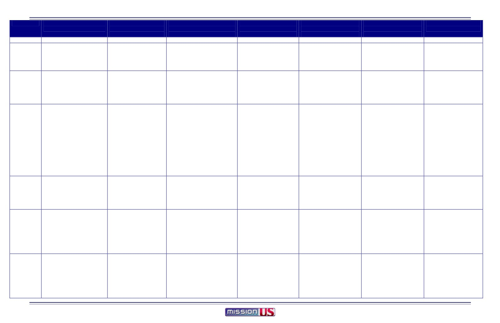
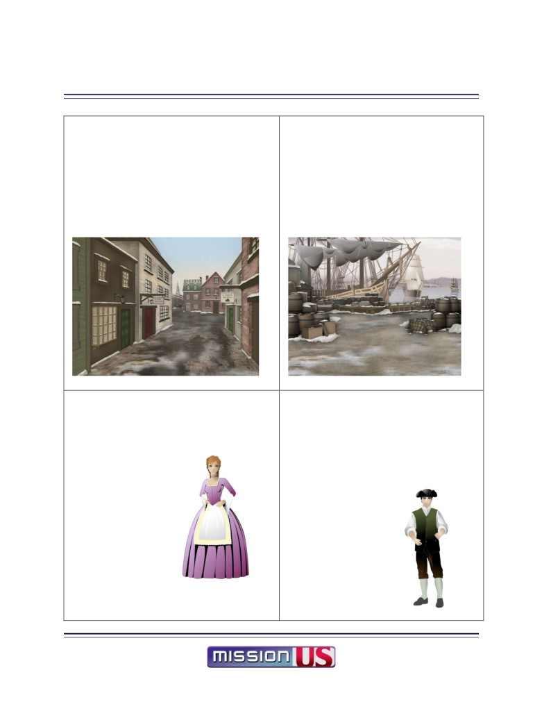
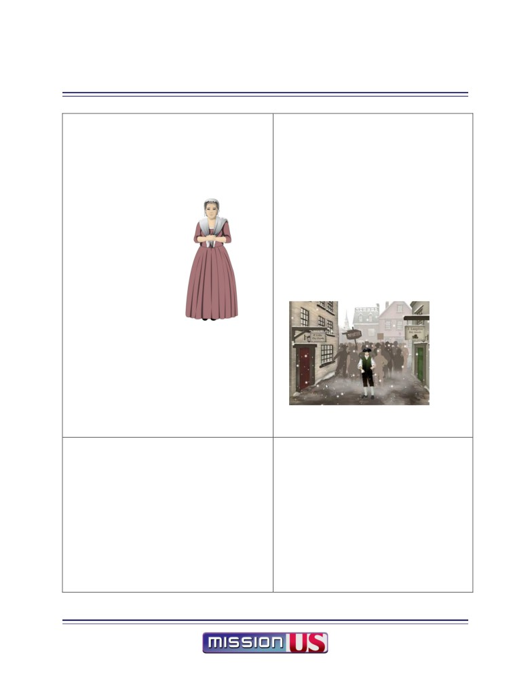

TEACHER’S GUIDE
Table of Contents
MISSION 1: “For Crown or Colony?”
Table of Contents .
1
Mission 1 At A Glance
3
Models of Instruction
4
Instructions and Tips for Teachers
Teachers’ “Cheat Sheet” Game Play Guide .
9
Mission 1: “For Crown or Colony?” Classroom Implementation Table .
29
Historical Background for Students
Essential Questions .
31
Glossary of Key Terms
32
Top 5 Things to Know Before You Play
37
What Happened Before: A Brief Review - 300 Years of American History, in three and
a half short pages
38
Historical Background for Teachers
Timeline of Historical Events Before, During, and After Mission 1: “For Crown or
Colony?”
42
Educators’ Primer on the Historical Period .
46
Historical Figure Biographies .
60
Overview of Game and Characters
About Mission 1: “For Crown or Colony?” .
66
Character Overview .
67
Part-by-Part Overview of the Game .
73
Activities for Part 1 and Prologue
Pre-Game Activity: Was the Principal of Empire Middle School Fair and Right?
Exploring Point-of-View
83
Document-Based Activity: Translating the Liberty Song from English to English. .
90
Part 1 Review Questions
94
Part 1 Vocabulary Activity .
98
Part 1 Writing Prompts
110
Activities for Part 2
Document-Based Activity: Translating a Newspaper Account of Christopher Seider’s
Murder
114
Part 2 Review Questions
122
Part 2 Vocabulary Activity .
123
Part 2 Writing Prompts
129
Activities for Part 3
Document-Based Activity: Making Death Larger than Life - “On the death of
Mr. Snider Murder’d by Richardson” by Phillis Wheatley .
132
Part 3 Vocabulary Activity .
137
Part 3 Writing Prompts
142
Activities for Part 4
Document-Based Activity: Who Started It? .
145
TEACHER’S GUIDE
Table of Contents
MISSION 1: “For Crown or Colony?”
Document Based-Activity: Mr. Revere’s Engraving .
146
Discussion Activity: What Are Rights? What is Freedom? .
158
Post-Game Discussion Questions .
164
Part 5 and Epilogue Activities
Document-Based Activity: “A Decent Respect to the Opinions of mankind” -
Interpreting the Declaration of Independence
166
Chronology/Timeline Activity
172
Epilogue Writing Prompts .
201
Activities for Use Throughout the Game
Engaging Students in Multimedia Projects .
204
Political Perspectives Activity
208
Daily Log Sheet
240
All Primary Sources .
242
Learning Goals
271
National Standards Alignment
275
MISSION US Pilot Study
How MISSION US Can Promote Classroom Learning
279
Pilot Study Executive Summary
280
Additional Resource Guide .
282
Character and Scene Printables
293

TEACHER’S GUIDE: MISSION 1: “For Crown or Colony?” At a Glance
PROLOGUE:
PART 1:
PART 2:
PART 3:
PART 4:
PART 5:
EPILOGUE:
Leaving Home
February 21, 1770
February 22, 1770
February 23-26, 1770
March 5, 1770
March 6, 1770
1770-1776
New In Town
A Death in Boston
March of the Apprentices
From Bad to Worse
A Meeting with Fate
Playing time
12-15 minutes
15-20 minutes
15-20 minutes
15-20 minutes
5-10 minutes
5-10 minutes
2 minutes
Story
Nat leaves home; arrives in
Nat explores Boston; learns of
Nat witnesses colonial protests;
After spinning bee, Nat helps
Nat & Constance witness the
Nat is called to give a
Cinematic shows events
Boston
tensions between Loyalists &
chooses whether to have tea with
spread word about Seider
Boston Massacre.
deposition about the events of
between Boston Massacre
Patriots; meets Constance.
Constance; learns that 11-yr-old
funeral procession being
the massacre; his friends offer
and the Declaration of
Christopher Seider has been killed.
planned by Patriots.
him a choice that may decide
Independence.
his fate.
Nat’s Task(s)
Negotiate and sign
Sell at least 3 ads for the
Buy 4 items for Mrs. Edes’ spinning
Post broadside to Liberty Tree,
Observe the clash between
Give deposition and choose
Indenture Contract
Gazette.
bee.
deliver proof to Paul Revere,
soldiers and protesters.
your fate: stay in Boston and
(Some people won’t buy an
(But don’t buy anything imported!)
and give out 3 bundles of
fight the British; go abroad with
ad-why not?)
pamphlets. (Choose like-
Constance; or sail with
minded Patriots who can
Solomon.
gather a big crowd.)
Target
Economic life and labor systems
Debate over British policies:
Political, ideological, and economic
Political, ideological, and
Contrasting perspectives on the
Political and ideological origins
Political and ideological
Concepts
in the British American colonies:
• Some colonists (Patriots)
origins of the Revolution
economic origins of the
violence in King Street (Boston
of the Revolution:
origins of the Revolution:
• Limitations of land for
feel that British taxes and
•
The Townshend Acts (or
Revolution:
Massacre):
• Boston Massacre as a turning
inheritance;
troops threaten their
Townshend Duties)
• Role of the Sons and
• Patriots see British soldiers as
point
Chronology of events leading
• Apprentice, journeymen, and
traditional rights as English
•
The non-importation (boycott)
Daughters of Liberty
aggressors;
• Dispute over its causes and
from the Boston Massacre to
master artisans;
people;
movement
• Views of working people -
• Soldiers see protestors as
who is responsible summarizes
the Revolution:
• Some (Loyalists) support
•
Multiple forms of protest
apprentices, slaves, free blacks
aggressors;
arguments between Patriots
• Boston Tea Party
Political, ideological, and
British policies and resent
•
The role of women in colonial
-- on colonial protests.
• Eyewitness accounts are
and Loyalists.
• Continental Congress
economic origins of the
Patriots and their protests.
protest
• Role of printing in building a
partial and biased, and need to
• Printed images of the event
• the power of the printed
Revolution:
• Some (including many
protest movement.
be analyzed critically.
influence anti-British feeling
word
• Seven Years War is a context for
slaves) care about liberty, but
• Colonists are still divided
• Lexington & Concord
Britain’s taxation of the colonies
do not take either side.
over Crown v. Colony.
battles.
Classroom
Pre-Game Activity: Exploring
• Document Based Activity
•
Document Based Activity
• Document Based Activity
• Discussion Questions
• Political Perspectives Activity
• Document Based Activity
Activities
Point of View
• Review Questions
•
Review Questions
• Vocabulary Activity
•
2 Document Based Activities
• Chronology/Timeline
• Vocabulary Activity
•
Vocabulary Activity
• Writing Prompts
• Discussion Activity
Activity
• Writing Prompts
•
Writing Prompts
• Political Perspectives
• Political Perspectives
• Writing Prompts
• Political Perspectives
•
Political Perspectives Activity
Activity
Activity
Activity
Key
• Apprentice
• Redcoat
•
Import
• Martyr
• Ropewalk
• Massacre
• Occupation
Vocabulary
• Journeyman
• Artisan
•
Homespun
• Pamphlet
• Redcoats
• Witness
• British East India
• Master
• Freedman
•
Export
• Broadcast
• Massacre
• Deposition
Company
• Indenture
• Slave
•
Taxes
• Liberty Tree
• Musket
• Patriot
• Tax
• Contract
• Slavery
•
Boycott
• Sons of Liberty
• Loyalist
• Continental Congress
• Printer
• Patriot
•
Protest
• Stamp Act
• Revolutionary
• Loyalist
•
Effigy
• King George III
• Tyranny
• Merchant
•
Townshend Acts
• Spinning bee
• Empire
Primary
In the game:
In the game:
In the game:
In the game:
In the classroom:
In the classroom:
In the cinematic:
Documents
Indenture contract
• Boston Gazette
• Boston Gazette with list of
• Broadside announcing
• Revere engraving of the
• Revere engraving of the
• Revere print of Boston
• Text of ads
importers and ads sold on Day 1
Seider funeral
Boston Massacre
Boston Massacre
Massacre
In the classroom:
In the classroom:
• Sons of Liberty pamphlet
• Protest handbill
• Gazette articles
• Newspaper account of Seider’s
• Join or Die poster
• Paine’s “Common Sense”
• Lyrics to “The Liberty
death
In the classroom:
• Declaration of
• Hutchinson reaction to Seider’s
Song”
• Poem by Phillis Wheatley
Independence
death
• Boston Gazette
TEACHER’S GUIDE
Models of Instruction
MISSION 1: “For Crown or Colony?”
The creators of “For Crown or Colony?” have designed the game and accompanying classroom
materials for educators and students to use in a variety of ways. The game’s flexible format
allows for use in the classroom, at home, in the library or media center, or anywhere there’s a
computer with an Internet connection. The game can be played in a one-computer classroom, a
multiple-computer classroom, or in a lab setting. Students playing the game can work alone, in
pairs, or in groups. Educators using the game can decide just how much classroom time they
wish to dedicate to gameplay, in-class activities, and accompanying assignments.
Your students will gain the most from “For Crown or Colony?” if their gameplay experiences
are supported by classroom activities, discussions, and writing exercises guided by your teaching
expertise. The “For Crown or Colony?” curriculum available on the MISSION US website
provides a wealth of materials to connect the game to your own goals and objectives related to
teaching the American Revolution.
This document provides you with some planning questions to help you map out your classroom
implementation of “For Crown or Colony?” as well as three different “models” for low, medium,
and high utilization of the game and the accompanying materials.
TEACHER’S GUIDE
Models of Instruction
MISSION 1: “For Crown or Colony?”
The Test of Time
If a student were to sit down at a computer and play “For Crown or Colony?” from
beginning to end without stopping, the entire gameplay experience would take
approximately 90 minutes. However, we do NOT suggest you use this approach with
students. The game is divided into a Prologue, five separate “parts” (think of them as
chapters in a historical novel), and an Epilogue. Your students’ learning will be
maximized if you take the time to use the gameplay as a “point of departure” or
inspiration for classroom instruction.
As a first step: Play the game yourself and briefly review the curricular materials available on the
“For Crown or Colony?” website. Think about how much classroom time you usually dedicate to
the events and concepts presented in the game. What other curricular goals do the game and
accompanying materials support? What are the dominant themes of your social studies
instruction (vocabulary, writing and reaction, social issues, analysis of primary source
documents)?
*Make a rough estimate of how much classroom time you’d like to dedicate to “For Crown or
Colony?”
Location, Location, Location
As mentioned above, “For Crown or Colony?” can be played in a variety of settings
with a variety of technology set-ups. Your students can play as a class, in small groups,
in pairs, or individually, or you can mix and match these approaches. Depending on
accessibility of technology, students can play in class, at home, or both - since their
online accounts will save their game data wherever they play, and allow them to
continue playing in any setting where a computer with an Internet connection is
available.
As a second step: Consider the technology available to you and your students. Do you want to
play the game entirely in class? Assign some sections as homework? Split student play between
in-class and at home? Ask your students to play the game entirely at home, and dedicate class
time to activities?
*Determine how and where you and your students will play the different sections of the game.
TEACHER’S GUIDE
Models of Instruction
MISSION 1: “For Crown or Colony?”
Classroom Activities, Discussion, and Reflection
The classroom activities available on the “For Crown or Colony?” website offer an
extensive set of resources to support instruction. The activities roughly fall into four
broad categories:
• Document-based Activities
• Vocabulary Activities
• Writing Prompts
• Review Questions
Other activities and resources provide additional primary sources, background
information on the characters and setting, historical essays, and printable artwork from
the game.
As a third step: Review the available classroom materials and activities, and identify those most
strongly aligned to your educational objectives and curriculum. Plan to use the activities “as-
is,” or make adaptations or changes to them. The resources provided may also inspire you to
create your own “For Crown or Colony?” activities. If you do, please share them with the
MISSION US team! Post your ideas, thoughts, and suggestions to the MISSION US Facebook
www.twitter.com/Mission_US.
*Create a preliminary list of the activities you and your students will complete during your use
of “For Crown or Colony?”
Planning
Because of their flexibility, teachers may opt for low, medium, or high integration of the
game and its accompanying materials. There is no “right” or “wrong” way to use “For
Crown or Colony?” Below are some ideas on what the different levels of integration
might look like in a classroom.
“High” Integration (using the game as context for classroom learning)
Estimated Number of 45-minute class periods: 8-10 (excluding homework time)
• Students play the different parts of “For Crown or Colony?” in the classroom or
computer lab, individually or in pairs.
• Before, during, and after playing each part of the game, students process what they
are doing through discussion, writing, and other activities facilitated by the teacher.
TEACHER’S GUIDE
Models of Instruction
MISSION 1: “For Crown or Colony?”
A teacher working in this mode might begin a class by asking students to share what
they learned in the prior part of the game about the main characters, what the keywords
for the day mean, or what they predict will happen in the episode they are about to
play.
During game play, the teacher might walk around and look over students’ shoulders,
asking them to explain a choice they’ve made, and perhaps pose a question to the room
- “How many people decided not to bow to the Customs official?” “Why is bowing, or
not bowing, such a big deal?” “How does that relate to what we’ve been reading about
rights?”
Right after game play and/or for homework, the teacher would engage students in one
of the follow-up activities available on the MISSION US website - discussion and
writing prompts, vocabulary exercises, primary source analyses, or charting characters’
political perspectives - all of which deepen students’ understanding of the period by
connecting game experiences to more formal curriculum knowledge and skills.
Students might end the unit by making presentations, drawings, writing, or completing
other multimedia projects.
Medium Integration (using the game as supplement to classroom learning)
Estimated number of 45-minute class periods: 5 (excluding homework time)
• Students split game play between in the classroom or lab and as homework
• Game play is complemented with in-class and homework activities in which students
write and talk about what is happening in the game, using materials from the website.
• Game play alternates with non-game-related classwork.
A teacher working in this mode might introduce students to the game via a class
playing of the Prologue on a Friday afternoon, and asking students to play the
Prologue, Part 1, and Part 2 for weekend homework.
A portion of the following Monday’s class period would focus on student reactions and
thoughts about the game, as well as a brief vocabulary activity or political perspectives
activity. Students would be asked to play Part 3 of the game before class on Tuesday.
In Tuesday’s class, students would complete a document-based activity related to Part
1, 2, or 3 of the game.
TEACHER’S GUIDE
Models of Instruction
MISSION 1: “For Crown or Colony?”
In Wednesday’s class, students would be assigned to play Part 4 and respond to a
writing prompt or review question as homework.
In Thursday’s class, students would play Part 5 and the Epilogue, and complete one of
the activities related to those portions of the game in class.
In Friday’s class, students would review terms, phrases, and events from “For Crown or
Colony?” and be assigned to respond to a writing prompt or review question as
homework.
Low Integration (using the game as an extra or enhancement)
Estimated number of 45-minute class periods: 1 total (excluding homework time)
• Teacher introduces the game to students (perhaps using a projector), and assigns
students to play the entire game as homework, giving students several days to complete
the task.
• Teacher assigns one or two of the “For Crown or Colony?” writing activities to
students for homework, and/or holds a class discussion about the events in the game,
connecting those events to what students are learning about through traditional study.
other educators are using the game in their classrooms across the country.
TEACHER’S GUIDE
Teacher’s “Cheat Sheet” Game Play Guide
MISSION 1: “For Crown or Colony?”
Overview
This guide—meant for teachers’ eyes only—describes how to complete all the challenges in “For
Crown or Colony?” For almost every problem in the game there are at least two solutions, one that
involves interacting with Patriot-leaning characters and one that involves Loyalist-leaning characters
(and sometimes solutions that try to walk the line between them).
This knowledge may offer good opportunities to ask your students if any of them "tried X instead of
Y,” to help foster discussion about the multiple perspectives encountered in the game.
Prologue
The prologue is designed to provide background information on both the historical context and on
the role and goals of Nathaniel Wheeler. It is also a tutorial on the game interface and conventions.
How the prologue is played has no impact on the rest of the game.
The Indenture Contract
The player is given the opportunity to negotiate up to two terms in the contract. The player may click
on any term on the contract to find out from Mrs. Edes if this is something Mr. Edes might consider
changing. A player MUST CLICK on a term for it to become a possible negotiation point.
The following terms may be negotiated if they are selected:
• He shall serve the said Mr. Edes from the Day of the Date hereof unto the full end and term of
Seven Years.
• The Master also shall procure and provide for him sufficient fare and Drink, with Meat Thrice
weekly.
• He shall not be absent Day nor Night from his Master's Service, without his leave.
• And shall provide lodging as befits an Apprentice
In the game, the player does sleep in the attic, so regardless of what choices the player makes, he will
be given the attic in one of the following ways:
• If the player includes "lodging" in the negotiation, it will be granted along with a second
choice if one was selected.
9
TEACHER’S GUIDE
Teacher’s “Cheat Sheet” Game Play Guide
MISSION 1: “For Crown or Colony?”
• If the player does not include "lodging", Nathaniel's father will negotiate that on his own
(either as an additional term or in place of another).
Part I: New in Town
The player's goal is to sell at least three advertisements and move a heavy crate of type from the
wharf to the print shop.
Selling Advertisements
There are six possible sources of advertisements:
1. Constance Lillie, lost dog
2. Mr. White, candles
3. Mr. Langdon, runaway indentured servant
4. Widow Prescott, land sale
5. Paul Revere, false teeth
6. Phillis Wheatley, building sale
NOTE: All of the advertisements are drawn from actual copies of the Boston Gazette except for the Wheatley
advertisement, which was written by the historians on the project.
1. Constance Lillie
Constance automatically appears on the player's fourth visit to the Boston Map.
She is looking for her lost dog, Thimble, and the player may suggest that an
advertisement may help her find him. Constance will agree reluctantly because
the Gazette is a Patriotic paper and her uncle, Theophilus, is a Loyalist.
If the player ignores Constance there is no future opportunity to sell the
advertisement.
Constance can also suggest that the player visit the Wheatley house to sell an
advertisement (this reveals the Wheatley house on the map for the first time).
10
TEACHER’S GUIDE
Teacher’s “Cheat Sheet” Game Play Guide
MISSION 1: “For Crown or Colony?”
2. Mr. White
Mr. White is located in the North End. He is a stout Patriot and will gladly buy
an advertisement... only he can't find a pencil to write one out. If the player can
find a pencil, Mr. White will gladly write the advertisement.
The "pencil quest" can be solved in three ways:
• Theophilus Lillie: Right next door is the Lillie shop and the player will
have an option to ask about buying pencils. Lillie will give the player a
pencil for free. (Loyalists are nice people, too!)
• Paul Revere: If the player is able to sell an advertisement to Paul Revere, he can ask to borrow
the pencil that Revere uses to write his advertisement.
• Phillis Wheatley: If the player learns that Phillis is a poet, he can ask to borrow a pencil.
Mr. White can tell the player about Paul Revere (and reveal his shop on the map) if the player selects
the "Which troubles do you mean, Sir?" dialog option.
3. Mr. Langdon
Mr. Langdon is located in the North End (just across the street from Mr.
White). He will buy an advertisement if the player can convince him that the
Gazette isn't too political of a paper (he doesn't want to lose business if he is
perceived as on one side or the other). The player can convince him by saying
that Mr. Edes has "honest sentiments.”
The player may also refuse to accept the advertisement once he hears how Mr.
Langdon will whip the servant "until he howls" if he is found. Refusing the advertisement will
infuriate Mr. Langdon and affect his reaction to the player going forward.
This may be a possible discussion point; such treatment was acceptable practice in 1770, but offends
most modern sensibilities.
11
TEACHER’S GUIDE
Teacher’s “Cheat Sheet” Game Play Guide
MISSION 1: “For Crown or Colony?”
4. Widow Prescott
The Widow Prescott can be found selling her wares at Faneuil Hall. She has nothing
to advertise herself, but if the player asks if she knows anyone else who might need
an advertisement, she remembers that her brother is trying to sell some land.
The Widow Prescott is always available to purchase the advertisement, even if the
player fails to do so on earlier visits.
5. Paul Revere
The player can meet Revere in one of two ways: by trying to kick the Customs
Official (who appears on the player's seventh visit to the Boston Map) or by
learning of him through Mr. White or Mrs. Edes.
In the first case, Revere comes to the rescue, stepping out of the crowd and
stopping Nathaniel from doing something pretty stupid. He does admire Nat's
spunk, however, and knows that he is Mr. Edes’s apprentice. He will volunteer
that he'd be happy to buy an advertisement if Nathaniel stops by his shop (which
will now appear on the map). In this case the player doesn't have to do any
selling; Revere will just write out the advertisement.
If the player has not been rescued by Revere, he will have to show his salesmanship. Revere will NOT
respond to whining or flattery—those paths will lose the advertisement (and there will be no way to
get it after that).
6. Phillis Wheatley
Phillis Wheatley can be found in the house of her master, John Wheatley. The
Wheatley house is not initially displayed on the map, but will appear if the
player learns of it through either Constance Lillie or Mrs. Edes.
Phillis will be available to sell an advertisement until the player succeeds. Even
if the player is haughty with her and makes her mad, an apology will re-open
the advertisement possibility.
Phillis is also available to give the player a pencil to help with the "pencil
quest" provided the player has taken the time to learn she is a poet (and might, therefore, have a
writing implement to lend!)
12
TEACHER’S GUIDE
Teacher’s “Cheat Sheet” Game Play Guide
MISSION 1: “For Crown or Colony?”
Selling Advertisements Summary & Notes
When the player has sold at least three advertisements, this task is completed. The player could
potentially sell all six, much to Mr. Edes’ delight.
Three advertisements are always available (meaning the player won't lose these options through bad
choices): Mr. White, Widow Prescott, and Phillis Wheatley.
Each advertisement, when sold, is added to the Inventory. Players may click on them to see the actual
text of the advertisements. Also, in "Death in Boston,” each of the advertisements sold appears on the
page of the Gazette that the player sees at the start of the day.
The advertisement sold to Constance Lillie will always be rejected by Mr. Edes. The player will then
be tasked to return it to her in the next part, "Death in Boston.”
Moving the Crate of Type
There are four ways to move the type:
1. Ask Royce for help
2. Ask Hugh White for help
3. Ask Mr. White for help
4. Ask Mrs. Edes for help
Some of these options require certain pre-conditions to be met, which will be detailed below.
First Step: Talking to Solomon Fortune
For all four options, the player must first talk to Solomon Fortune at the Wharf
and learn that the crate of type is too heavy to carry alone. Learning this makes
all of the options to move it become available, i.e., Royce cannot be found at the
Ropewalk until this is known.
Solomon will also provide opinions about all of the options, and even suggest
that a merchant of patriotic sentiment would gladly help the player by lending a
wheelbarrow (this enables the player to ask Mr. White for help).
13
TEACHER’S GUIDE
Teacher’s “Cheat Sheet” Game Play Guide
MISSION 1: “For Crown or Colony?”
The player can make Solomon angry by suggesting that it is Solomon's duty to help him move the
type. Solomon will not talk further to the player until an apology has been issued.
1. Asking Royce
The most straightforward solution is talking to Royce at the Ropewalk. Royce
will start out by throwing a snowball at Nat. If the player fights back a little,
he will gain Royce's respect. There is an option to "fight dirty", which can
close down the possibility of getting Royce's help if the player doesn't
apologize.
Royce will ask for an unspecified future favor in return (which will turn out
to be spying on the Sons of Liberty meeting in "Death in Boston.")
2. Asking Hugh White
This is the most complicated solution in that it requires Hugh to know that the player
works for the Boston Gazette (the player needs to try and sell an advertisement to Hugh
AND tell him that the paper is the Gazette).
If Hugh does not know this, the player may ask for help, but Hugh demands money,
which Nat doesn't have. However, if he does know of the Gazette connection, he will
demand, in return, that Nat spy on an upcoming Sons of Liberty meeting and report
back to him what he learns.
3. Asking Mr. White
If the player has already sold an advertisement to Mr. White (solving the
"pencil quest") and Solomon has already suggested asking a patriotic
merchant for help, Nat can return to Mr. White and ask to borrow a
wheelbarrow.
4. Asking Mrs. Edes
If the player has exhausted some of the other possibilities, Nat can return
to Mrs. Edes (in the Kitchen) and wheedle her to lend him Mr. Edes'
wheelbarrow. Both she and Mr. Edes will be disappointed in Nat's lack
of initiative, but there are no real negative consequences.
14
TEACHER’S GUIDE
Teacher’s “Cheat Sheet” Game Play Guide
MISSION 1: “For Crown or Colony?”
New in Town In-Game Help: Mrs. Edes
If a player is stuck on either of the New in Town tasks, he can return to Mrs. Edes in the Kitchen and
get suggestions for places to sell advertisements (she will suggest both Wheatley and Revere if the
player presses her enough) and ideas for moving the type. For the type task, she will serve as the
solution of last resort, lending Nat Mr. Edes's wheelbarrow.
Part 2: Death in Boston
On his second day, Nat is tasked with helping Mrs. Edes prepare for an upcoming Daughters of
Liberty spinning bee. He must buy four items: tea, candles, fleece, and indigo. Mrs. Edes is very clear
that all of these items should be locally produced goods and not from importers. Nat is also charged
with returning the advertisement to Constance Lillie if he sold one to her on the first day.
A note on money (and why Nat doesn't have any):
All thirteen colonies including Massachusetts used English money (pounds, shillings, pence). Since Parliament
did not allow the colonies to print paper money or mint currency, cash was scarce. Colonists in cities often
bought goods on credit. Most likely, the Edes had credit accounts with local shopkeepers whom they paid later. It
would be very unusual to give an apprentice money to buy goods. In rural areas, the barter system was often
used, with farmers trading a part of their crops for goods or services. Merchants kept careful account books, and
often had to go to court to collect debts.
Interwoven into the shopping expedition is the protest in front of the Lillie store that later leads to the
shooting and subsequent death of Christopher Seider, a young apprentice.
NOTE: Once the player purchases one of the goods, he may no longer purchase that same good from any other
source (i.e., once you buy tea, you are locked into that decision).
Tea
There are three sources of tea:
1) Constance Lillie (North End). This is imported black tea from England. Constance is fairly
persuasive and many players may purchase from her because the tea is of better quality and
Constance is so nice to them (even though they should know better).
15
TEACHER’S GUIDE
Teacher’s “Cheat Sheet” Game Play Guide
MISSION 1: “For Crown or Colony?”
2) The Widow Prescott (Faneuil Hall). She sells locally grown leaves from
other plants that are used as tea substitutes.
3) Mr. Cunningham (King Street, the door on the left side on the bottom of
the screen). He sells imported tea that he claims was purchased BEFORE
the Townshend Acts.
Candles
There are three sources of candles:
1) Constance Lillie (North End). These are, of course, imported, but they are "less smoky"!
2) Mr. White (North End). These are cheap and locally made.
3) Mr. Langdon (North End...the North End is clearly the "Candle District"). His candles are of
higher quality and more expensive, but they are also locally made. If the player angered
Langdon on the first day by refusing the advertisement, the player can make it up to him by
agreeing to buy a large number of his most expensive candles.
Fleece
There is only one source of fleece--the Widow Prescott at Faneuil Hall.
Indigo
There are two sources of indigo:
1) Mr. Cunningham (King Street). Indigo had to be imported to Boston. Cunningham's
indigo comes from the Carolinas.
2) Solomon Fortune (Wharf). Solomon may give the player a lead to some indigo that he
unloaded recently. The catch is that it is smuggled. If the player chooses this route,
Solomon will direct Nat to a nearby warehouse. During the transaction a redcoat
shows up. If the player throws a snowball, runs and then ducks into an alley, he will
be able to get back to the warehouse and complete the transaction. Other choices will
lose the opportunity and the player will have to go to Cunningham.
The Seider Murder
At some point during the day after the player has purchased some items, Royce will run up to
Nathaniel and announce that Christopher Seider has been shot.
16
TEACHER’S GUIDE
Teacher’s “Cheat Sheet” Game Play Guide
MISSION 1: “For Crown or Colony?”
The player may be sympathetic to Royce and the Patriots, or express more concern about Constance's
welfare (which will anger Royce).
Royce may suggest that the player spy on the Sons of Liberty meeting to get a sense of what the senior
Patriots are planning. Royce may also demand this of the player if Nat owes him a favor for moving
the type.
After this dialog, if the player returns to the North End, the scene will be different. The crowd has
dispersed, the Lillie shop has been defaced, and Hugh White is standing guard.
Death in Boston Summary & Notes
When the player has purchased all four items, he can return to Mrs. Edes in the Kitchen, where he
will learn that Christopher Seider has died of his wounds.
The player can then recount his purchases. Mrs. Edes will be happy with any non-imported goods.
On the other hand, she may potentially dispense outhouse cleaning duty in reaction to purchases that
are imports. The player can get away with one imported purchase if he can at least produce a
justifiable reason.
Mrs. Edes also understands that are no ideal solutions for indigo.
Part 3: March of the Apprentices
This part covers the four days after the murder of Christopher Seider that lead up to the funeral
procession through Boston.
The first two days are short animations describing Mrs. Edes spinning bee and Mr. Edes activities in
the wake of the murder.
In the third day, Nat wakes up to find the Edes gone and a note tacked to the print shop door tasking
him to post a broadside on the Liberty Tree and to bring a proof of a pamphlet to Paul Revere.
Posting the Broadside
The player must travel to the Liberty Tree and then click on the tree. This gives the option to post the
broadside. After posting, the player observes the words "Long Live King George" carved into the tree.
He may use his knife to deface this Loyalist graffiti or add "and God Save the Queen" or leave it alone.
17
TEACHER’S GUIDE
Teacher’s “Cheat Sheet” Game Play Guide
MISSION 1: “For Crown or Colony?”
Choosing the patriotic choice enables the player to see and select stronger Patriotic statements in
future dialogs, while supporting the Queen enables the player to see and select stronger Loyalist
statements. Ignoring the carving keeps milder options open in both directions.
After posting the broadside, the player is approached by Phillis Wheatley (whom the player may
have met and sold an advertisement to in Part I). Phillis is composing a new poem in honor of
Christopher Seider, whom she believes is a martyr in the cause of freedom.
The player may help finish her composition and, potentially, have her recite it at the upcoming
funeral march or have Mr. Edes print it on the pamphlet announcing the funeral (but not both).
The player may also take a Loyalist stance (especially if he chose the "God Save the Queen" option)
and anger Phillis. Phillis believes that the Patriot rhetoric of freedom will carry over to her and lead to
her freedom.
Finally, if the player did not meet Phillis in Part I, he has the option to have the discussion about her
status as a slave.
Showing the Proof to Revere
The player must click on Revere's house near the North End. If the player has never met
Revere, the house will now be made visible.
Before arriving at the house the player is waylaid by a Redcoat who demands to see what he
is carrying. The player may be polite or say that he knows Hugh White (if he does) and talk
his way out of the situation. If the player in any way protests or is uncertain, the Redcoat will
confiscate the proof. However, Royce (who has been secretly tasked by Mr. Edes to keep an
eye on Nat) will come to the rescue with a well-placed snowball. The Redcoat will drop the
proof and chase after Royce and the player may proceed to Revere's.
After dropping off the proof, the player sees a light on at Lillie's shop. The player can go visit
Constance or continue home.
If the player talks with Constance he can, with the right choices, convince her that the British
troops are part of the problem and should leave Boston to help prevent future incidents.
On returning to Mr. Edes, there are several possible outcomes. The player can get Mr. Edes to
agree to have Phillis recite her poem or have it printed (depending on the choices made in the
Phillis dialog), the player can anger Mr. Edes with Loyalist statements and be sent to his
room to think over whether he really wants to be Edes's apprentice, or the player can just
report that the jobs were done.
18
TEACHER’S GUIDE
Teacher’s “Cheat Sheet” Game Play Guide
MISSION 1: “For Crown or Colony?”
Distributing the Pamphlets
The 4th and final day of this Part begins with a short dialog with Mr. Edes where he explains
that he needs the player to go around Boston and distribute stacks of the pamphlets
announcing the funeral march later that day. He is instructed to give the pamphlets to people
who are of patriotic sentiment and who likely know other Patriots to pass the word onto.
This leads directly to a mini-game where the player sees nine possible recipients (some of
whom he has met, but many who are new). The player may click on each person to get a
context clue as to his or her political beliefs and influence. The player must then give stacks of
pamphlets to three of them.
Each person will then respond and, possibly, bring a group of like-minded Patriots to the
funeral. The goal of the interaction is to rally 40 Patriots to the cause (out of a possible 50).
The player then returns to Mr. Edes who evaluates his performance. If the player hit the goal,
Mr. Edes suggests that he take role in the funeral by playing a Patriotic tune on his
pennywhistle (note: in earlier versions of the game this was automatic). If the player fell short and
had previously angered Mr. Edes in expressing Loyalist sentiments, Edes becomes extremely
agitated and deeply questions Nat's loyalties and future.
The funeral march then commences and may include a special scene of Phillis reciting her
poem if the player chose that option.
19
TEACHER’S GUIDE
Teacher’s “Cheat Sheet” Game Play Guide
MISSION 1: “For Crown or Colony?”
Part 4: From Bad to Worse
This part starts with a short animation describing the rising tensions in Boston and showing
Nathaniel spending the day with Mr. Edes working the press for the next edition of the Gazette.
Mr. Edes then asks Nat to take a copy over to Paul Revere.
On his way, Nat runs into Constance, who tells him that she is leaving Boston. No matter how the
player responds, the sound of bells will start. Constance will say that they should hurry to help with
the fire, which she assumes the bells are signaling.
Nat and Constance arrive at King Street where they see the scene before the Boston Massacre occurs.
The player must click on three hotspots in the scene before Thimble appears in an alley across from
the shooting.
Clicking on Thimble will finally catch the wayward pooch and set the stage for Nat's ringside view of
what happens next.
The Massacre is seen as a series of four short animated vignettes. However, each of the four vignettes
has two possible animations (randomly selected). One of them provides a Patriot point of view and
the other is more Loyalist. There are 16 possible unique combinations--meaning that most players will
see different things.
Below are the possible vignettes:
Vignette 1
Vignette 1a: Indistinct objects being thrown (rocks?)
Vignette 1b: Snowballs clearly being thrown
20
TEACHER’S GUIDE
Teacher’s “Cheat Sheet” Game Play Guide
MISSION 1: “For Crown or Colony?”
Vignette 2
Vignette 2a: Soldier fixing bayonet
Vignette 2b: Angry crowd as soldiers march by
Vignette 3
Vignette 3a: Soldiers aiming muskets
Vignette 3b: Royce taunting soldiers that they
"dare not fire".
Vignette 4
Vignette 4a: Soldiers pushing back crowd
Vignette 4b: Soldier being hit by a thrown object
and falling to the ground
21
TEACHER’S GUIDE
Teacher’s “Cheat Sheet” Game Play Guide
MISSION 1: “For Crown or Colony?”
The goal of this approach is to show both the chaos of crowds (people can see very different
things) and to provide a rich basis for whole classroom discussion: "What did YOU see?"
Hopefully, students will realize that each of them had a different experience.
Part 5: A Meeting with Fate
In the final part of the game, the player must go to Faneuil Hall and provide Nat's deposition.
Before the player can enter the deposition room, he must speak to at least two of the
characters waiting outside (Royce, Constance, or Solomon).
The deposition is a series of questions the deposer will ask, Nat will answer, and then the
deposer will "challenge" by citing other evidence (whereupon the player may stick to his
original choice or change his answer in some way).
When the deposition is complete, Mr. Edes tells Nat that, in essence, it is time to choose his
fate. The player can then speak with Royce, Constance, and Solomon. Depending how the
player answers, the player may "unlock" an adventure with that character. It is possible to
unlock all three adventures, but the player can only choose one.
Each adventure, once chosen, includes two more choices that create four possible final
outcomes. Some are very good and others are less kind. There are a total of 12 final outcomes
across the three characters. The choices the player makes are grounded in history and give a
taste of events that occur after the Massacre (including the Boston Tea Party).
Screenshots of the 12 endings are included on the next several pages.
22
TEACHER’S GUIDE
Teacher’s “Cheat Sheet” Game Play Guide
MISSION 1: “For Crown or Colony?”
Constance Endings
23
TEACHER’S GUIDE
Teacher’s “Cheat Sheet” Game Play Guide
MISSION 1: “For Crown or Colony?”
24
TEACHER’S GUIDE
Teacher’s “Cheat Sheet” Game Play Guide
MISSION 1: “For Crown or Colony?”
Royce Endings
25
TEACHER’S GUIDE
Teacher’s “Cheat Sheet” Game Play Guide
MISSION 1: “For Crown or Colony?”
26
TEACHER’S GUIDE
Teacher’s “Cheat Sheet” Game Play Guide
MISSION 1: “For Crown or Colony?”
Solomon Endings
27
TEACHER’S GUIDE
Teacher’s “Cheat Sheet” Game Play Guide
MISSION 1: “For Crown or Colony?”
28
TEACHER’S GUIDE
MISSION 1: “For Crown or Colony?” Classroom Implementation Templates
This template can be used to plan your utilization of the “For Crown or Colony?” game and associated activities in your
classroom. Use additional copies of this handout if you intend to dedicate more than five class periods to the game and
materials in your classroom.
Video Game Play
Out-of-Class or
Class Period
(Which segments of the
Learning Focus
In-class Activities
Homework Activities
game?)
1
2
3
4
5
Assessment
TEACHER’S GUIDE
MISSION 1: “For Crown or Colony?” Classroom Implementation Templates
This blank calendar can be used in conjunction with the Classroom Period Template as a reference for incorporating “For
Crown or Colony?” into your planned unit(s) on colonial America/the American Revolution.
The first day is filled in as an example.
“A Death in Boston”
Feb. 22, 1770
-Read background
historical info as a
M
class
O
-Play prologue
N
-Ask students to
D
write letter home
A
from Nat’s
Y
perspective
TEACHER’S GUIDE
Essential Questions
MISSION 1: “For Crown or Colony?”
MISSION 1: “For Crown or Colony?” is designed to help students think about the following
questions, among others. Keep them in mind as you play the game.
1. Why would people who enjoyed the benefits of being part of the richest, the most
powerful, and the freest Empire in the world, risk their lives to revolt?
For 150 years the colonies were at peace, and deeply attached to Crown and country by:
• protection from the British military on the frontier and the sea;
• successful trade, through a large market for American raw materials and access
to English manufactured goods
• pride in English culture and traditions, and the power of the Empire.
What happened in just 15 years to make them throw off the Empire?
2. How do big changes - like a revolution against a government - happen?
• Who first protested against the British? Who remained loyal? Who was neutral?
• How did a person’s status in colonial society shape their political perspectives?
• What did colonists mostly agree about? What did they disagree about?
• What causes a shift in people’s opinions
- is it events, arguments, persuasion,
propaganda, or a combination of many factors?
3. Is violence ever justified?
• What different kinds of protest do the colonists engage in?
• How are the kinds of protest different for women and men, for people who have
wealth and literacy and those who don’t?
• What role does violence play in the conflict between the Crown and the colony?
• How did colonists argue about violence at the time ?
4. Do the colonists practice what they preach?
• What principles do the Patriots say they are fighting for? What language do they use?
• Who in colonial society do the Patriots’ principles apply to? Who do they not apply to?
Did the colonists practice these principles after gaining independence?
TEACHER’S GUIDE
Glossary of Key Terms
MISSION 1: “For Crown or Colony?”
As students play MISSION 1: “For Crown or Colony?” they will encounter the many of the following
key terms and definitions. The key terms appear throughout the Mission during the different “days” in
Nat’s life; please see the Day-by-Day Overview in the Mission Overview section of the Teacher
Materials for information on when terms are included in gameplay. Additional terms are included for
teacher and student reference.
apprentice: a young person who is trained in a craft in exchange for labor.
artisan: a person who makes a living from a craft (eg. silversmith, printer, candlemaker).
Boston Massacre: the name given to an incident that took place on March 5, 1770, in which
five civilians were killed by British soldiers; it is one of the events that helped spark the
American Revolution.
Boston Tea Party: the name given to an act of political protest by American colonists,
directed against the economic policies of Great Britain, in which colonists destroyed many
crates of tea on ships in Boston Harbor; it is another one of the events that helped spark the
American Revolution.
boycott: an organized refusal to buy goods, usually for the purpose of changing a political or
business policy (term named for an English landowner, Charles Boycott, whose high rents
and eviction of Irish tenants set off a protest, organized by the Irish Land League in which
servants, mail delivery, farmhands refused to work for Boycott).
broadside: printed poster or public announcement, designed to catch a reader’s attention and
declare the latest news, government proclamations, public service announcements, opinions
or advertisements.
Coercive Acts: referred to by the colonists as the “Intolerable Acts”; passed by the British
Parliament in 1774 in response to the Boston Tea Party; only king or governor could appoint
officials in the colonial government; limited town meetings; closed the Port of Boston until
the East India Company was paid back for the destroyed tea; made it possible for troops to be
housed in empty buildings.
32
TEACHER’S GUIDE
Glossary of Key Terms
MISSION 1: “For Crown or Colony?”
Committees of Correspondence: bodies organized by colonial governments to facilitate
written communications between colonies; planned the meeting of colonial representatives in
Philadelphia in September-October 1774.
Daughters of Liberty: colonial women who actively supported the patriot cause by
boycotting British goods either by abstaining or manufacturing local substitutes, such as
homespun cloth.
Declaratory Acts: passed by the British Parliament in 1766 in response to the repeal of the
Stamp Act; reasserted Parliament’s right to pass laws in the colonies.
East India Company: a private English trading company, supported by the British
government, whose monopolistic practices in the American colonies led to the Boston Tea
Party.
empire: a political state which extends its economic and/or military power over a large
geographical area, often encompassing people and cultures distinct from those of the central
power.
First Continental Congress: a body of representatives from twelve of the thirteen colonies
which met in Philadelphia in 1774, largely in response to the so-called “Intolerable Acts”
imposed by Great Britain.
French & Indian War: the name given to the war fought on North American soil between
Great Britain and France between 1754 and 1763. Related to the Seven Years’ War between
Britain and France, the war involved various Native Americans groups who fought on both
sides, and culminated with the conquest by Britain of France’s territories in Canada.
homespun: a type of cloth manufactured in the home using a loom and spinning wheel;
created and worn in the colonies in as part of the boycott of British goods, including silk and
other fabrics.
import: goods or merchandise brought into a country or region from another country.
33
TEACHER’S GUIDE
Glossary of Key Terms
MISSION 1: “For Crown or Colony?”
export: goods or merchandise produced in one country that are then shipped to and sold in
another country.
journeyman: a person who has served an apprenticeship in a trade and is qualified to work
and earn wages in that trade.
King George III: the King of Great Britain from 1760 to 1820. Imposed many different taxes
on American colonies in an effort to pay for military efforts in North America and elsewhere.
Viewed as the classic symbol of British sovereignty and tyranny - “The Crown.” Blamed by
many for prolonging the conflict with the colonies and the American Revolution
unnecessarily, and ultimately losing the colonies.
Liberty Tree: the Sons of Liberty first met under this large elm tree near Boston Commons to
protest the Stamp Act in 1765; Liberty Trees sprang up in other colonies as meeting place for
Patriots.
Loyalist: a colonist who remained loyal to the British crown.
martyr: One who suffers or sacrifices something of great value - often one’s own life - for
refusing to renounce a belief or standing up for one’s principles.
master: the title by which an indentured servant or apprentice would refer to his overseer
and/or guardian, usually a skilled artisan or craftsmen.
merchant: one involved in the buying and selling of goods.
Navigation Acts: a series of laws which restricted the use of foreign shipping in the trade of
Great Britain; required all imports to the colonies to be brought from Britain, no matter how
cheaply they may be obtained elsewhere. One of the causes of colonial resentment which led
to the American Revolution.
pamphlet: printed leaflet or booklet, often containing political, philosophical or religious
arguments, essays, and commentaries on current events. Pamphlets were usually printed
and distributed quickly and cheaply.
34
TEACHER’S GUIDE
Glossary of Key Terms
MISSION 1: “For Crown or Colony?”
Parliament: the supreme legislative body in the British political system; consists of two
houses: the House of Lords and the House of Commons.
Patriot: one who loves his country; in the colonial context, one who supported defending
American interests from British policies that were perceived as unfair, and/or was in favor of
the political separation of the colonies from Great Britain.
pennywhistle: small, inexpensive woodwind instrument, also known as a tin whistle.
Proclamation of 1763: a decree issued by King George III at the end of the French and Indian
War to establish boundaries of the new territories acquired from the French. The
Proclamation forbade colonists to buy land or settle west of the “Proclamation line” that
roughly followed the Appalachian Mountains.
protest: to object to something; also to demonstrate one’s objection by any number of means,
i.e., marching or boycotts.
quartering: giving shelter to someone, often under duress; the Quartering Act passed by
Parliament in 1774, one of the so-called “Intolerable Acts,” required colonists to house British
soldiers in unoccupied buildings.
Redcoat: nickname given to British soldiers due to the color of their uniforms.
representation: refers to the right to have the political interests of a community or area
spoken for by an elected official in a government body; the rallying cry of the Sons of Liberty
and other patriots was “No taxation without representation!”
search and seizure: provision that allowed British soldiers and officials to inspect and
confiscate colonial property without a search warrant or probable cause
Sons of Liberty: a secret organization of American patriots who engaged in acts of protest
and resistance before and during the Revolutionary War.
35
TEACHER’S GUIDE
Glossary of Key Terms
MISSION 1: “For Crown or Colony?”
spinning bee: a gathering of people, usually women, to encourage the production of yarn as
opposed to importation. Spinning bees were a popular forum for expressing opposition to
heavily taxed British goods.
Stamp Act of 1765: a law passed by Parliament that imposed a direct tax on the colonies;
required all documents, permits, contracts, newspapers, and other written materials to be
marked with a tax stamp.
tarring & feathering: a form of public humiliation and punishment, usually carried out by a
mob, in which the victim is covered first in tar, then feathers. In colonial Boston, British
officials and their colonial supporters, or loyalists, were sometimes tarred and feathered by
angry townspeople.
tax collector: a government official whose job it is to collect tax revenues.
taxes: financial contributions required by governments of individuals, businesses, or
organizations.
Tea Act of 1773: an Act of Parliament which allowed the East India Company to export its tea
directly to the colonies, paying only a small import duty; angered the colonists and led to the
Boston Tea Party.
Tory: a name originally describing a political party in Great Britain; used before and during
the American Revolution to describe anyone who remained loyal to the British Crown.
Townshend (Revenue) Acts or Duties: Acts passed by Parliament which placed a tax on
common products imported into the colonies, such as paper, lead, glass, and tea.
36
TEACHER’S GUIDE
Top 5 Things to Know Before You Play
MISSION 1: “For Crown or Colony?”
Before you begin playing MISSION 1: “For Crown or Colony?” here are five important pieces of
information to consider. This information may or may not help you as you as you make your way
through life in colonial Boston!
1. In the 1700s, England was the “home base” for a sprawling Empire, with colonies that
stretched across the globe. The thirteen original American colonies were an outpost of that
worldwide Empire. England fought many expensive wars with other European powers such
as France to protect its territory and trade.
2. The American colonies had enjoyed the benefits of being part of this worldwide Empire for
150 years - including protection on the frontier and the sea, successful trade, and pride in
English culture and traditions.
3. In 1763, at the end of the French and Indian War, England had a national debt of 123
million pounds. In order to pay this debt, Parliament passed a series of acts to collect revenue
(money) from its American colonies - acts that colonists did not like. These acts included:
• The 1764 Sugar Act, which enforced existing regulations
• The 1765 Stamp Act, which led to colonial reaction (the Stamp Act Riots)
• The 1767 Townshend Acts, which taxed tea, glass, paper, and painters’ colors.
4. In 1768, British troops arrived in Boston to keep the peace and enforce the Townshend
Acts. Many colonists felt as though they were being punished, and viewed the British troops
as an invading army.
5. The philosopher John Locke, writing in 1690, had articulated the idea that rulers (like the
King of England) had a duty to protect the rights of their subjects, and if rulers did not do
that, the subjects could form a new government.
TEACHER’S GUIDE
What Happened Before: A Brief Review
300 years of American History, in three and a half short pages!
For MISSION 1: “For Crown or Colony?”
If you are new to the study of colonial America, or if you just need a crash course before playing
MISSION 1: “For Crown or Colony?” this overview provides a summary of what happened in North
America in the years leading up to the beginning of the game.
THE EXPLORERS: WHAT THEY WANTED
After Christopher Columbus “discovered” the “New World” in 1492 (which was not in fact
“new,” as many Native Americans have pointed out ever since), many Europeans were eager
to travel to the Americas. The kings and nobles of Spain and Portugal were the first to send
explorers and soldiers there, and they took what they thought was the best land: what is now
Mexico and Brazil, California, and the rest of Central and South America. They wanted to
explore for three reasons: gold, God, and glory.
Gold is obvious: who wouldn’t want it? Kings did, so they could fight their endless wars and
buy their expensive perfumes and spices and such. God: Europe was in the middle of a huge
ongoing war between two types of Christianity: Catholicism and Protestantism. They each
competed to see how many natives they could convert (by gunpoint, in some cases) for their
side, convinced they were saving their souls and scoring one for their team. With all the gold
and god came glory: they would make it to the history books!
COLONIES: BENEFITTING THE MOTHERLAND
To get the most out of their new land, the European countries made what are called colonies:
lands owned and ruled by a distant mother country (like Spain or Portugal) for the benefit of
the mother country.
Countries like Spain and Portugal basically presented this deal to the people who lived in
their colonies: you colonists (meaning the native people in these lands) will give us all of
your gold, work for us for free, change your entire culture, convert to our religion, in some
cases become our slaves, and accept all these white Spaniards invading and claiming your
land, so that you can give us all of the gold and other expensive natural resources such as
wood and spices, sugar cane, coffee, etc.
In return, you get the benefit of being ruled by us and having our laws, churches, and if you
are lucky, our schools, and to buy items we made with your resources for really high prices.
38
TEACHER’S GUIDE
What Happened Before: A Brief Review
300 years of American History, in three and a half short pages!
For MISSION 1: “For Crown or Colony?”
Want to buy a chair for 300 dollars? Didn’t think so. But it’s against the law to make your
own.
Does it sound like a bad deal, this colonialism? Too bad. We control you and you have no
rights, because you are a lowly colonist. Complain and you will die.
France soon joined the game, and developed colonies across what is now Canada and much
of the Midwestern United States.
ENGLAND STARTS THE COLONIAL GAME LATE
England was quite late to the colonial game, having been distracted by religious wars (those
Catholics and Protestants again) and invasions (Spain tried to sail their way to England and
force Queen Elizabeth to marry the king of Spain in 1588. Spain lost.) By the time they were
ready to form a permanent colony, the only land left was in North America. English colonists
arrived in Virginia in 1607, found no gold, no native Americans willing to convert, and little
glory (although John Smith did meet Pocahontas, and she never married him).
Unlike the Spaniards, the English had little to no influence or control over the local Indians
because the colonists were spending all their energy trying not to starve to death or die of
malaria. The next two colonies, formed in Massachusetts in 1620 (think Pilgrims) and 1630,
were also slow to succeed. Most English colonists died within their first year in North
America. In all three cases, the colonists only survived because local native American tribes
took pity on them and showed them how to farm corn and tobacco.
ENGLISH COLONIES VERY DIFFERENT, MORE INDEPENDENT
English colonies were VERY different than their Spanish and Portuguese counterparts. The
importance of this cannot be stressed enough. It is a major reason why America is rich and
powerful today, with a stable government, and why most of Central and South America is
not. First of all, instead of spending time trying to find gold, finding it, then sailing back to
Spain, English colonists were here for good. They came for a better life (land was cheap!), or
because they wanted to practice their religion without anyone bothering them. For the most
part, they learned to live with local tribes in an uneasy peace. By 1775, when the American
Revolution broke out, there were 13 English colonies all up and down the East coast of North
America. (Can you name them?)
39
TEACHER’S GUIDE
What Happened Before: A Brief Review
300 years of American History, in three and a half short pages!
For MISSION 1: “For Crown or Colony?”
The other major reason why English colonies were different is because English colonists had
rights. They had the right to some freedom of religion (In Spanish colonies, everyone had to
be Catholic), some freedom of speech and press (none in the Spanish colonies), free schools
in some parts, and ****the right to vote and make local laws for themselves.**** English
colonists, however, had no say in England and could not make laws there. And not everyone
had these rights (for example, women, slaves, and in the south, poor men), but the fact that
some had them was a REALLY big deal. English colonists were used to saying what they
thought and believed, and no one was going to shut them up. (If you are used to saying
what you think and making your own decisions, why might you be better off when
independence comes? What happens when people with no experience of government or
rights or education get their own country?)
LIFE IS GOOD FOR AMERICAN COLONISTS
The first half of the 1700s was a pretty good time to be an American colonist, if you were
white. Imagine: your mother country (England) is the richest and most powerful country on
earth. Many people in your colony have rights. And you have the ability to get rich! Yes, that
is right! At a time when in most countries, if you were born poor you would always stay
poor, poor white men could buy land and actually become rich! And the best part was that
England was so busy fighting wars against its traditional enemy, France, it was totally
ignoring the colonists. This meant English colonists felt free to ignore all the trade rules that
said they had to trade with only English merchants for high prices, and were secretly getting
rich off trading with the French and Spaniards. This is a kind of piracy, though not the kind
like in Pirates of the Caribbean. Taxes were low. People were doing what they wanted, which
was trying to get rich.
THINGS START TO GET UGLY
This all came to a screeching halt in 1754, when the French and Indian War started. This was
actually Part Two of a war between England and France that was already happening in
Europe. This time, the war was in the colonies, and England told the colonists they would be
happy to fight in it, and would also help pay for this fight. England won the war against
France, with the colonists’ help, and doubled the size of the English territories by taking
France’s North American colonies. But when England then raised taxes on the colonists to
help pay off their war debt, the colonists were mad. They had already paid for the war, and
40
TEACHER’S GUIDE
What Happened Before: A Brief Review
300 years of American History, in three and a half short pages!
For MISSION 1: “For Crown or Colony?”
they had fought it, too. Why more taxes? England’s response was that as English colonists,
with English rights, they should just shut up and stop whining. After all, the colonists paid
VERY little tax compared with English people in England. They had most of the benefits of
being English citizens, so shouldn’t they be grateful?
Many were. Some 30% or so of English colonists actually sided with King George III and
Britain. They were called Loyalists, or Tories. The rest were not. They were called rebels or
Patriots, depending on who was saying it. After having taken care of themselves very well in
the last 100 years, thank you very much, they didn’t need England coming in and telling
them what to do. They rebelled against the taxes, using their free speech, but also protested
with boycotts, riots, and violence. King George punished them by suspending (stopping)
their local councils, arresting critics without a trial (another one of their traditional English
rights), shutting down their ports and taxing them even more. He sent troops to Boston, in
Massachusetts Colony, where the colonists were particularly rebellious, and that brings us to
1770, when MISSION 1: “For Crown or Colony” begins.
41
TEACHER’S GUIDE
Timeline of Historical Events Before, During, and After the Mission
MISSION 1: “For Crown or Colony?”
February 10, 1763—The French and Indian War, which is known as the Seven Years War in
the American colonies, ends with the Treaty of Paris, leaving Britain victorious over France
but saddled with a huge war debt.
April 5, 1764—The British Parliament enacts the Sugar Act—the first of several unpopular
attempts to raise revenues from the colonies through taxes on imported goods.
June 29, 1767—Parliament enacts the Townshend Acts (or Townshend Duties), which impose
taxes on paper, paints, glass, and tea. Colonists angry at “taxation without representation”
boycott these British goods and harass the customs officials charged with enforcement of the
duties.
October 1, 1768—a troop of British soldiers arrive in Boston to maintain public peace and
order, as well as enforce British tax laws. Many colonists in Boston treat the solders as though
they are an invading army, and regularly harass them.
February 22, 1770—When a group of colonists protests at the home of Loyalist Ebenezer
Richardson, a small riot breaks out and Richardson fires into the crowd, wounding an eleven
year-old boy named Christopher Seider. Seider dies later that evening.
February 26, 1770—Christopher Seider’s funeral. Seider is proclaimed a martyr for liberty
and a victim of tyranny. Seider’s long funeral procession increased tensions with the British
soldiers stationed in Boston.
March 2, 1770—Colonists and British soldiers get into a brawl at John Gray's ropewalk (a
ropemaking facility) in Boston.
March 5, 1770—A wigmaker’s apprentice insults a British officer, and in retaliation, a soldier
named Hugh White smacks the apprentice on the side of the head with his musket butt.
Several hours later, a crowd of colonists gather around white near the Boston Customs
House, throwing snowballs, ice, and oyster shells. More soldiers are sent to help White, the
crowd continues to throw snowball and wave sticks, someone yells “Fire!” and the soldiers
shoot into the crowd. Five colonists are killed. Although the soldiers plead self-defense, the
42
TEACHER’S GUIDE
Timeline of Historical Events Before, During, and After the Mission
MISSION 1: “For Crown or Colony?”
incident becomes known as “The Boston Massacre” and becomes a major rallying point for
Patriotic colonists.
March 6, 1770—Captain Thomas Preston arrested and sent to jail. Citizens of Boston gather
in Faneuil Hall, to call for the immediate removal of all British troops from the city. John
Adams and Josiah Quincy agree to defend Captain Preston and the soldiers.
March 8, 1770—Four victims of the massacre are buried. All shops in Boston are closed.
Over 10,000 mourners participated in the funeral procession.
March 12, 1770—Captain Preston gives a deposition to a Boston court on the events of March
5.
March 14, 1770—Captain Preston and eight British soldiers are indicted for murder for their
roles in the Massacre.
September 7, 1770—Captain Preston and the soldiers are formally arraigned on charges of
murder. Both Preston and the soldiers plead “not guilty.”
October 24-30, 1770—Captain Preston’s trial. Preston is acquitted from all charges after the
evidence fails to establish he ordered the soldiers to fire.
November 27-December 5, 1770—Six of the soldiers are acquitted on all charges. Two of the
soldiers are convicted of manslaughter.
December 14, 1770—The two convicted soldiers have their thumbs branded as punishment
for their roles in the Massacre.
December 16, 1773-Protesting Parliament’s recently enacted Tea Act, which gives the British
East India Company a virtual monopoly on tea in the colonies, Boston Patriot merchants
disguised as Indians throw crates of tea into Boston Harbor in what comes to be known as
“The Boston Tea Party.”
June 2, 1774 - The British declare martial law in Massachusetts.
43
TEACHER’S GUIDE
Timeline of Historical Events Before, During, and After the Mission
MISSION 1: “For Crown or Colony?”
October 26, 1774-In preparation for possible confrontation with the British, colonists form
local militias known as Minutemen. They are called this for their ability to be ready for battle
“at a minute’s notice.”
April 19, 1775—The Revolutionary War officially begins when Massachusetts Minutemen
confront British troops at the Battles of Lexington and Concord.
May 10, 1775—American troops surprise the British at Fort Ticonderoga on Lake Champlain,
capturing the fort without firing a shot.
June 14, 1775—The Continental Congress establishes the Continental Army, appointing
George Washington as its Commander-in-Chief the next day.
June 17, 1775—Despite suffering heavy casualties, British troops defeat the Americans at the
Battle of Bunker (actually Breed's) Hill in Boston.
August 22, 1775—King George III officially declares the American Colonies to be in a state of
open rebellion.
November 14, 1775—Lord Dunmore, the royal governor of Virginia, offers freedom to slaves
or indentured servants who agreed to fight against the Patriots.
March 17, 1776—British forces evacuate Boston after cannons captured by the Americans at
Fort Ticonderoga are hauled overland 300 miles and installed in positions overlooking
Boston harbor.
July 4, 1776—The Continental Congress approves the Declaration of Independence, and
separates the colonies from the British Empire.
August 27, 1776—Washington’s army is forced to retreat after being defeated by British and
Hessian mercenary troops in the Battle of Long Island—the largest single engagement of the
war. The British subsequently capture New York City, which will remain in their hands until
the end of the war.
44
TEACHER’S GUIDE
Timeline of Historical Events Before, During, and After the Mission
MISSION 1: “For Crown or Colony?”
December 25, 1776—After retreating through New Jersey, Washington’s army crosses the
Delaware River on Christmas Eve, taking Hessian forces at Trenton by surprise. This and the
subsequent American victory at Princeton on January 3, 1777 do much to restore American
hope after earlier defeats.
September 19, 1777—American forces win the First Battle of Saratoga. The French take notice
of the growing possibility of American victory over the British—their own traditional enemy.
May 4, 1778—The Continental Congress ratifies the Treaty of Alliance with France.
December 1778—The British occupy Savannah, Georgia. Frustrated by their inability to
destroy Washington’s Continental Army in the North, the British concentrate their efforts in
the southern colonies, fighting against a successful guerilla campaign led by American
generals Daniel Morgan and Nathanial Green.
July 9, 1778—The Continental Congress approves the Articles of Confederation.
October 19, 1781—Cornered by American and French forces on land and blockaded by
French warships at sea, British General Lord Cornwallis surrenders his army to Washington.
Although peace is not officially ratified, this marks the end of the American Revolution.
January
14,
1784—The definitive articles of the Peace of Paris are ratified, formally
establishing peace between the British Empire and the United States of America.
45
TEACHER’S GUIDE
Educator’s Primer on the Historical Period
MISSION 1: “For Crown or Colony?”
I. The Roots of Rebellion: The French and Indian War
When, in 1776, the people of the thirteen colonies declared independence from Britain and
formed the United States, they transformed both the history and the geography of North
America. To most people in the middle of the eighteenth century, the union of Britain’s North
American colonies into a single nation would have seemed almost inconceivable. The
thirteen colonies that would later form the United States—Massachusetts, Vermont, New
Hampshire, Connecticut, New York, Pennsylvania, New Jersey, Delaware, Maryland,
Virginia, North Carolina, South Carolina, Georgia—were all separate. There was little unity
between them, and few institutions to foster it. In 1754 Benjamin Franklin and others put
forward the Albany Plan, for a union of colonies to conduct defense and Indian affairs, but
this came to nothing. Most colonies had closer, more regular ties with Britain than they had
with each other, and to leading colonists the British connection seemed largely beneficial. The
sparks of colonial rebellion were generated by British policies and colonists’ responses to
them after the French and Indian War.
Over the first half of the eighteenth century, the British government had rarely intervened in
colonial business. It usually left governors and provincial assemblies to get on with things for
themselves. For decades colonial elites had controlled the taxation and administration of their
colonies. Still, the continent’s increasingly important role in overseas trade and in Britain’s
rivalries with other European powers caused Britain’s interest in the colonies to grow. The
war of 1754 to 1763—its achievements and its consequences—would reshape British views of
its colonial empire and its colonists’ views of the mother country.
American colonists were repeatedly embroiled in wars, not
usually of their own making, for which they had to raise armies
and pay taxes. Often arising out of European concerns, these wars
nevertheless involved North American territory. Colonists took
pride in their
“English liberties”
—voting for representatives,
protection from arbitrary power, common law rights such as that
to trial by jury—and were content enough to support wars
against France or Spain, which they saw as “tyrannies” unblessed by such privileges. Their
support for war was greatest when colonial and British ambitions coincided. The 1754 peace
pact reached six years earlier by Britain and France was broken by American events. France
saw Virginia settlers and Pennsylvania traders, who were pushing west across the
46
TEACHER’S GUIDE
Educator’s Primer on the Historical Period
MISSION 1: “For Crown or Colony?”
Appalachian mountains, as a threat to its territorial interests. When the French tried to build
forts in the Ohio Valley, British and colonial governments warned them off. In western
Pennsylvania in
1754, a Virginia militia unit under a young colonel named George
Washington blundered into a skirmish with French troops, and touched off a war that would
spread to Europe, India, and the Caribbean, as well as North America.
The French and Indian War, as it was known in America, was successful for Britain and its
American colonies, but also exposed disagreements between them. Colonists disliked having
British troops “quartered” (compulsorily billeted) in their homes. The British did not view
colonists as their equals; they looked down on colonial militias as less effective than their
own regular soldiers, because the militias did not embody what they believed to be proper
social subordination. Most British officers were aristocrats and gentlemen who commanded
soldiers drawn from among the poor and disadvantaged. Many colonial militia units
reflected the greater democracy of New World settlements, with much less social distance
between officers and men.
The war also spurred British political interest in the colonies, and a shift toward greater
intervention in colonial affairs. It had been costly, and Britain looked to the colonies to foot
part of the bill. The end of the war also led to an economic downturn in the colonies. The
slump was worst in Boston, which had sunk into an economic stagnation that the war had
only temporarily alleviated. Its population ceased to grow around 1750, and some of its trade
was drawn away by other ports, especially the rapidly growing towns of Philadelphia and
New York. Boston was thrown into a severe postwar depression as work disappeared and
many people found themselves without employment.
“For Crown or Colony?” Connections:
• Nat’s older brother Christopher fought in the French and Indian War
• Mr. Edes describes the debt facing both Great Britain and colonists
II. Conflict Grows Between Crown and Colony
The French and Indian War also laid a heavy financial burden on Britain. The government of
prime minister William Pitt had spent lavishly and raised taxes to conduct the fighting in the
late 1750s. The new prime minister, George Grenville, faced enormous debts, as well as
expenditures for the navy, army, and officials essential to keeping Britain’s newly expanded
47
TEACHER’S GUIDE
Educator’s Primer on the Historical Period
MISSION 1: “For Crown or Colony?”
empire intact. Reluctant to raise taxes further at home, Grenville’s unstable administration
looked to the American colonies to provide some of the necessary revenues. Parliamentary
efforts to levy taxes in the colonies met with repeated resistance. Between 1765 and 1775,
successive crises, each more serious than the last, drew increasing numbers of people from all
levels of American society into a struggle that would eventually lead to independence.
Animating this struggle was a growing belief that the British intended to remove their
“liberties” and subject them to the tyranny of arbitrary government — to “enslave” them, as
many colonists started to say.
Grenville began his effort to increase revenues from the colonies with the Sugar Act of 1764,
designed to end the notoriously inefficient enforcement of the navigation laws. Since 1733
there had been a high duty imposed on molasses imported to North America from foreign
colonies, but none on molasses from British colonies. Smuggling was easy and revenues
suffered. The Sugar Act imposed a new, low duty on imported molasses, making smuggling
less lucrative, and provided for more customs officers to be sent to America to enforce the
law.
Grenville’s next step ignited a serious crisis. In
the Stamp Act of 1765 he extended to the colonies
a measure already used in Britain: the
requirement that a stamp be purchased for many
documents and printed items
(land titles,
contracts, court documents, playing cards, books
and newspapers). The tax had to be paid in hard
currency, difficult to come by in the economic
slump. The money raised would remain in the
colonies to pay for troops and administration, but
Source: National Museum of American History
Smithsonian Institution, Behring Center
it would be controlled by colonial governors, not
the elected assemblies. The Stamp Act provoked widespread anger because it affected
almost everyone. Apprentices signing indentures, young couples getting married, merchants
making contracts, people making wills, buying or selling land or slaves, newspaper
readers—all would have to pay the new tax. The act also hit at the power of colonial political
elites. Political instability in Britain led to the ousting of Grenville, and to the repeal of the
Stamp Act early in 1766. Parliament, however, emphasized in a Declaratory Act that it
retained the right to “make laws and statutes . . . to bind the colonies and people of America .
48
TEACHER’S GUIDE
Educator’s Primer on the Historical Period
MISSION 1: “For Crown or Colony?”
. . in all cases whatsoever.” Although this act contained no specific measures, its spirit paved
the way for further conflicts with the colonies.
In 1767 Parliament and a new chancellor of the exchequer, Charles Townshend, tried to tax
the colonies again, both to raise money and to exercise parliamentary supremacy. Believing
that colonists had rejected the Stamp Act because it was an “internal” tax, collected within
the colonies themselves, Townshend sought to levy “external” taxes on goods brought into
the colonies. The Revenue Act of 1767 (the “Townshend Duties” or “Townshend Acts”) taxed
paint, paper, lead, glass, and tea as they reached America. Colonists regarded the distinction
between internal and external taxes as invalid, so these duties again provoked fierce
opposition.
Colonists objected to British taxes because without representation in Parliament they had no
say in levying them, and because they saw taxation as part of a broader British plan to curb
their liberties. Further resentment arose when Britain suspended the New York assembly
after it refused to vote for supplies for British troops in the province, and then passed a
Quartering Act obliging New Yorkers to board soldiers in their houses when required. The
British also established a board of commissioners in Boston to run the colonial customs
service, and in 1768 posted two regiments of troops to Boston to protect the commission.
Prominent in the arguments over British policy were colonial political leaders, who gathered
in the provincial assemblies to debate what action to take. In 1765 the Stamp Act provoked
prompt opposition. In June, the Virginia House of Burgesses passed strongly worded
resolutions against the act, and eight other colonial assemblies followed suit. In October,
official delegations from nine colonies gathered in New York City for a Stamp Act Congress,
which adopted resolutions condemning the measure, called for a boycott of British goods,
and sent petitions to Parliament and an address to the king.
Colonists initially claimed that Parliament could not tax them for revenue because they were
not represented in the House of Commons. Some pamphleteers came to suggest that
Parliament might have no authority in the colonies, and that the colonial assemblies
governed in its place, under the direct authority of the king. But this theory contradicted the
British constitutional principle that the king ruled in and through Parliament and held no
authority separate from it. Gradually, pamphleteers undermined virtually everything
colonists had once believed about their relationship with Britain, reaching increasingly
49
TEACHER’S GUIDE
Educator’s Primer on the Historical Period
MISSION 1: “For Crown or Colony?”
radical conclusions, so that by 1774 Thomas Jefferson could suggest that by migrating to the
colonies settlers had placed themselves beyond the sovereignty of Parliament. Jefferson and
like-minded colonial leaders were but a few steps short of regarding the American colonies
as independent from Britain.
Yet Jefferson and his fellow pamphleteers did not conduct political argument in a vacuum.
Attitudes toward Britain became radicalized in light of events acted out on the colonies’
streets farmlands, and households, as well as in the colonial assemblies. British taxes and
British troops intruded on the lives of ordinary men and women. Crowd action had long
been an integral part of colonial life. Now women and men deployed these traditions against
the symbols of British rule. In New York alone, fifty-seven crowd risings took place between
1764 and 1775, and there were numerous similar episodes elsewhere. As popular crowds
joined political elites in protesting British policy, they asserted their own sense of rights and
justice, and helped turn protest into resistance.
Often protesters confined themselves to denouncing the British ministry, the Stamp Act, and
its local agent. But protestors also touched on social divisions. A second Stamp Act riot on
August 26 targeted symbols of wealth, culminating in a furious attack on the home of
Lieutenant Governor Thomas Hutchinson. The crowd ransacked the house, and with
considerable effort demolished the cupola that had made it one of the town’s grandest
residences. The destruction marked popular resentment, not just about British policy, but
also at the power and privilege colonial rule gave to a few men. Popular leaders were
alarmed at the crowd’s excesses on August 26, and tried to avoid further attacks on symbols
of wealth. But they could not prevent social differences and tensions from finding expression
in cities including New York and Charleston.
Opposition to the Stamp Act produced an unprecedented degree of political organization
among colonists. Groups with names such as “Sons of Liberty” emerged in several towns and
cities, and in later crises the name became a generic term for similar groups that provided the
nucleus of a Revolutionary movement. Their members came from a variety of backgrounds
and included many artisans. Wealthy merchants also protested, and made up an important
segment of the Revolutionary leadership. Most famous was the Boston merchant and
smuggler John Hancock. Finally, there were men who were not wealthy, but who did not (as
the artisans did) work with their hands for a living, such as physicians, ship captains, and
50
TEACHER’S GUIDE
Educator’s Primer on the Historical Period
MISSION 1: “For Crown or Colony?”
tavern keepers. As such men devoted themselves to building popular resistance to British
authority, they started to transform American political life.
Colonists took Parliament’s repeal of the Stamp Act early in 1766 as a sign that their protests
had been successful, so when the Townshend Duties were enacted in 1767, protest resumed,
lasting this time for over two years. Campaigners in the main ports organized non-
importation agreements binding merchants not to purchase goods from Britain. Violators
were publicly denounced as “Enemies to their Country,” tarred and feathered, or had their
houses daubed with the contents of cesspits. Symbols of wealth were again targets.
Abstaining from imported products or fashions became a mark of Patriotic willingness to
give up luxuries for the public good. Women as well as men supported the boycotts, and
their support became important Patriotic symbols. They organized spinning bees to produce
yarn for cloth that would substitute for British textiles, and announced their refusal to
purchase or drink the tea imported by traders. For women usually barred from a formal
public role, the Patriotic cause offered an opening into political events, and some claimed that
their support for it should earn them political rights.
Artisans were the strongest supporters of non-importation, because it increased the demand
for locally-made goods, a boon for them at a time of depression. In 1770, after the boycott
collapsed and this demand diminished, many small artisans ended up in debtor’s prison. But
artisans were not just protecting their material self-interest. They were also asserting a right
to participate in political decisions. Nothing could be “more flagrantly wrong,” said one New
Yorker, “than the assertion of some of our mercantile dons, that the Mechanics have no right
to give their Sentiments.”
In Boston, resentments came to a head as demonstrations against the Townshend Duties
continued. On February 22, 1770, a customs official killed an eleven-year old boy when he
fired his gun at some rioters. The boy’s funeral was observed throughout the town. Feelings
ran high. Local traders and British soldiers swapped insults and brawled as some of the latter
looked for casual work, and then on March 5, 1770, a crowd confronted a detachment of
troops guarding the customs house on King Street, throwing snowballs and brickbats at
them. Frightened by what seemed to be a bloodthirsty mob, the soldiers retaliated. The
troops opened fire, killing four Bostonians and fatally wounding a fifth. All five were
laboring men: Crispus Attucks, a half-Indian, half-African sailor; Patrick Carr, an Irish
51
TEACHER’S GUIDE
Educator’s Primer on the Historical Period
MISSION 1: “For Crown or Colony?”
journeyman leathermaker; Samuel Gray, a ropemaker; Samuel Maverick, an ivory turner’s
apprentice; and James Caldwell, a ship’s mate.
Bostonians were incensed at what they soon came to call the “Boston Massacre,” and radical
propaganda ensured that the Massacre would remain firmly lodged in public memory. Paul
Revere’s engraving of the scene, widely copied and distributed, became the most familiar
depiction of the event. Showing an orderly rank of Redcoats discharging their muskets into
the crowd, Revere presented the massacre not as the result of panic, but as a deliberate act of
murder by the British army.
In the short run the incident marked the end of a phase
in the resistance to British policies. Within months
Britain removed its troops from the town of Boston to
Castle Island in Boston Harbor and also repealed most
of the Townshend Duties. With the radicals already
divided, the non-importation movement collapsed. In
time, though, the Boston Massacre came to seem a
turning point in the conflict with Britain. For the next
thirteen years, Boston observed March 5 as a day of
public mourning. Radicals used the event to rebuild
popular opposition to British rule. The Massacre’s
victims came to be viewed as the first martyrs of a
Revolutionary cause, and the fact that they were
laborers built support for that cause among the poor.
An event that had grown out of the non-importation
Source: Library of Congress Online, Prints and
movement and reflected divisions in Boston society,
instead became a basis for building a united coalition.
“For Crown or Colony?” Connections:
• Nat arrives in Boston during the occupation by British troops
• Nat encounters non-importation and non-consumption protests organized by
the Sons and Daughters of Liberty
• Nat learns about the Townshend Acts that provoked the protests
• Royce witnesses the Seider murder and both Nat and Royce attend the Seider
funeral which begins at the Liberty Tree
52
TEACHER’S GUIDE
Educator’s Primer on the Historical Period
MISSION 1: “For Crown or Colony?”
• Theophilus Lillie violates the non-importation agreement and is branded an
“Enemy of His Country” in the Gazette
• Mrs. Edes organizes a spinning bee, promotes homespun, and refuses to drink
imported tea
• Nat learns about the brawl at Gray’s ropewalk which took place a few days
before the Boston Massacre
• Nat is an eyewitness to the confrontation between an angry Boston crowd and
detachment of troops in front of the Custom-House that is known as the Boston
Massacre
III. Resistance Becomes Revolution
Although concerted opposition to Britain receded, attacks on customs officers and other
officials continued sporadically. These protests chiefly involved urban residents, not people
in the countryside. This pattern changed during a further, still more serious imperial crisis,
which began in 1773 with Parliament’s passage of the Tea Act. Protest again began in the
towns, but this time it spread to rural regions, where the vast majority of colonists lived.
When rural people became engaged in the struggle, resistance turned to Revolution.
The Tea Act was not intended as a colonial taxation measure. Parliament was trying to solve
the financial troubles of the British East India Company, permitting it to raise money by
selling tea directly to America through chosen agents in each colonial port. Its prices would
be low enough that, even after paying the Townshend Duty on tea (which the act cut in half ),
the company could undercut other merchants who had, as John Adams put it, “honestly
smuggled” their tea from Holland.
The Act should have made everyone happy: Britain would get taxes, the East India Company
would get revenue, and colonists would get cheap tea. Instead, it reignited American outrage
at British policy. Colonists spurned the attempt to bribe them into accepting the tax on tea.
Charleston landed its first cargo of tea, but Philadelphia and New York refused to let tea
ships even enter their harbors. In Boston in November 1773, the first vessels carrying tea
docked because Thomas Hutchinson, now governor (and whose sons were Boston agents for
the East India Company), insisted that the cargo should land and the tea duty be paid.
Daylong protest meetings of “the whole Body of the People” convened, choosing leaders to
persuade Hutchinson to desist. Talks broke down. On the night of December 16, parties of
53
TEACHER’S GUIDE
Educator’s Primer on the Historical Period
MISSION 1: “For Crown or Colony?”
Patriot leaders and workingmen boarded the ships and dumped the tea overboard into the
harbor. This “Boston Tea Party” became a powerful emblem of American resistance. They
were shifting from being “freeborn Englishmen” to becoming “American freemen.”
Britain’s response to the Bostonians’ destruction of a valuable tea cargo was severe.
Parliament passed four measures, which colonists called the Coercive or Intolerable Acts.
These closed Boston harbor until the town paid for the tea, cutting off Boston’s main source
of livelihood; altered Massachusetts’ government, revoking the 1691 charter that had given
the colony the unique privilege of electing its own council, and limiting town meetings to one
each year for the election of local officers; allowed British officials accused of wrongdoing to
face trial in another province, or in Britain itself, away from Boston’s charged atmosphere;
and made it easy for the British to billet troops in colonial homes. Soon after the Coercive
Acts were announced, in May 1774, Thomas Gage, the general in charge of Britain’s army in
America, replaced Hutchinson as governor and Gage’s troops reoccupied Boston.
Britain meant to show that it would retreat no further in the face of American protests, and
would restore its authority in the colonies. But the Coercive Acts had exactly the opposite
effect, redoubling the radical movement in Boston. Many Bostonians once sympathetic to the
Crown began to change their views. More important, the British measures spread colonial
resistance from town to countryside far more effectively than the Boston Committee of
Correspondence had managed. By interfering with town meetings and county courts, the
Coercive Acts carried Britain’s quarrel with Boston to every corner of Massachusetts. Rural
people, many of whom had been reluctant to oppose British policies, now acted to prevent
the new measures from taking effect. In doing so, they turned their province away from the
path of submission to royal authority and onto the road to Revolution.
Most significant of all, the Coercive Acts prompted popular action in other colonies too. By
late 1774 much of New England was united behind Massachusetts. So was white Virginia
where, despite the evangelical challenge to its leadership since the Great Awakening, the
planter class remained firmly in control. Having suffered from weak tobacco prices in the
1760s and indebtedness to British merchants, many Virginia planters were reconsidering the
benefits of being part of the British empire and coming to see colonial status as a
disadvantage. Meanwhile, the colony’s popular leaders, such as Patrick Henry, forged links
between the gentry and others in the population, denouncing “luxury” and proclaiming the
“virtue” of the Patriot cause. From 1774 to mid-1776 the combination of New Englanders and
54
TEACHER’S GUIDE
Educator’s Primer on the Historical Period
MISSION 1: “For Crown or Colony?”
Virginia gentlemen led a drive for strong measures against Britain that would forge a path to
independence.
These leaders found their forum in two Continental Congresses, formed of representatives
from the different colonies gathered to resist British policies. Although inter-colonial
cooperation had been attempted in response to the Stamp Act , it was less far-reaching than
this. The first Continental Congress met in Philadelphia for six weeks in the autumn of 1774,
and the second in May 1775. Convened to rally to the aid of Massachusetts, delegates came to
the first congress from twelve, then thirteen colonies. They included participants in popular
protests, such as artisan members of the Charleston Sons of Liberty who were among South
Carolina’s delegation. Led by radicals keen to make the rest of America see that they shared
Massachusetts’ problems, this congress passed the Continental Association, a measure that
decreed a complete boycott of European products and called for the creation of committees
throughout the colonies to enforce it.
Before the Second Continental Congress could meet, fighting with Britain broke out in
Massachusetts. During the fall and winter of 1774 - 1775, New Englanders had collected
weapons and organized their town militias to defend their extralegal committees and
conventions. In September 1774, a mere rumor that British troops had left Boston to capture a
provincial powder store set thousands of rural Massachusetts men marching eastward until
they could be recalled. An observer reported women in their houses along the way “making
Cartridges, [and] running Bullets . . . animating their Husbands and Sons to fight for their
Liberties.” It was a sign of what would come.
In occupied Boston a committee of artisans watched troop movements closely. The extralegal
provincial congress began planning to raise an army of fifteen thousand men. But this army
still did not exist when, on the night of April 18 - 19, 1775, General Gage dispatched troops to
capture militia supplies hidden at Concord, some eighteen miles inland. The artisans’
committee sent Paul Revere and other riders to warn the interior. When the British
detachment reached Lexington, the town’s militia was drawn up on the green to face it. They
probably intended only a symbolic confrontation, but someone’s gun went off, fire was
exchanged, and soon eight militiamen were dead. The British troops marched on, completed
their task at Concord, and set out back to Boston. Their outward march had been easy, but
the return was not. Farmers and workmen rallied from the surrounding towns and attacked
the British from the fields and woods along their route, scoring heavy casualties. Once the
55
TEACHER’S GUIDE
Educator’s Primer on the Historical Period
MISSION 1: “For Crown or Colony?”
British had reached Boston, militia units — citizen-soldiers, poorly trained, and mostly
without uniforms or good weapons — threw up siege lines around the city and kept the army
penned up there.
In June the colonial militia again showed that they could fight. Gage decided to dislodge
them from Breed’s (Bunker) Hill overlooking Charlestown. He did so, but only at great cost.
Determined to demonstrate the superiority of regular soldiers over the provincial forces he
regarded as ill-disciplined, Gage launched a nearly suicidal uphill frontal assault on the
defenses at the top. Before retreating to new positions, the militia killed or wounded nearly
half of Gage’s men. The British made no more such attacks, and when in the winter of 1775 -
1776 the provincials were reinforced by cannons captured from Ticonderoga, New York,
Gage was obliged to withdraw from Boston altogether.
During the summer of 1775 the Continental Congress took steps to support the New England
armies and ready the colonies for war. It appointed George Washington to head a new
Continental Army that would fight alongside the provincial militias. The choice of
Washington was based partly on his reputation from the French and Indian War, but it was
also political. Appointment of a southerner like Washington was essential if the war was to
become more than a New England affair. Moreover, Washington was a wealthy member of
Virginia’s ruling class, and he would bring prestige to this new position.
Between 1774 and 1776, as the dispute with Britain grew, many people in the colonies were
forced to take sides. Among those who formed the Revolutionary coalition, there was a
powerful feeling of belonging to a grand cause. But what some found exhilarating many
others feared. Some of them decided to go along with Revolution, “swimming with a
stream,” as one New Yorker put it, “it is impossible to stem.” Others decided that life would
be unimaginable without a king and the social order he stood for.
Loyalism to Britain was strong in some places. In the prosperous farming country around
New York City, Loyalists formed a majority. In the Hudson and Mohawk valleys, parts of
New Jersey, Maryland’s eastern shore, and much of the Carolina backcountry, Loyalists were
numerous enough to turn the struggle between Britain and the colonies into a civil war.
Many who sided with the Revolution did so only after long hesitation. Prior to
independence, the greatest disunity existed in Pennsylvania and New York, where political
56
TEACHER’S GUIDE
Educator’s Primer on the Historical Period
MISSION 1: “For Crown or Colony?”
leaders were sharply divided. Much of New York’s upper class, along with men such as
Pennsylvania’s John Dickinson, foremost of the pamphleteers against the Townshend Duties,
hesitated on the brink long after Virginians such as Washington and Jefferson, and New
Englanders such as John Hancock or John and Abigail Adams, had made up their minds for
independence. After independence, these hesitant leaders did their best to obtain a new
political order that would be secure for their own class.
The notion of radicalism had two dimensions that often, but not necessarily, coincided. On
one hand, it entailed firm opposition to British measures, and a willingness to take steps that
would lead, by 1776, to a complete break with British rule. On the other, some radicals went
further, advocating social and political change within America itself. Between 1774 and 1776,
committees formed to take on governmental functions became a new forum for urban
artisans. Rural committees were often controlled by obscure farmers. Women, too, became
involved in popular action, helping committee searches, enforcing boycotts, raising funds,
and making clothing and supplies. These developments unleashed a greater militancy and
radicalism, bringing new figures into public life and altering the way it was conducted.
The Revolution’s most powerful pamphleteer, Thomas Paine, an English radical, had arrived
in Philadelphia only in 1774 but quickly immersed himself in political journalism. Early in
1776, as the Continental Congress was wavering over whether or not to pursue independence
from Britain, Paine’s pamphlet Common Sense struck a powerful blow in favor. Common Sense
embodied radicalism in both senses, arguing both for American independence and for a new
form of politics and society in the former colonies. “We have it in our power,” Paine wrote,
“to begin the world over again.” He used plain language, addressing the political concerns of
Patriot elites whom he urged to sever ties to Britain, but he aimed particularly at artisans and
farmers, whom he urged to join the political discussion. Independence would not only be just
(“a government of our own is our natural right”), but also expedient: America’s prosperity
would follow from having “the legislative powers in her own hands.”
Above all, Paine ridiculed the idea of a monarchy and the principle of government by
hereditary succession. He laid out instead a plan for an independent America under
republican government, in which annually elected provincial assemblies based on “more
equal . . . representation” would be overseen by an elected congress governed by a
Continental Charter. Paine’s book won wide acclaim. Up to 150,000 copies were printed.
From Georgia to New Hampshire people read and applauded Paine’s argument for
57
TEACHER’S GUIDE
Educator’s Primer on the Historical Period
MISSION 1: “For Crown or Colony?”
independence and his vision of a great popular democracy freed from the ties of European
monarchy.
As the crisis deepened, the case for independence made increasing sense. The popularity of
Tom Paine’s argument and of other calls for independence helped move the cause forward,
and the existence of the Continental Army gave Congress the political strength to
contemplate such a step. In the early summer of 1776 the Continental Congress appointed
Thomas Jefferson and others to draft a declaration of independence that, after making
amendments, it adopted in early July. By declaring independence, and forming a new
entity — the United States of America — Americans markedly raised the political and military
stakes in their struggle with Britain. With independence, American radicals took the final
step in redefining themselves and their protest against Britain. They no longer saw
themselves as “colonists,” as rebels against British authority, or as protecting their “rights
and privileges [as] freeborn Englishmen.” They were now free Americans defending their
independent states against an overseas power.
Independence did much more, however, than alter Americans’ relationship to Britain. The
Declaration of Independence proclaimed universal rights, rooted not in British precedents,
but in the laws of nature. It suggested a radical vision of a new American society. It affirmed
that the ultimate source of authority should lie not with kings or rulers, but with “the good
People of these Colonies.” Its bold statement “that all men are created equal” reflected the
popular attempt to wrest self-government and self-determination from the hierarchical
power of an imperial monarchy. Alongside liberty and political rights it placed the concept of
equality. Paine had written that “Whenever I use the words freedom or rights, I . . . mean a
perfect equality of them
The floor of Freedom is as level as water.”
Yet Americans were not all agreed that equality or popular government should be the basis
of their new nation. The citizen-militias of New England had brought them to war and
Revolution, but Americans were divided as to whether these should provide a model for
continuing the war or for forming new governments. George Washington’s goal from the
start was to build “a respectable army,” and he gradually made conditions more and more
like those of the British regulars his troops were fighting. The rough, often unruly democracy
of the war’s beginning was superseded by harsher discipline, and Washington’s recipe for
the Continental Army reflected the wishes of many members of Congress for an independent
America. Once the British were finally removed, they hoped, they could build an ordered,
58
TEACHER’S GUIDE
Educator’s Primer on the Historical Period
MISSION 1: “For Crown or Colony?”
disciplined society under the control of an American upper class. The tension between
popular and elite conceptions of the new United States would be a recurrent theme
throughout the Revolution and the events that were to follow.
“For Crown or Colony?” Connections:
• Many key events including the Boston Tea Party, First Continental Congress,
Battles at Lexington and Concord, publication of Common Sense, and the
signing of the Declaration of Independence, are covered in the animated
Epilogue
Adapted from American Social History Project, Who Built America? Working People and the
Nation’s History, Volume I, Ch. 4 (Bedford/St. Martin’s, 2008)
59
TEACHER’S GUIDE
Historical Figure Biographies
MISSION 1: “For Crown or Colony?”
PHILLIS WHEATLEY
Phillis Wheatley was the first published African-American female poet. A slave for a wealthy
Boston family, she received much acclaim for her work and was eventually freed from
slavery. Once on her own, she married a free black man; however he left her and she died at
a young age in poverty.
Phillis Wheatley was born around 1754 (the exact date is unknown), in Gambia, or what is
now Senegal. She was taken from Africa on a slave ship called “Phillis,” for which she was
named. Upon arrival in Boston, she was purchased by John Wheatley, a wealthy merchant.
As Phillis spent time with the Wheatley family, they began to recognize her intelligence and
talents. In addition to her household work, the Wheatleys encouraged Phillis’s writing and
educated her in subjects such as poetry, history, Latin, and religion and Bible studies.
Wheatley published her first poem at the age of twelve, “On Messrs. Hussey and Coffin.” In
1768 she wrote a poem praising England’s King George III for repealing the Stamp Act. She
rose to fame in 1770 after writing a poem about a well-known Boston religious figure, George
Whitefield, following his death. By writing a tribute to
such a popular figure, Phillis earned recognition from many
prominent members of Boston society and throughout the
colonies. While the majority of her poetry focused on
religious and moral themes, a small number referenced the
institution of slavery and its injustices.
To most of the people living in Boston in the late 18th
century, it was unthinkable that a black slave woman could
create poetry at all, especially not of the caliber of Phyllis’s
poetry. In 1772 her writing was questioned, and it was
defended in court by John Wheatley before such prominent
figures at John Hancock and the Governor of
Massachusetts. It was decided that the poems were, in fact,
written by Phillis. A declaration stating this was signed,
and would later serve as the preface to her book. Despite
winning the trial, no one in Boston would publish her book
of poetry. With the help of the Wheatley family and a
60
TEACHER’S GUIDE
Historical Figure Biographies
MISSION 1: “For Crown or Colony?”
British noblewoman, Phillis traveled to London. In 1773 her volume of poetry, Poems on
Various Subjects, Religious and Moral, was published there. The Wheatleys were impressed
with Phillis’s success, and gave Phillis her freedom following the publication of her book.
Phillis’s talent was recognized by Americans and Europeans alike. In March of 1776 she
appeared before George Washington and other founding fathers to read her poetry. The
Revolutionary War naval hero John Paul Jones was a vocal fan of her work, and would send
her some of his own writings. French writer and philosopher Voltaire openly praised her
poetry, and contemporary African-American poet Jupiter Hammon wrote an ode to her.
Phillis stayed with the Wheatley family until John Wheatley’s death in 1778. A month later
Phillis married a free black man named John Peters. The couple was forced to flee Boston
during the British occupation to the town of Wilmington, Massachusetts. John Peters fell into
debt, and left Wheatley with their one surviving child. Phillis found work as a servant, but
ultimately died in poverty in 1784.
PAUL REVERE
Paul Revere is best known for his famous “Midnight Ride”
of April 1775, warning the colonists of the Massachusetts
countryside that the British Army was coming. Revere was
also a silversmith, Patriot, family man, Revolutionary War
officer, and pioneer in the metal industry.
Paul Revere’s exact date of birth is unknown; it is believed
that he was born in December 1734 and was baptized on
January 1, 1735. The Revere family lived in Boston, and
when Revere was 19 years old his father died, leaving him
the family silver shop. Revere went on to fight in the French
and Indian War, most notably serving in the battle to take
the French fort at Crown Point in New York. After his
service in the army, he returned to Boston, joined the
Freemasons, and befriended many prominent members of
the Patriot community.
61
TEACHER’S GUIDE
Historical Figure Biographies
MISSION 1: “For Crown or Colony?”
Revere maintained a solid family life and a thriving career in Boston. In 1757 he married his
first wife, Sarah Orne, with whom he had six surviving children. After Sarah died in 1773,
Revere married Rachel Walker, with whom he had an additional five children. During this
time Revere kept the family silver shop running, while also doing work as an illustrator,
copperplater, and dentist. As tension increased between the colonies and the Crown, he
became more and more involved in the Freemasons and the Sons of Liberty.
Revere is said to have been involved in both the Boston Massacre and the Boston Tea Party,
although the extent to which he organized and participated in the events is not known.
Revere’s famous engraving of the Boston Massacre was used in the trial of the British soldiers
following the Boston Massacre. After the Boston Tea Party, Revere served as a messenger for
the Boston Committee of Public Safety, carrying messages to New York and Philadelphia to
alert them of British political and military activity.
Revere’s most famous service to the Sons of Liberty is his noted “Midnight Ride,” just prior
to the battles of Lexington and Concord. On the night of April 18, 1775, Dr. Joseph Warren (a
well-known Boston Patriot and Freemason) sent both Revere and William Dawes to warn
John Hancock and Samuel Adams that the British army was starting to march toward
Lexington. The route Revere took went over the Charles River, through Charlestown to
Lexington; Dawes followed a longer land route.
As Revere rode to Lexington he warned fellow Patriots of the advancing British army. He
likely did not shout the famous phrase - “The British are coming!” - but warned that “the
regulars are coming out.” Revere arrived in Lexington at midnight, and William Dawes half
an hour later. After warning Hancock and Adams, the two messengers continued toward
Concord. They were joined by a third rider, Samuel Prescott, but all three were stopped by
British troops at a roadblock. Dawes and Prescott managed to get away, but Revere was
detained by the troops and escorted back to Lexington.
During the Revolution, Revere played a key role in the Patriot movement, and spent a year in
Philadelphia. After returning to Boston he became a Major of Infantry in the Massachusetts
Militia, and was soon promoted to the rank of Lieutenant Colonel. In 1779 he participated in
the failed Penobscot Expedition, for which he was accused of disobedience, cowardice, and
unsoldierly conduct. He left the military, and a later court-martial cleared him of the
charges.
62
TEACHER’S GUIDE
Historical Figure Biographies
MISSION 1: “For Crown or Colony?”
After the war, Revere went back to his silver shop, expanding his business to include iron
and brass foundry work. He helped to establish the industry of copper plating, and opened
the first copper mill in North America. Revere resigned from the Freemasons in 1809, and
politically was a dedicated Federalist, closely following Alexander Hamilton. He died on
May 10, 1818.
THEOPHILUS LILLIE
Born in Boston in 1730, Theophilus Lillie was a dry-goods
merchant who achieved local notoriety in 1769 when he
refused to participate in a boycott of imported British
goods. Roundly condemned by his Patriotic peers, and
with his own business now boycotted, the apolitical Lillie
defended himself in an open letter published in the pro-
British Boston Chronicle in which he acidly observed the
hypocrisy of his critics and their outraged calls for
representation in Parliament:
“… it always seemed strange to me that people who contend so
much for civil and religious liberty should be so ready to deprive
others of their natural liberty; that men who are guarding
against being subject to laws which they never gave their consent
in person or by their representative should at the same time make laws, and in the most effectual
manner execute them upon me and others, to which laws I am sure I never gave my consent either in
person or by my representative.”
Lillie went on to warn against the mob mentality of majority rule, citing a good government’s
role in protecting the individual:
“If one set of private subjects may at any time take upon themselves to punish another set of private
subjects just when they please, it’s such a sort of government as I never heard of before; and according
to my poor notion of government, this is one of the principal things which government is designed to
prevent; and I own I had rather be a slave under one master (for I know who he is I may perhaps be able
63
TEACHER’S GUIDE
Historical Figure Biographies
MISSION 1: “For Crown or Colony?”
to please him) than a slave to a hundred or more whom I don’t know where to find, nor what they will
expect of me.”
Lillie’s sense and eloquence did little to save his business, which closed in
1770. He
evacuated Boston along with the British military in 1776, and died the following spring in
Halifax, Nova Scotia.
BENJAMIN EDES
Born on October 14, 1732, Benjamin Edes was a third generation Massachusetts colonist
whose grandfather had come over from Britain in 1674. In 1754, Edes married Martha Starr,
with whom he would eventually have 10 children. A year later, at the age of 23, Edes and his
partner John Gill became editors and proprietors of The Boston Gazette and Country Journal—a
weekly newspaper which by the 1760s had become a influential anti-British publication.
Both John and Sam Adams were regular contributors to the Gazette, and Edes himself was a
“Son of Liberty” whose writings were highly critical of British policies. Massachusetts Bay
Colony Lieutenant Governor Andrew Oliver noted in
a 1768 letter to England that "The temper of the people
may be surely learned from that infamous paper [The
Gazette]," while Governor Francis Bernard advised the
arrest of both Edes and Gill as
“trumpeters of
sedition.”
It was in the Gazette’s offices that Patriots outraged at
“taxation without representation” assembled on the
afternoon of December, 16 1773 to drink punch and
disguise themselves as Indians, before heading down
to the harbor to make history with the Boston Tea
Party.
During the siege of Boston during the Revolutionary
War, Edes escaped with his family to Watertown,
Massachusetts, where he continued the publication of
the Gazette until 1798. He died on December 1, 1803.
64
TEACHER’S GUIDE
About Mission 1: “For Crown or Colony?”
The mission is set in Uxbridge and Boston, Massachusetts, in the winter
and early spring of 1770.
Students playing the game will assume the role of 14-year-old Nathaniel
(“Nat”) Wheeler, who is about to embark on an adventure as the game
opens. Nat’s father has secured Nat a trial apprenticeship in the Boston
print shop of Benjamin Edes.
Nat’s father is eager for Nat to have the opportunity to learn from a
respected printer like Mr. Edes, whose pro-Patriot Boston Gazette aligns
closely with his own political views. After having had problems with
previous apprentices, Mr. Edes is rather skeptical of taking on a new one
sight-unseen, and has only agreed to accept Nat on a trial basis. If Nat
can earn Mr. Edes’ respect and trust by demonstrating his seriousness,
obedience, and aptitude for the craft of printing, Edes will take him on
for a full apprenticeship and secure his future in the respectable printing
business.
Nat’s success in his apprenticeship is critical to his own future as well as his
parents’
happiness. Nat’s oldest brother Christopher, heir to the family farm, disappeared eight years
earlier when he ran off to fight in the French and Indian War. With Nat’s middle brother
Samuel next in line to inherit the farm, Nat’s best hope of long-term success and happiness
lies in learning a trade.
Nat soon finds himself in Boston, where everyone, it seems, has an opinion on the colonies’
rights and duties as British subjects the taxes imposed by Parliament. From rowdy
apprentices harassing British soldiers, to merchant resistance to customs taxes, to boycotts of
British goods, Boston is an unhappy town.
As Nat, students playing the Mission will be charged with a number of tasks while working
to gain the apprenticeship. From selling advertisements to merchants, to confronting soldiers
patrolling the wharves, to learning pro-Patriot songs to play on his pennywhistle, Nat’s
activities will introduce the player to the full strata of colonial society and the growing
tensions within it. Students will also examine primary source documents from the period as
they work to gain Mr. Edes’s respect, and interact with historical figures such as Phillis
Wheatley and Paul Revere.
65
TEACHER’S GUIDE
About Mission 1: “For Crown or Colony?”
During the Mission, students will play through several “days” of Nat’s apprenticeship,
ranging from February 21, 1770 to March 6, 1770. Each day in Nat’s life focuses on different
elements of the growing tensions between the colonists and the Crown.
In addition to building historical knowledge, the mission engages students with exciting
plotlines and a sense of daily life in the 1770s. Each student playing the game will have a
unique gameplay experience based on individual choices, skill, and understanding of the
period.
Regardless of which paths students choose, Nat witnesses the Boston Massacre on the night
of March 5, 1770. In the aftermath of the Massacre, Nat will be forced to make decisions about
where his allegiances lie. Ultimately, it will be up to the player to determine whether or not
Nat continues his apprenticeship and joins the Patriot cause in Boston, runs away to sea, or
remains loyal to the Crown.
After the player chooses Nat’s path, the player learns about Nat’s ultimate fate and the
inexorable march of the colonies toward Revolution.
66
TEACHER’S GUIDE
Character Overview
MISSION 1: “For Crown or Colony?”
Nathaniel (“Nat”) Wheeler
• Fourteen-year-old son of a middling farmer.
• Has spent his entire life on his family’s farm in Uxbridge, MA.
• Can’t inherit the farm, since his older brother will.
• Takes the opportunity to become an apprentice in the print
shop of Benjamin Edes in Boston.
• Wants to succeed as an apprentice, but not sure he’ll like the
life of a printer; trying to figure out the path he’ll take in life.
Thinking about Nat’s Perspective: Nat is new to Boston and must
figure out (like students) what the conflicts are all about, and where
he stands on them. Does he have a stake in the arguments over
taxes, troops, and protest? Who will he side with? What life will he
lead?
Royce Dillingham
• A ropemaker’s apprentice at Gray’s Ropewalk.
• Poor, with no family means - a member of the ‘worser’ sort.
• Street smart and tough, has lived in Boston his entire life.
• Works for the Sons of Liberty staging protests with other
apprentices outside Loyalist stores.
• A favorite of Mrs. Edes, the wife of Nat’s employer.
• Hates British soldiers, who he likes to antagonize.
• Supports the colonists’ non-importation agreement, and
angrily opposes merchants who sell imported goods.
Thinking about Royce’ Perspective: Royce is eager to take part in
any action against the Crown, including mild violence. Is he too
eager? Does he protest in order to get fairness and justice - or
mainly for fun? Colonists who debated the threat vs. the potential of
the ‘mob’ wondered the same thing.
67
TEACHER’S GUIDE
Character Overview
MISSION 1: “For Crown or Colony?”
Solomon Fortune
• A laboring free black man.
• Born into slavery on a sugar plantation in the West Indies.
• Works as a sailor for a ship’s captain. When his vessel is in
port, works at the waterfront unloading and loading cargo.
• No fan of Parliament’s taxation and trade policies, since
they restrict the shipping trade that he depends on for a
living.
• Skeptical towards the Patriot movement, since he doubts it
will extend emancipation to slaves.
Thinking about Solomon’s Perspective: How would a free black
man view the tensions between the Colonies and the Crown?
Would he be indifferent? Interested in one side or the other
winning? Happy to see them arguing and fighting? Why?
Mrs. Martha Edes
• Wife of printer Benjamin Edes, Nat’s employer.
• A competent “goodwife.”
• Very interested and involved in politics.
• Takes a leadership role among women in organizing
consumer boycotts by hosting Spinning Bees and refusing
to drink tea.
• Supports locally-made goods, as a protest against British
taxes.
• Opposes the selling of imported goods from Britain.
• Is kindly and helpful toward Nat, and considers Royce one
of her favorites.
Thinking about Mrs. Edes’ perspective: Women in colonial
society could not participate in public life and argument in the
same ways men could. What alternative types of action does Mrs.
Edes engage in? How effective might she and other women feel?
Why?
68
TEACHER’S GUIDE
Character Overview
MISSION 1: “For Crown or Colony?”
Phillis Wheatley
• Sixteen-year-old slave belonging to merchant John Wheatley.
• Has been taught how to read and write by the Wheatleys.
• Writes poetry supporting the Patriot cause and more
romantic ideas about liberty and virtue.
• Is trying to get a book of her poems published but is having a
hard time getting enough financial support from the local
community.
• Believes the Patriot cause is connected with the freeing of
slaves.
Thinking about Phillis’ perspective: Phillis is a ‘well-treated’ slave
(which complicates students’ thinking about slavery and freedom).
Does she support the Colony over the Crown out of gratitude,
because her master John Wheatley treats her well? Because she
yearns for liberty despite this? Will her support for the Patriot cause
be rewarded after Independence?
Paul Revere
• Boston silversmith.
• Member of the Sons of Liberty.
• Strongly opposed to the occupation of Boston by British troops.
• Opposed to taxes levied on colonists by the Crown.
• Supports crowd action in order to overthrow the Crown’s control
of the colonies.
Thinking about Revere’s perspective: Paul Revere is a successful artisan
who lives and dresses modestly; he opposes the Crown’s interference in
Boston’s society, economy, and government; like Edes, uses the printing
press as a Patriot weapon against the Crown, most famously in his
engraving of the Boston Massacre. What might his attitude be towards
aristocrats? Workers? British soldiers?
69
TEACHER’S GUIDE
Character Overview
MISSION 1: “For Crown or Colony?”
Hugh White
• British customs sentry.
• Not happy about being in Boston, since army conditions are
harsh and the town of Boston is unwelcoming.
• Loyal to the Crown and it policies.
• Weary of mob actions in the streets.
• Dislikes Royce and the street gangs of apprentices.
Thinking about Hugh’s perspective: Hugh White is a private in the
British army; he has been trained to fight against Britain’s enemies like
France, and does not like the idea of babysitting a bunch of colonists
who won’t pay their taxes; he wants to be reassigned outside of Boston.
How is the occupation of Boston different from other “battles” that
British soldiers have fought?
Constance Lillie
• Beautiful niece of Loyalist shopkeeper, Theophilus Lillie.
• Visiting Boston from New York.
• Sophisticated and kind; enjoys the “finer things.”
• Happy with the status quo.
• Likes Nat, though she generally would not converse with
someone as low as an Apprentice.
• Thinks that the Sons of Liberty should not interfere with the
livelihood of merchants who sell goods imported from
England.
• Fears the violence of protesting crowds.
Thinking about Constance’s perspective: As the niece of a
successful shopkeeper who sells lots of British goods, Constance
benefits from the colonial system, and doesn’t see the need for
change. How does this affect her view of soldiers, boycotts, and
violent protests?
70
TEACHER’S GUIDE
Character Overview
MISSION 1: “For Crown or Colony?”
Mr. Benjamin Edes
• Master-craftsman printer.
• Member of the Sons of Liberty.
• Prints the Boston Gazette, a Patriot paper.
• In his paper he condemns local merchants, such as
Theophilus Lillie, for selling imported goods.
• Strongly in favor of the non-importation act (that is, opposed
to merchants selling imported goods from Britain).
• Opposed to taxes levied on the colonies by the Crown.
Thinking about Mr. Edes’s perspective: Mr. Edes is a political
“radical” - he is a Patriot and outspoken critic of the Crown and
British soldiers; by printing attacks on the Crown, he puts his
personal and professional life at risk; he does not appear to
participate in crowd actions and street protests but portrays them
sympathetically in his newspaper. How effective is the printing
press as a weapon against the Crown? By printing attacks on the
Crown, is Edes being a traitor to the English?
Mr. Wheeler
• Middling farmer from Uxbridge, Massachusetts.
• Father of Nat Wheeler.
• Sets Nat up as an apprentice in Boston because his older brother
Samuel, rather than Nat, will inherit the farm.
• His eldest son Christopher went off to fight with the British
army to protect the American frontier in the French and Indian
War.
• As a farmer, feels he has little stake in the political arguments in
Boston over taxes and troops.
• Concerned about how Nat will handle the conflict in Boston;
advises him to not get too involved.
Thinking about Mr. Wheeler’s perspective: Why would a farmer like
Mr. Wheeler not be too concerned about British tax policies and troops?
71
TEACHER’S GUIDE
Character Overview
MISSION 1: “For Crown or Colony?”
Theophilus Lillie
• Loyalist shop-keeper who sells many goods imported from
England.
• Defies the colonists’ non-importation act - continues to
import and sell British goods.
• Angry at the Boston Gazette and its printer Benjamin Edes
for calling him names in the paper.
• Supports the Crown’s rule over the colonies as opposed to
mob rule.
• Supports the Townshend Act as a way for the Crown to
fund its protection of the colonies.
Thinking about Mr. Lillie’s perspective: Mr. Lillie does not want to upset the colony’s
relationship to the Crown. For him, taxes are only fair to help pay off British debts; troops in
Boston mean protection from dangerous crowds; and colonists’ violent protests against the
Crown are nothing but mob actions to be condemned. What reasons would he give for these
positions?
72
TEACHER’S GUIDE
Part-by-Part Overview of Game
MISSION 1: “For Crown or Colony?”
This overview provides a breakdown of the people, events, and situations students will
encounter while playing the game.
The game is divided into several parts, as well as a framing prologue and epilogue. Also
included in the overview are major conceptual themes for each part, follow-up discussion
questions to complement each part of the Mission, key vocabulary terms, and a description of
the primary source documents students may encounter while playing the game. Copies of
many of the primary sources encountered in the game are provided on this website in the
Primary Source Collection section.
When students are reading a traditional text, such as the chapter of a book or a magazine
article, all students are presented with the same information. However, as students play “For
Crown or Colony?” their experiences may differ slightly based on the choices they make and
their behavior as Nat Wheeler.
PROLOGUE
Synopsis:
Nat provides some background about his family, then leaves home to start an apprenticeship
in Boston with the printer Benjamin Edes. Upon arriving at the Edes’s printshop, Nat must
read his indenture contract, decide if he wants his father to negotiate any terms, and then
sign it.
Length of game play: 10 - 15 minutes
Concepts addressed:
Economic life and labor systems in the British American colonies:
Limitations on land for inheritance by farmers’ sons;
Apprentice, journeymen, and master artisans;
Indentured labor
Political, ideological and economic origins of the Revolution:
Seven Years War precedes the American Revolution (war debts are a context for
Britain’s taxation of the colonies)
73
TEACHER’S GUIDE
Part-by-Part Overview of Game
MISSION 1: “For Crown or Colony?”
Classroom Activities available for download:
• Pre-Game Activity: Was The Principal of Empire Middle School Fair and Right?
(Exploring Point of View)
Key Vocabulary:
• Apprentice
• Journeyman
• Master
• Indenture
• Contract
• Printer
Primary Docs:
In the game:
• Indenture contract
Part 1: New in Town, February 21, 1770
Synopsis:
Nat begins his apprenticeship with Mr. Edes. His first task is to sell at least three ads for the
Gazette and pick up a shipment of type from Griffin’s Wharf. He may meet a variety of
people around town, including merchants, a Redcoat, a ship worker from the West Indies
named Solomon Fortune, and the historical figures Paul Revere and Phillis Wheatley. He
also meets Royce Dillingham, a Patriotic apprentice at the ropewalk, and Constance Lillie,
niece of loyalist merchant Theophilus Lillie, who is searching for her lost dog Thimble.
Length of game play: 15 - 20 minutes
Target concepts:
Economic life and labor systems in the British American colonies:
Indentured laborers, slaves & free blacks
Colonial trades: printer, merchant, silversmith, sailor
Centrality of British imports - tea, cloth, etc.
74
TEACHER’S GUIDE
Part-by-Part Overview of Game
MISSION 1: “For Crown or Colony?”
Political, ideological and economic origins of the Revolution:
• Colonists argue over British policies and how they affect the traditional rights of English
people:
• Many (e.g., Mr. Edes, Paul Revere) feel that British taxes and troops are eroding their
traditional rights as English people;
• Many (e.g., the merchant Mr. Lillie) are proud of their many ties to England, and resent
Patriots and their protests;
• Many others (e.g. the free black sailor Solomon, Phillis Wheatley) care about liberty, but
do not take sides.
Classroom Activities available for download:
• Document Based Activity: Translating “The Liberty Song” from English to English
• Review Questions
• Vocabulary Activity
• Writing Prompts
• Political Perspectives Activity
Key Vocabulary:
• Redcoat
• Artisan
• Freedman
• Slave
• Slavery
• Patriot
• Loyalist
• Merchant
Primary Docs:
In the game:
• Boston Gazette
• Text of advertisements
In the classroom:
• Gazette articles
• Lyrics to “The Liberty Song”
75
TEACHER’S GUIDE
Part-by-Part Overview of Game
MISSION 1: “For Crown or Colony?”
Part 2: A Death in Boston, February 22, 1770
Synopsis:
Mrs. Edes sends Nat out to buy supplies for her upcoming spinning bee, with instructions to
be careful where he shops (if pressed, she will tell Nat to shop from Patriot shops who sell
domestic goods). In town, Nat learns of protests against merchants who have been
importing goods from England. Nat has the option to buy goods from importers or non-
importers.
Later that day, he hears that an eleven-year-old boy names Christopher Seider was shot
during an altercation between protestors and a customs informer. Back at the print shop that
night, Nat overhears a meeting of the Sons of Liberty in which plans are made for the Seider
funeral and protest.
Length of game play: 15 - 20 minutes
Target Concepts:
Political, ideological, and economic origins of the Revolution
• The Townshend Acts (or Townshend Duties)
• The non-importation (boycott) movement
• The role of women in colonial protest
Classroom Activities available for download:
• Document Based Activity: Translating a Newspaper Account of Christopher Seider’s
Murder
• Review Questions
• Vocabulary Activity
• Writing Prompts
• Political Perspectives Activity
Key Vocabulary:
• Import
• Homespun
76
TEACHER’S GUIDE
Part-by-Part Overview of Game
MISSION 1: “For Crown or Colony?”
• Export
• Taxes
• Boycott
• Protest
• Effigy
• Townshend Acts
Primary Docs:
In the game:
• Boston Gazette including list of importers and advertisements sold on Day 1
In the classroom:
• Newspaper account of the death of Christopher Seider
• Hutchinson (Loyalist) reaction to the death of Seider
Part 3: March of the Apprentices, February 23-26, 1770
Synopsis:
Part 3 takes place over four days. Mrs. Edes’s spinning bee on February 23rd is a great success.
The next day, Nat accompanies Mr. Edes as he talks to Patriots around Boston about Seider’s
death.
On February 25th, to assist in preparations for the Seider funeral, Nat posts a broadside
announcing the funeral on the Liberty Tree and delivers a pamphlet proof to Paul Revere. At
the Liberty Tree, Nat speaks with Phillis Wheatley, who voices support for the Patriot cause
and may recite some of her poetry. Nat may also speak with Constance Lillie, who is
concerned that the Patriot funeral procession may worsen mounting tensions in Boston.
On February 26th, Nat is asked to deliver three bundles of pamphlets to Patriots who can
spread word and help gather a large crowd for the Seider funeral. Later that day, Nat
attends the funeral procession.
Length of game play: 15 - 20 minutes
77
TEACHER’S GUIDE
Part-by-Part Overview of Game
MISSION 1: “For Crown or Colony?”
Target concepts:
Political, ideological, and economic origins of the Revolution:
Role of the Sons and Daughters of Liberty
Multiple forms of protest: Public displays of scorn, funeral marches, tarring and feathering.
Role of printing in building a protest movement.
Views of working people - apprentices, slaves, free blacks -- on colonial protests.
Classroom Activities available for download:
• Document Based Activity: Making Death Larger than Life
• Vocabulary Activity
• Writing Prompts
• Political Perspectives Activity
Key Vocabulary:
• Martyr
• Pamphlet
• Broadcast
• Liberty Tree
• Sons of Liberty
• Stamp Act
• King George III
• Spinning bee
Primary docs:
In the game:
• Broadside announcing Seider funeral procession
• Sons of Liberty pamphlet
• Join or Die poster
In the classroom:
• Poem: “On the death of Mr. Snider Murder’d by Richardson” by Phillis Wheatley
78
TEACHER’S GUIDE
Part-by-Part Overview of Game
MISSION 1: “For Crown or Colony?”
Part 4: From Bad to Worse, March 5, 1770
Synopsis:
Out on an errand, Nat runs into Constance Lillie, who is still searching for her dog Thimble.
They spot Thimble and chase him down an alley, which leads them directly into a chaotic
confrontation between a crowd of angry townspeople and Redcoats. In a series of stylized
vignettes, Nat and Constance witness the events that later come to be known as the Boston
Massacre.
Length of game play: 5 - 10 minutes
Target Concepts:
Contrasting perspectives on the violence in King Street (Boston Massacre):
• Patriots see British soldiers as aggressors;
• Soldiers see protestors as aggressors;
• Eyewitness accounts are partial and biased, and need to be analyzed critically.
Classroom Activities available for download:
• Post-Game Discussion Questions
• Document Based Activity: Who Started It?
• Document Based Activity: Mr. Revere’s Engraving
• Discussion Activity: What Are Rights? What is Freedom?
• Political Perspectives Activity
Key Vocabulary:
• Ropewalk
• Redcoats
• Massacre
• Musket
Primary docs:
In the classroom:
• Revere engraving of the Boston Massacre
79
TEACHER’S GUIDE
Part-by-Part Overview of Game
MISSION 1: “For Crown or Colony?”
Part 5: A Meeting with Fate, March 6, 1770
Synopsis:
Nat is called to Faneuil Hall to give a deposition about what he witnessed the night before at
the Customs House. Before giving his testimony, he speaks briefly with Constance, Royce,
and Solomon, who give their perspectives on the Massacre.
After completing his deposition, Nat is given three possible paths. He must choose one and
prove that he understands the perspective that path represents - whether it is staying in
Boston and becoming a patriot printer; going to New York with Constance and her Loyalist
uncle; or sailing to sea with Solomon and leaving the political tensions of Boston behind.
Length of game play: 5 - 10 minutes
Target Concepts:
Political and ideological origins of the Revolution:
• Boston Massacre as a turning point
• Dispute over its causes and who is responsible summarizes arguments between Patriots
and Loyalists.
• Printed images of the event influence anti-British feeling.
• Colonists are still divided over Crown v. Colony, and face many choices.
Classroom Activities available for download:
• Political Perspectives Activity
Key Vocabulary:
• Massacre
• Witness
• Deposition
• Patriot
• Loyalist
80
TEACHER’S GUIDE
Part-by-Part Overview of Game
MISSION 1: “For Crown or Colony?”
Primary docs:
In the classroom:
• Revere engraving of the Boston Massacre
EPILOGUE: 1770 - 1776
Synopsis:
An animated cinematic summarizes the events between 1770 and 1776 that lead up to the
signing of the Declaration of Independence.
Length of Cinematic: approximately 3 minutes
Target concepts
o Political, ideological, and economic origins of the Revolution
o Chronology of events leading from the Boston Massacre to the Revolution
Boston Tea Party
Continental Congress
Common Sense and role of printed word
Lexington & Concord battles
Declaration of Independence
Classroom Activities available for download:
• Document Based Activity: Declaration of Independence
• Chronology/Timeline Activity
• Writing Prompts
Key Vocabulary:
• Occupation
• British East India Company
• Tax
• Continental Congress
• Revolutionary
81
TEACHER’S GUIDE
Part-by-Part Overview of Game
MISSION 1: “For Crown or Colony?”
• Tyranny
• Empire
Primary docs:
In the cinematic:
• Revere print of Boston Massacre
• Protest handbill
• Paine’s “Common Sense”
• Declaration of Independence
• Boston Gazette
82
MISSION 1: “For Crown or Colony?”
Pre-Game Activity
Was the Principal of Empire Middle School Fair and Right?
Exploring Point-of-View
A NOTE TO THE EDUCATOR:
Read the following text to the class:
Late last September, Mr. Imus Dubedder, the principal of the Empire Middle School, came on the
loudspeaker and said the following:
“Good morning, boys and girls. I have recently received a report on the scores our students
earned on last spring’s state-wide reading and math tests. Unfortunately, each of those two
school averages has gone down by several percentage points. The superintendent of schools has
called to express his disappointment in us and to say that we must improve. The superintendent
closed down three schools last year because of low scores over a period of time, and no one wants
that to happen to Empire.
“So, effective immediately, I am instituting the following changes: First, the physical education
program, and the music and arts programs will be cut back one period per week per student, and
those periods will be used for extra reading and math study and test prep. Next, all English and
math teachers are instructed to give at least two extra hours of weekend homework in those
subjects.
“While this might not be the best news, as good citizens of Empire, you all understand that it is
the right thing to do, and so I know I can count on your complete cooperation with these
measures. Thank you and have a good day.”
(Take questions for clarification and/or read the passage again.)
Now, I’m going to ask you to choose a ticket from the grab bag (or assign the roles to small groups
of students who will work together). On the ticket will be the name of a person and a brief
description of that person’s relationship to the Empire Middle School community (give your
students an example.). You (or your group) will be taking on the part of the person named on
your ticket. Think about how you might feel about the principal’s announcement if you were that
person. Make notes in the first person, that is, as if you were that person. When you’re ready,
we’ll discuss your responses.
Does anyone have any questions?
83
MISSION 1: “For Crown or Colony?”
Pre-Game Activity
Was the Principal of Empire Middle School Fair and Right?
Exploring Point-of-View
Student Organizer (cut up this page and put each slip into your class grab bag)
Mr. Imus Dubedder
Mr./Ms. Latburn
School Principal
Phys Ed Teacher
Altrie Harter
Mr./Ms. Sideman
Student who had low grades in last year’s
Assistant Principal
reading and math tests
Jess Fein
Student who had excellent reading and
Ms. Uneeda Reedmore
math grades on last year’s reading and
English Teacher
math tests
Your Parent or Guardian
If you were a student
Mr. Adam Upp
at Empire Middle School
Math Teacher
(You can decide what your grades on last
year’s tests were.)
84
MISSION 1: “For Crown or Colony?”
Pre-Game Activity
Was the Principal of Empire Middle School Fair and Right?
Exploring Point-of-View
Give your students what you feel is an appropriate length of time to write their opinions and the
reasons for them before they discuss with anyone. If students are working in groups, tell them
not to discuss the questions before they write, but give them time to share their ideas before
reporting out to the class.)
Ask your students the following questions:
1. Was Mr. Dubetter’s proclamation over the loudspeaker the right thing to do?
2. What reasons can you give for agreeing with him/her?
(Example: Mr./Ms. Sideman may say “ Principal Dubedder only has the best interest of every
student in the school in mind. He wants everyone to improve. No one likes to work harder if
they don’t have to, but even the students who did well last year might do even better this year.”)
3. Was Mr. Dubetter’s proclamation over the loudspeaker the wrong thing to do?
4. What reasons can you give for disagreeing with him?
(Example: Jess Fein may say “I think it’s wrong. My grades were excellent. Why do I have to
lose gym, art and music and do extra work? I’m being punished for nothing!”)
Discussion:
Most of the students should be eager to express themselves on these questions. Keep track of the
responses on your board or on charts on which the characters’ names are written. If the students
work in groups, you might decide to have one person report from each group or to have each
group write their responses on chart paper that can be shared.
After you feel that most or all of the class is on board (they don’t have to agree, just be involved),
refer to one of the sections of the responses and say:
Does is make sense that _______ would be for/against this? Why?
Take responses.
Repeat this process for a few of the other characters.
If no one has articulated the concept yet, say:
So, then, who is right?
85
MISSION 1: “For Crown or Colony?”
Pre-Game Activity
Was the Principal of Empire Middle School Fair and Right?
Exploring Point-of-View
Try to elicit from the class some expression of the idea that, at least in this case, what a person
feels is right might depend on who he/she is in the situation, how he/she is affected by a decision
someone else makes.
Ask others if they agree. If there’s time, ask for other examples of similar instances in their lives.
Close by complimenting the students on their thinking, and by telling them that in the activities
of the next several days, they may see a similar phenomenon, that is, that characters they meet
may feel differently about an issue depending on their particular points-of-view. You can decide
to make the connection between this discussion and the game/historical period, or you can revisit
this topic after the students play the game.
Extension:
Decide the most appropriate and effective way to share the poem, “The Blind Men and the
Elephant,” by John Godfrey Saxe. A copy of the poem follows on the next page.
Then, encourage students to articulate the connection between the previous activity, the period
they are studying (including the MISSION US game), and this poem.
Some variations:
1. Read the poem aloud without pausing for questions or comments. Allow the students
about five minutes to write a paragraph explaining what the poem is about. Then discuss
their ideas.
2. Read the poem to the class, pausing to have students paraphrase after each chunk. Write
their interpretations on the board. At the end, ask them to look at the notes, tell the story
of the poem, and to explain its lesson.
3. Call on students to read parts of the poem aloud, and then proceed according to the
directions of #1 or #2.
4. Give each student an annotated copy of the poem. Allow time for all the students to read
it independently. Then discuss as suggested above.
5. Give each student an annotated copy of the entire poem and allow time for them to read it
independently. Assign each of six groups of students one of the six men of Indostan. In
the discussion, call on each of the groups to read their stanza and to interpret it for the
class. You might have each of the students in each group make a small drawing (4.25 in
86
MISSION 1: “For Crown or Colony?”
Pre-Game Activity
Was the Principal of Empire Middle School Fair and Right?
Exploring Point-of-View
X 5.5 in) of the elephant from the point-of-view of their person to share. Then discuss the
poet’s conclusion together. Students might color their drawings for homework and they
could be posted around a copy of the poem.
87
MISSION 1: “For Crown or Colony?”
Pre-Game Activity
Was the Principal of Empire Middle School Fair and Right?
Exploring Point-of-View
THE BLIND MEN AND THE ELEPHANT
John Godfrey Saxe (1816-1887)’s version of the famous Indian legend
Indostan- old name for
It was six men of Indostan,
northern India
To learning much inclined,
To learning much
Who went to see the Elephant
inclined - very interested
(Though all of them were blind),
in learning
That each by observation
Might satisfy his mind.
The First approach'd the Elephant,
And happening to fall
Against his broad and sturdy side,
At once began to bawl:
"God bless me! but the Elephant
Is very like a wall!"
The Second, feeling of the tusk,
Cried, -"Ho! what have we here
So very round and smooth and sharp?
To me 'tis mighty clear,
This wonder of an Elephant
Is very like a spear!"
The Third approach'd the animal,
And happening to take
spake- old-fashioned past
The squirming trunk within his hands,
tense of speak
Thus boldly up and spake:
quoth- said
"I see," -quoth he- "the Elephant
Is very like a snake!"
The Fourth reached out an eager hand,
And felt about the knee:
"What most this wondrous beast is like
88
MISSION 1: “For Crown or Colony?”
Pre-Game Activity
Was the Principal of Empire Middle School Fair and Right?
Exploring Point-of-View
Is mighty plain," -quoth he,-
"'Tis clear enough the Elephant
Is very like a tree!"
The Fifth, who chanced to touch the ear,
E’en- even
Said- "E'en the blindest man
Can tell what this resembles most;
Deny the fact who can,
This marvel of an Elephant
Is very like a fan!"
The Sixth no sooner had begun
grope- search by feeling
About the beast to grope,
Then, seizing on the swinging tail
That fell within his scope,
"I see," -quoth he,- "the Elephant
Is very like a rope!"
And so these men of Indostan
Disputed- argued
Disputed loud and long,
Each in his own opinion
Exceeding stiff and
Exceeding stiff and strong,
strong- going beyond just
Though each was partly in the right,
being stubborn
And all were in the wrong!
MORAL,
oft- often
theologic- religious
So, oft in theologic wars
disputants- those
The disputants, I ween,
involved in the argument
Rail on in utter ignorance
I ween- I believe
Of what each other mean;
rail on- complain bitterly
prate- chatter at length
And prate about an Elephant
about nothing really
Not one of them has seen!
important
89
MISSION 1: “For Crown or Colony?”
Part 1: New in Town (February 21, 1770)
Document-Based Activity
Translating “The Liberty Song” from English to English
A NOTE TO THE EDUCATOR
One reason a document-based question can be difficult for students is that passages may be
written in period grammar using vocabulary that is unfamiliar. Learners need to make sense of
a passage before they can answer questions about it.
This activity challenges groups of students to work together to decode just one part of a longer
piece. Assign different stanzas to groups of students and ask them to use the suggested
strategies to figure out the meaning of their stanza. They should work out loud. They should
begin with the parts that they do know and work out to the parts that are less familiar. When the
group makes sense of the stanza, each group member should write it down.
Then, when all the groups are ready, have them report out in turn and see if the class can reach
consensus about what the song means.
Given what the students may be learning about the growing tension between colonists and
importers of British goods, they may be able to reason out why, in the chorus, the singers are
talking about supporting the cause of liberty with their money rather than with their lives. That
would come later on.
90
MISSION 1: “For Crown or Colony?”
Part 1: New in Town (February 21, 1770)
Document-Based Activity
Translating “The Liberty Song” from English to English
“The Liberty Song” was written to be sung to the tune of a popular English tune called
“Heart of Oak.” The American lyrics were written by John Dickinson and published in
1768. Dickinson was a lawyer, a governor of Delaware and Pennsylvania and a
Revolutionary leader.
Directions:
Times change and so does the style of English we speak and songs we listen to. Read
the first stanza of the song in the left-hand column. Notice that someone has translated
it from rhyming song lyrics that read like a poem into ordinary English prose in the
right-hand column.
Your job is to read the stanza your group has been assigned and to do the same thing.
You may use any resources you need in order to decode the lines.
Strategies to try:
□ Work out loud. Try emphasizing different words.
□ Divide the sentences into parts that sound like chunks of meaning and work on
each, one at a time.
□ Find the words and phrases you do understand to help you make sense of the
ones you don’t.
□ Rearrange words and phrases.
1. Come, join hand in hand, brave Americans
1. Come all Americans, join hand in
all,
hand, and rouse your brave hearts
And rouse your bold hearts at fair Liberty's
because beautiful Liberty is calling you.
call;
No actions of a dictator can hold you
No tyrannous acts shall suppress your just
back from getting what is rightfully
claim,
yours, and it also won’t dishonor you as
Or stain with dishonor America's name.
an American.
91
MISSION 1: “For Crown or Colony?”
Part 1: New in Town (February 21, 1770)
Document-Based Activity
Translating “The Liberty Song” from English to English
2. Chorus
In Freedom we're born and in Freedom we'll live.
Our purses are ready. Steady, friends, steady;
Not as slaves, but as Freemen our money we'll
give.
3. Our worthy forefathers, let's give them a
cheer,
To climates unknown did courageously steer;
Thro' oceans to deserts for Freedom they
came,
And dying, bequeath'd us their freedom and
fame.
Chorus
4. The tree their own hands had to Liberty
rear'd,
They lived to behold growing strong and
revered;
With transport they cried, Now our wishes
we gain,
For our children shall gather the fruits of our
pain.
Chorus
92
MISSION 1: “For Crown or Colony?”
Part 1: New in Town (February 21, 1770)
Document-Based Activity
Translating “The Liberty Song” from English to English
5. Then join hand in hand, brave Americans
all,
By uniting we stand, by dividing we fall;
In so righteous a cause let us hope to succeed,
For heaven approves of each generous deed.
Chorus
93
MISSION 1: “For Crown or Colony?”
Part 1: New in Town (February 21, 1770)
Review Questions
A NOTE TO THE EDUCATOR:
The purpose of these questions is to check the students’ understanding of the action of the game
and the history embedded in that action. Since the outcome of game play can vary depending on
the choices the student makes, the answers to the questions might also vary.
Some students might learn information later than others, or not at all. If you choose to discuss
students’ responses as a whole group, information can be shared among all your “Nats.”
There may be more questions here than you want your students to answer in one sitting or in
one evening. In that case, choose the questions those feel are most essential for their
understanding of Part 1.
Feel free to copy the following pages of this activity for your students.
If you are not planning to have your students write the answers to the questions, you’ll need to
modify the directions.
94
MISSION 1: “For Crown or Colony?”
Part 1: New in Town (February 21, 1770)
Review Questions
Name: ___________________________
Date:_____________________
Directions: After you play Day 1, read and answer these questions from the point of view of
your character, Nat. You may not know all the answers, so do the best you can. Write in
complete sentences and proofread your work.
1. Why were you sent to Boston to be a printer’s apprentice rather than one of your
brothers?
2. When was the last time you saw your brother Christopher? Where did he go?
3. What are some of the ways you can demonstrate to Mr. Edes that you are worthy of the
apprenticeship in his shop?
4. What do you learn from Royce about his political opinions?
95
MISSION 1: “For Crown or Colony?”
Part 1: New in Town (February 21, 1770)
Review Questions
5. This is the first time you’ve been to Boston, a very big city compared to Uxbridge. What does
it look like? What are some of the things you see?
6. On this day, in addition to Mr. and Mr. Edes and Royce, you may have met the
following people. Make a note or two next to the name of each. For this question, your
notes don’t have to be in complete sentences.
a.
Constance Lillie
b.
Paul Revere
c.
Theophilus Lillie
d.
Hugh White
e.
Solomon Fortune
f.
Phillis Wheatley
7. If you have sold an ad to Constance, you were told by Mr. Edes to return the money to
her. Why does he refuse to print her ad?
96
MISSION 1: “For Crown or Colony?”
Part 1: New in Town (February 21, 1770)
Review Questions
8. Did you doff your hat to the British customs official? If you did, why did you? If you
did not, why didn’t you? If you know what a British customs official does, write it.
97
MISSION 1: “For Crown or Colony?”
Part 1: New in Town (February 21, 1770)
Vocabulary Activity
A NOTE TO THE EDUCATOR:
On the following pages, you will find “flashcards” with terms and definitions (both combined
and separate) that your students may encounter while playing Part 1 of “For Crown or
Colony?” These terms and definitions can be introduced and practiced before or during the time
students see or hear them in the context of Mission US or in their American history study. The
discussion questions and writing prompts will provide further opportunities for students to have
more practice with the words and terms.
Divide your students into small groups of four or five, and ask each group to review the terms
and definitions.
After your students have had a chance to review and discuss the terms and definitions, distribute
the letter from Nat to his parents back home in Uxbridge. Review the directions with your
students, and ask them to complete the letter using the terms they studied.
Here are the terms which should be inserted into each paragraph of Nat’s letter:
Paragraph 1- contract, master, apprentice
Paragraph 2- Seven Year’s War, journeyman, master
Paragraph 3- redcoats
Paragraph 4- artisans, printer, freedman, slave, slavery
Paragraph 5- Patriot, merchant
98
MISSION 1: “For Crown or Colony?”
Part 1: New in Town (February 21, 1770)
Vocabulary Activity
Apprentice
Master
An apprentice is somebody
The master, in this case, could
who is being trained by a
mean two things: first, a
skilled professional in an art, a
master craftsman is someone at
craft, or a trade. In colonial
the highest level of skill in a
trades, this person learned
trade or occupation. In colonial
from, and worked for, the
trades, this person was most
master.
often the owner of the business.
The master is also the person with whom an
indenture contract is made.
Contract
Patriot
A contract is a formal,
In colonial times, a Patriot
usually legal agreement.
was a proud supporter of
It can also be a more
the American cause: at
general term for an
first, this meant freedom
indenture,
a
work
from
what
were
agreement with
strict
considered unfair British
terms, usually lasting
laws. Later on, it also
seven to ten years. In
meant a person who was
exchange for room and board and instruction
in favor of American
in a trade, the servant was at the mercy of the
independence from the British Empire.
master. Servants often worked long hours
and suffered harsh treatment and conditions.
Redcoat
Merchant
“Redcoat” was a nickname
A merchant is someone who
for a British soldier serving
buys and sells goods,
in America, so named
especially in large quantities.
because of the color of the
These people shipped goods
coat he wore. It was not as
to and from other colonies,
insulting as two other
to England and to Europe
nicknames, “bloodyback”
and Africa. They were often
and “lobster.” It was
among the wealthiest and
similar to the modern nickname “cops” for
most respected colonists.
police officers, so-named because of the
copper buttons on their uniforms.
99
MISSION 1: “For Crown or Colony?”
Part 1: New in Town (February 21, 1770)
Vocabulary Activity
Artisan
Journeyman
An artisan is a skilled craftsperson, who
A journeyman is an artisan who has
makes tools, decorative objects, books, or
completed an apprenticeship and is fully
clothing by hand.
trained and qualified, but who still works for
an employer or master craftsman.
Slave
Freedman
A slave is somebody who is
A freedman is a person who has
forced to work for somebody
been freed from slavery. In
else. Since this person was
colonial America and before
regarded as property, he or
the Civil War, these people
she received no payment for
were required to carry papers
their work.
that proved they were free.
Many were kidnapped back
into slavery.
Slavery
Printer
Slavery is a system based on using enforced
A person who presses
labor and regarding those laborers as
type and ink onto paper.
property. This institution has existed in
In colonial shops this
many different societies and time periods. In
person often wrote,
the British colonies and later the U.S. these
edited, and published
enslaved workers faced harsh treatment and
newspapers
and
no rights.
pamphlets.
100
MISSION 1: “For Crown or Colony?”
Part 1: New in Town (February 21, 1770)
Vocabulary Activity
Seven Years’ War
This was
a bloody
costly
war
(1756-
1763)
between
England and France. Part of the war was
fought in North America, where both
countries claimed land. The fighting
occurred on the northern and western
frontiers (the parts of the English territory
that bordered or overlapped the French
territory). In North America, the war
became known as the French and Indian
War.
101
MISSION 1: “For Crown or Colony?”
Part 1: New in Town (February 21, 1770)
Vocabulary Activity
Apprentice
Master
Patriot
Contract
Merchant
Redcoat
102
MISSION 1: “For Crown or Colony?”
Part 1: New in Town (February 21, 1770)
Vocabulary Activity
Artisan
Journeyman
Slave
Freedman
103
MISSION 1: “For Crown or Colony?”
Part 1: New in Town (February 21, 1770)
Vocabulary Activity
Slavery
Printer
104
MISSION 1: “For Crown or Colony?”
Part 1: New in Town (February 21, 1770)
Vocabulary Activity
Seven Years’ War
105
MISSION 1: “For Crown or Colony?”
Part 1: New in Town (February 21, 1770)
Vocabulary Activity
Somebody who is being trained by a skilled
This craftsman is someone at the highest level
professional in an art, a craft, or a trade. In
of skill in a trade or occupation. In colonial
colonial trades, this person learned from, and
trades, this person was most often the owner
worked for, the master.
of the business. This is also the person with
whom an indenture contract is made.
A formal, usually legal agreement. It can also
In colonial times, this was a person who was a
be a more general term for an indenture, a work
proud supporter of the American cause: at first,
agreement with strict terms, usually lasting
this meant freedom from what were considered
seven to ten years. In exchange for room and
unfair British laws. Later on, it also meant a
board and instruction in a trade, the servant
person who was in favor of American
was at the mercy of the master. Servants often
independence from the British Empire.
worked long hours and suffered harsh
treatment and conditions.
This was a nickname for a British soldier
Someone who buys and sells goods, especially
serving in America, so named because of the
in large quantities. These people shipped goods
color of the coat he wore. It was not as
to and from other colonies, to England and to
insulting as two other nicknames,
Europe and Africa. They were often among the
“bloodyback” and “lobster.” It was similar to
wealthiest and most respected colonists.
the modern nickname “cops” for police
officers, so-named because of the copper
buttons on their uniforms.
106
MISSION 1: “For Crown or Colony?”
Part 1: New in Town (February 21, 1770)
Vocabulary Activity
An artisan who has completed an
apprenticeship and is fully trained and
A skilled craftsperson who makes tools,
qualified, but who still works for an employer
decorative objects, books, or clothing by hand.
or master craftsman.
A person who has been freed from slavery. In
Somebody who was forced to work for
colonial America and before the Civil War,
somebody else. Since this person was regarded
these people were required to carry papers
as property, he or she received no payment for
that proved they were free. Many were
their work.
kidnapped back into slavery..
A system based on using enforced labor and
regarding those laborers as property. This
A person who presses type and ink onto
institution has existed in many different
paper. In colonial shops this person often
societies and time periods. In the British
wrote, edited, and published newspapers and
colonies and later the U.S. these enslaved
pamphlets.
workers faced harsh treatment and no rights.
107
MISSION 1: “For Crown or Colony?”
Part 1: New in Town (February 21, 1770)
Vocabulary Activity
This was a bloody costly war (1756-1763)
between England and France. Part of the war
was fought in North America, where both
countries claimed land. The fighting occurred
on the northern and western frontiers (the parts
of the English territory that bordered or
overlapped the French territory). In North
America, the war became known as the French
and Indian War.
108
MISSION 1: “For Crown or Colony?”
Part 1: New in Town (February 21, 1770)
Vocabulary Activity
Name:
Date:
Activity: After reading and talking about the words or terms on the flash cards, read
this letter Nat Wheeler sent to his parents back in Uxbridge after his first day in Boston.
Use the cards and your memory to help you fill in the missing words and terms.
slavery
journeyman
master
printer
freedman
redcoat
patriot
Seven Year’s War
slave
merchant
contract
artisan
apprentice
My dear Mother and Father,
I thank you for signing the __________________ with Mr. Edes. While he does
not strike me as the kindest of men, so far he has been a very fair __________________ to
me, and I hope he will decide to take me on here as his __________________.
Of course, I understand that there wasn’t much future for me in Uxbridge. Even
though Christopher went off to fight in the __________________ against the French,
Samuel will stay on with you, and so it makes good sense for me to he here in Boston
learning a trade rather than to have remained at home. Perhaps I will someday become
a _______________ printer at Mr. Edes’s shop, and when you come to visit me, I will
announce it in the newspaper. Maybe some day, I will have a shop of my own and be a
______________!
Boston is a rather puzzling place compared to Uxbridge. You know, Mother and
Father, many of the citizens of Boston look unfavorably on the British soldiers here.
They call them ______________ or lobsters!
On my first day, I was to sell some advertisements for the newspaper. I
wandered up and down the streets, which are filled with the shops of various
_________________, cabinetmakers, blacksmiths, chandlers, coopers, potters,
109
MISSION 1: “For Crown or Colony?”
Part 1: New in Town (February 21, 1770)
Vocabulary Activity
leathersmiths and more. It’s a busier and more interesting city than ever I imagined. I
met a girl who had lost her dog, Thimble. I told her I worked for the ________________
and that she might take out an ad announcing that fact. She said she would. At the
harbor, I met yet another man, named Solomon. He was a black man, but he was a
_______________ and not a ______________. He seemed as good a man as any white
man I have ever met. Yet there might be an advertisement for a runaway dog next to
one for a runaway slave! I don’t really understand __________________, truth be told.
A person is not a horse or a table. How can good people presume to own another
person?
I met a ___________________ named Paul Revere who made no secret that he
opposes Americans importing goods from England. And then I met yet another man, a
______________ named Mr. Lillie, who feels importation of goods from England is a
normal and necessary part of trade.
There is a lot to do, and a lot to think about. I will write you often about my
progress. I pray you and Samuel are well.
Your grateful and loving son,
Nat
110
MISSION 1: “For Crown or Colony?”
New in Town (February 21, 1770)
Writing Prompts
A NOTE TO THE EDUCATOR:
You will need to decide how best to share these writing prompts with your students. You might
share them all and ask students to choose one for response. You might assign one or more to the
entire group. You might make one or more of the topics the basis for in-class discussions. Make
your decisions according to the needs of your group.
You may notice that many of the topics contain some version of the phrase, “Write about a time
in your life…” The intention of these prompts is twofold: first, since students remember the
content of their own lives, they can more easily respond to the questions and they are more likely
to want to express themselves if they feel competent to do so; second, these questions can form a
meaningful bridge between what happens in the lives of ordinary people today and the lives of
people in history or in historical events themselves. For these reasons, you might decide to use
some of those prompts before students encounter the history because thinking about them sets the
students up to understand it and to relate to it.
Since students vary in their degree of comfort and skill in writing, you should decide when
students write and how much students should write. We do suggest, though, that since students
need to share their writing with each other to make personal and historical connections, you
encourage them to focus on content rather than on mechanical skills. Pieces can be revised and
edited later if you decide they should be shared more formally (such as on a bulletin board or
newsletter).
111
MISSION 1: “For Crown or Colony?”
New in Town (February 21, 1770)
Writing Prompts
Read through all the topics. Then choose one of them to write about. Write the title of
the piece at the top of your page. Write in complete sentences. After you are finished,
proofread your work for correctness.
PROVING YOURSELF. Nat has a very real task ahead of him. He has to prove
himself worthy so that Mr. Edes will accept him as an apprentice. Write about a time
you felt you had to prove yourself worthy. What was going on? What was your goal?
Who was the person judging you? How did your “trial” or “test” go? How did you
feel at various times in the process? What happened after that?
OOPS. There were several times in Part 1 when, as you played the role of Nat and tried
to do the right thing, you may have said or done the wrong thing. Sometimes others
would overlook it. Other times, you suffered for it. Write about a time in your own life
when you intended to say or do the right thing, but the wrong words came out of your
mouth. Who was there? What were the circumstances? What did you say? Why did
you say that? How did others react to what you said? How did you feel? What
happened next?
MAKING UP YOUR MIND. Nat is a newcomer to Boston and he encounters people
with very different views on things, yet almost all of what he hears seems to make sense
to him at the time. Write about a time in your life when you heard several different
opinions or points-of-view about something, and they all sounded right or logical to
you. Who were the people? What was it about? Did you try to figure out what was
right? How? How did you feel?
PROFIT OR PRINCIPLE? Mr. Edes refuses to place ads in his newspaper that are taken
out by people who have opinions about the King with which he disagrees. That means
he won’t accept their money. He chooses his principles, ideas he values, over profit.
What would you do in his place? Why?
MORE ABOUT PROFIT AND PRINCIPLE. Should the owner of a business have the
right to refuse the business of customers who disagree with him or her? Think of
yourself as the owner of a shoe store. Explain whether you feel you should have the
right to refuse a customer’s business in each of these instances:
112
MISSION 1: “For Crown or Colony?”
New in Town (February 21, 1770)
Writing Prompts
a. You know that your customer beats his children, and you are against child
abuse.
b. You happen to know that the customer is a racist, and you don’t like the views of
racists.
c. You overhear the baseball team your customer supports, and you hate them.
d. Your customer is a child, and sometimes children come into your store and steal
things.
e. The customer belongs to a religion that has beliefs you don’t respect.
f. The person belongs to a different ethnic group from you, and you don’t generally
like people from that ethnic group.
In America today, if you own a store, it is against the law for you to refuse a
customer because of his/her race, beliefs, gender, age, etc. Considering what you
wrote already, do you agree with this law?
DEAR NAT. Imagine you are Nat’s mother or father back in Uxbridge. You just
received Nat’s letter (see the Part 1 vocabulary activity). Now write a letter back to Nat
telling him the news in Uxbridge and also responding to some of the things he says in
his letter. Use as much of the Day 1 vocabulary as you can, and each time you use a
word or term, underline it.
PRIMOGENITURE? The reason Nat had to come to Boston was that it was the custom
for the entire estate of the father to pass to the eldest son (a woman’s property became
her husband’s when she married!). Since Nat was the youngest, he stood to inherit
nothing. This custom was called primogeniture (pry-moh-JEN-uh-chure). Even a
daughter who was the oldest child couldn’t inherit the property. How do you think
this custom got started? Why? Do you think it makes sense? If you were in charge of
customs back then, what rules would you make about how property should go from
parents to children? Why?
113
MISSION 1: “For Crown or Colony?”
New in Town (February 21, 1770)
Writing Prompts
DON’T BUY FROM THESE MEN! This is an
ad that appeared in a Boston newspaper in
1770. The text at the top introduces the list of
men that follows by saying that they boldly go
against the united feelings of the merchants of
America because they continue to bring in
British goods for sale in America. Notice that
Mr. Lillie, Constance’s uncle, is on the list.
Imagine yourself as a shoe store owner today.
A group of people resents that you import the
shoes and sneakers you sell from Asia. They
feel that you should only sell things made in
America. In addition to not buying in your
store, they take out an ad on TV in order to
embarrass you, and to let others know what
you are doing. Is this fair? Should they have
the right to hurt your feelings and your
business in this way? Explain your reasoning.
114
MISSION 1: “For Crown or Colony?”
Part 2: Death in Boston (February 22, 1770)
Document-Based Activity:
Translating a Newspaper Account of Christopher Seider’s Murder
A NOTE TO THE EDUCATOR:
Goals of the activity:
• To practice paraphrasing or translating period language into contemporary language
• To develop a recognition of propaganda in a journalistic piece by identifying emotive
language and bias in the relating of a story
There are two main parts to this activity: 1) reading/paraphrasing the documents, and 2)
reflecting and analyzing them.
For the first part, if, after you read this piece yourself, you decide if it is too complicated for your
class, you can accommodate your students in a variety of ways:
• Project the pieces on a screen or whiteboard. Ask students to follow along as you read
aloud. Pause every few lines to ask what your students think the passage means. Direct
them to the notes in the margin. Recapitulate as you go along.
• Divide the piece into chunks. Distribute them to different groups. Read the entire piece
aloud without stopping to paraphrase. Then ask each group to paraphrase their part.
When that work is done, have one person from each group read the original and another
their paraphrase.
• Select the part or parts of the document you feel are most important and that satisfy the
goals of the activity. Base your choice on the skills level of your students. Read that
aloud, or ask the students to read by themselves. Discuss the meaning.
115
MISSION 1: “For Crown or Colony?”
Part 2: Death in Boston (February 22, 1770)
Document-Based Activity:
Translating a Newspaper Account of Christopher Seider’s Murder
Document 1:
A Newspaper Account of the Death of Christopher Seider
•
a murder made even more horrible
On Thursday last in the Forenoon, a barbarous Murder
by the surrounding circumstances
extended with many aggravating Circumstances, was
committed on the Body of a young lad of about eleven Years of
•
The article had it wrong: the boy’s
name was Christopher Seider.
Age, Son to Mr. ___ Snider of this Town. A Number of Boys
•
enjoying themselves
had been diverting themselves with the Exhibition of a Piece of
•
watching a demonstration
Pageantry near the House of Theopolis Lillie who perhaps at this
Juncture of Affairs may with the most Propriety be described by
•
at this time, we would be exercising
our best manners by referring to him
the Name of an IMPORTER—This exhibition naturally
as an Importer
occasioned Numbers to assemble, and in a very little Time there
was a great Concourse of Persons, especially the younger sort.--
One Ebenezer Richardson, who has been many years employed
as an under Officer of the Customs, long known by the Name of
•
Richardson was a professional snitch;
an INFORMER, and consequently a Person of a most abandoned
he tattled on colonists whom he felt
Character, it seems, took Umbrage at the supposed Indignity
were breaking English tax or trade
offered to the Importer, and soon became a Party to the Affair--
laws; he also had a very bad
reputation morally.
He first attempted to demolish the Pageantry, and failing in the
•
A rod is a measure of length that is
attempt, he retired to his House, which was but a few Rods from
no longer used. 1 rod = 5 1/3 yards.
the Exhibition. Several Persons passing by the House,
Richardson, who seemed determined to take this Occasion to
make a Disturbance, without the least Provocation, gave them
•
Hateful, critical
the most opprobrious Language, charging them with Perjury,
•
Lying under oath (This remark of
&c., which raised a Dispute between them—This, it is supposed,
Richardson’s doesn’t make any
occasioned the boys to gather nearer Richardson’s House, and
sense.)
•
he had justification, a reason
he, thinking he had now a good Colouring to perpetuate the
Villainy, threatened to fire upon them, and Swore by GOD that
he would make the Place too hot for some of them before Night,
and that he would make a Lane through them if they did not go
•
broken pieces of any kind of hard
away. Soon after, a Number of Brickbats or Stones were thrown
material
among the People from Richardson’s House, but the Witnesses,
who were sworn before the Magistrates, declared that it did not
appear to them that till then any Sort of Attack was made by the
People on the House. This, however, brought on a Skirmish,
•
a large kind of shot (balls) used in
and Richardson discharged his Piece, loaded with Swan Shot, at
shooting fowl
the Multitude, by which the unhappy young Person above-
mentioned was mortally wounded, having since died of his
Wounds—A Youth, Son to Captain John Gore, was also
116
MISSION 1: “For Crown or Colony?”
Part 2: Death in Boston (February 22, 1770)
Document-Based Activity:
Translating a Newspaper Account of Christopher Seider’s Murder
wounded in one of his Hands and in both his Thighs, by which
his life was endangered, but he is likely to soon recover of his
Wounds—During this tragical scene, one George Wilmot, who
was a Seaman or an officer on Board the Liberty Sloop lately in
the service of the Commisioners was present in the House and
an Abettor to Richardson, and appears by the Evidence to have
been very active in the Affair—As soon as they could be taken,
for they made all possible Resistance, being armed with
Musquets and Cutlasses, they were carried to Faneuil Hall; and
•
muskets (long guns) and swords
upon Examination by four of His Majesty’s Justices of the Peace,
a Cloud of Witnesses appearing against them, they were
•
goal- a misspelling of gaol, the
committed to the County Goal under close Confinement, for a
English spelling of jail
legal Trial before the Superior Court of the Province to be held
here next month.
This Innocent Lad is the first whose Life has been a victim to the
Cruelty and Rage of Oppresors! Young as he was, he died in his
Country’s cause by the Hand of an execrable Villain, directed by
•
terrible
others who could not bear to see the Enemies of America made
the Ridicule of Boys. The untimely Death of this amiable Youth
•
will be a historic figure, a predictor
will be a standing Monument to Futurity, that the Time has been
of things to come
that Innocence itself was not safe. The blood of young Allen
•
John Wilkes, a popular British radical
may be covered in Britain. But a thorough Inquisition will be
was imprisoned in 1768. A
made in America for that of young Snider; which crieth for
demonstration on his behalf was
staged at the King’s Bench prison.
Vengeance like the Blood of righteous Abel. And surely, if
Seven people, including an innocent
Justice has not been driven from its Seat, Speedy Vengeance
bystander named Allen, were killed
awaits his Murderers and their Accomplices, however secure
by soldiers. The people responsible
they may think themselves at present. For whoso sheddeth or
were taken into custody, but were
treated leniently.
procureth the shedding of Man’s Blood, BY MAN SHALL HIS
BLOOD BE SHED.
We are assured that not less than eleven Shot were found in the
Body of the unfortunate Boy, who was inhumanly murdered by
the infamous Informer on Thursday last.
It is hoped the unexpected and melancholy Death of young
•
miserably sad
Snider will be a Means for the future of preventing any, but
more especially the Soldiery, from being too free in the Use of
their Instruments of Death.
117
MISSION 1: “For Crown or Colony?”
Part 2: Death in Boston (February 22, 1770)
Document-Based Activity:
Translating a Newspaper Account of Christopher Seider’s Murder
Name:
Date:
A Newspaper Account of the Death of Christopher Seider:
Discussion Questions
1. In general, how does the writer create the impression that the boys were completely
innocent? What words does he use? How does he tell those parts of the story?
2. In general, how does the writer create the impression that Richardson is a villain?
3. Consider this sentence:
“On Thursday last in the Forenoon, a barbarous Murder extended with many aggravating
Circumstances, was committed on the Body of a young lad of about eleven Years of Age, Son to
Mr. ___ Snider of this Town. “
Try to remove the emotional language and change some of the words around so the
sentence tells plain facts with no coloring. Write your sentence.
118
MISSION 1: “For Crown or Colony?”
Part 2: Death in Boston (February 22, 1770)
Document-Based Activity:
Translating a Newspaper Account of Christopher Seider’s Murder
4. This writer calls the demonstration at Lillie’s place of business a “Pageant,” an
“Exhibition.” In what ways are those words usually used? In your opinion, was the
demonstration either of those? Explain.
5. Write five things the writer tells you that you believe are facts. Try to include all the
important information you are given about the incident.
6. How can you tell that the writer of this article is probably not a Loyalist?
119
MISSION 1: “For Crown or Colony?”
Part 2: Death in Boston (February 22, 1770)
Document-Based Activity:
Translating a Newspaper Account of Christopher Seider’s Murder
Document 2:
A Reaction to Christopher Seider’s Death by a Loyalist
Directions:
Thomas Hutchinson was the Loyalist governor of the Massachusetts Bay, the colony
that included the city of Boston, when Christopher Seider was killed by the customs
informer Ebenezer Richardson. The following is an excerpt from his diary.
“…when the boy was killed by Richardson, the sons of liberty in Boston, if it had
been in their power to have brought him to life again, would not have done it,
but would have chosen the grand funeral….”
120
MISSION 1: “For Crown or Colony?”
Part 2: Death in Boston (February 22, 1770)
Document-Based Activity:
Translating a Newspaper Account of Christopher Seider’s Murder
Name:
Date:
A Reaction to Christopher Seider’s Death by a Loyalist:
Discussion Questions
1. What does Governor Hutchinson mean here? Paraphrase this quotation.
2. Based on what you overheard in the meeting in the Long Room, what reasons do you have to
believe that the governor was exaggerating? Would the Sons of Liberty have brought him back
to life if they could have? What point is the governor making here?
3. Are the Patriots planning to use Christopher’s death to their advantage? Do you feel that it’s
wrong to use the death of an innocent person to advance a cause that you believe is right? Is it
respectful of the memory of the dead person? Of that person’s family? Explain.
121
MISSION 1: “For Crown or Colony?”
Part 2: Death in Boston (February 22, 1770)
Document-Based Activity:
Translating a Newspaper Account of Christopher Seider’s Murder
4. Can you think of a time you know about when a person’s death has been used to advance a
cause? Tell about it.
122
MISSION 1: “For Crown or Colony?”
Part 2: Death in Boston (February 22, 1770)
Review Questions
Name:
Date:
Directions: After you play Part 2: A Death in Boston (February 22, 1770), read and
answer the questions your teacher assigns. Write the responses from the point of view
of your character, Nat.
You may not know all the answers, so do the best you can. Write in complete
sentences and proofread your work.
1. What is the difference between a Patriot and a Loyalist?
2. What is Liberty tea? Why does the drink have this name?
3. What information is listed in the newspaper article you may have found? Why
would anyone be interested in this information?
4. Who is Christopher Seider? What has happened to him? Why and how did it
happen?
5. You may have had another conversation with Hugh White, the Redcoat. What
did you learn about why he doesn’t like Royce?
6. Why do you think Royce did that?
7. Why has Mr. Lillie’s shop been defaced with manure? Why has someone written
the word “Importer” on it?
8. If you asked about the name Townshend, what did you find out about who he
is? Why might the person you spoke to be angry with Townshend?
9. If Constance asked you to help her find her dog, you may have agreed or refused
to help her. What did you do? Why?
10. What later news does Mrs. Edes give you about Christopher Seider? How does it
affect your opinion about the Patriots and the Loyalists?
11. If you overheard the meeting in the Long Room, how does that affect your
opinion?
123
MISSION 1: “For Crown or Colony?”
Part 2: Death in Boston (February 22, 1770)
Vocabulary Activity
A NOTE TO THE EDUCATOR:
On the following pages, you will find “flashcards” with terms and definitions your students may
have encountered while playing Part 2: A Death in Boston (February 22, 1770).
Divide your students into small groups of four or five, and ask each group to review the terms
and definitions.
After your students have had a chance to review and discuss the terms and definitions, distribute
the letter from Nat to his parents back home in Uxbridge. Review the directions with your
students, and ask them to complete the letter using the terms they studied.
Here are the terms which should be inserted into each paragraph of Nat’s letter:
Paragraph 2- import, homespun, export, taxes, boycott
Paragraph 3- Loyalists, Townshend Acts
Paragraph 4- protest
Paragraph 5- effigy
124

MISSION 1: “For Crown or Colony?”
Part 2: Death in Boston (February 22, 1770)
Vocabulary Activity
IMPORT
EXPORT
As a verb: (im-PORT) to bring something in
As a verb: to ship goods that are made or
from another country, usually for trade.
grown in one country to another
country, where they will be sold.
As a noun: (IM-port) something made or
grown in another country that is then
As a noun: something made or grown in
shipped here, usually so that it may be
one country that is sent to another
resold.
country for sale.
LOYALIST
BOYCOTT
Literally, a loyalist is any person who is
As a verb: to refuse to deal with a
loyal to his or her king. In the dozen or so
process, an organization or a company as
years leading up to
a form or expression of protest against it.
the Revolutionary
Usually, there is a group of people who
War, a Loyalist
agree to boycott rather than just one
was a person who
person. You could
continued to
say, “Many colonists
support King
boycotted British tea.”
George III and his
policies in the
As a noun: the name
American colonies.
of the process that is
Loyalists were
described above. So,
opposed to the
you could say, “There
growing movement that favored
is a boycott on British
independence from the British Empire.
tea.”
125

MISSION 1: “For Crown or Colony?”
Part 2: Death in Boston (February 22, 1770)
Vocabulary Activity
HOMESPUN
PROTEST
Literally, homespun is cloth that is made at
As a verb: (pro-TEST) to complain about
home by spinning thread on a wheel and
or object to something. While
then weaving that thread into cloth on a
individuals may protest (you might
loom. In general, though, it meant things
protest in a restaurant if your food takes
that were made at
too long to come to you), here is means
home in America.
to do it publicly, so that others see or
Homespun
hear. When you protest in this way, you
contrasted with
are trying to alert others to the situation
manufactured or
and influence them to join you.
other goods that
were imported
As a noun: (PRO-test) the name of the
from England.
process described above.
EFFIGY
An effigy is a dummy, often crudely made,
that is supposed to represent a real person
who is disliked. One form of protest in
1770s Boston was to make effigies of
unpopular Loyalists, like tax collectors, and
hang them by the neck from the Liberty
Tree, to the cheers and huzzahs of the
assembled crowd
126
MISSION 1: “For Crown or Colony?”
Part 2: Death in Boston (February 22, 1770)
Vocabulary Activity
TAXES
TOWNSHEND ACTS
Taxes are monies that a government makes
The Townshend Acts (or Duties) were
its citizens pay. Tax money is used for
laws passed by the British Parliament in
various things the government needs in
June 1767. They placed a tax on common
order to operate. Taxes pay the salaries of
products imported to America such as
the people who work for the government,
lead, paper, paint, glass, and tea. The
and they are used to pay for roads,
taxes collected would be used to pay
government buildings like post offices, the
British governors and other officials that
military, and so on. Taxes are collected in a
were usually paid by local town
variety of ways. One way is a sales tax,
assemblies. Since the taxes were on
usually some fraction of the cost of
imports, merchants were the ones who
something that you pay when you buy an
had to pay them. Then they would have
item. Direct taxes are paid directly to the
to increase the cost of the goods they
government. The Townshend Acts were a
sold here to pay themselves back. Also,
direct tax, that is, merchants had to pay it
the laws restated that Writs of
directly to a British tax collector.
Assistance, easy-to-get search warrants,
were legal. This irritated Boston
merchants because it gave the British
military the right to invade the privacy
of their homes to search for evidence
they had been selling goods to France
and other countries in Europe, which
was illegal.
127
MISSION 1: “For Crown or Colony?”
Part 2: Death in Boston (February 22, 1770)
Vocabulary Activity
Name:
Date:
Activity: After reading and talking about the words or terms on the flash cards, read
this letter Nat Wheeler sent to his parents back in Uxbridge after his second day in
Boston. Use the cards and your memory to help you fill in the missing words and terms.
import
export
Loyalist
boycott
homespun
protest
effigy
Townshend Acts
taxes
My dear Mother and Father,
You know that I have always been proud to be a British subject. I have even thought
that some day I might visit England and see the king. But the events of the last few
hours have awakened doubts I feel I must relate to you.
Mr. Edes made it clear to me that, in his opinion, to __________ British goods, even
necessities like paper or tea, is in some way evil. I overheard a conversation in which
Mrs. Edes said she would rather take the time and effort to make and wear clothing of
____________, rough as it is, than to enrich an Englishman who would ___________ fine
cloth to America while the King collected ____________ from Americans on the trade.
She feels there should be a ____________ of all British goods.
I found a newspaper article that identifies the American merchants who are
____________ and who continue to import British goods despite the taxes levied on
them as a result of the hateful ____________. I must keep my distance from these men
when I go out to sell because Mr. Edes would never accept a ha’penny’s business from
128
MISSION 1: “For Crown or Colony?”
Part 2: Death in Boston (February 22, 1770)
Vocabulary Activity
them. I believe that for Mr. and Mrs. Edes, for a great many people in this city, the very
word “Importer” has become a profanity!
Until today, I felt it was not my place to take sides. But now things have changed.
Remember Mr. Lillie, about whom I wrote you yesterday? A crowd of people gathered
near his store this morning to ____________ against his continued trade with England.
A neighbor of his, Mr. Richardson, also a Loyalist, was roughed up by the crowd. His
wife was hit by an egg. In response, he went to his roof, loaded his musket and
snapped off a shot at the protestors. A boy younger than I am, Christopher Seider, was
cut down, and later today, he died of his wounds, may G-d have mercy on his soul!
I have overheard talk of a further protest in which an ____________ of Mr. Richardson
will be hung from a limb of the Liberty Tree. And I have heard some plans about Poor
Christopher’s funeral about which I will write further after it is done.
I pray, Mother and Father, that you and Samuel are well, and that G-d is watching over
our Christopher and keeping him safe, wherever he is.
Your loving son,
Nat
129
MISSION 1: “For Crown or Colony?”
Part 2: Death in Boston (February 22, 1770)
Writing Prompts
A NOTE TO THE EDUCATOR:
You will need to decide how best to share these writing prompts with your students. You might
share them all and ask students to choose one for response. You might assign one or more to the
entire group. You might make one or more of the topics the basis for in-class discussions. Make
your decisions according to the needs of your group.
You may notice that many of the topics contain some version of the phrase, “Write about a time
in your life…” The intention of these prompts is twofold: first, since students remember the
content of their own lives, they can more easily respond to the questions and they are more likely
to want to express themselves if they feel competent to do so; second, these questions can form a
meaningful bridge between what happens in the lives of ordinary people today and the lives of
people in history or in historical events themselves. For these reasons, you might decide to use
some of those prompts before students encounter the history because thinking about them sets the
students up to understand it and to relate to it.
Since students vary in their degree of comfort and skill in writing, you should decide when
students write and how much students should write. We do suggest, though, that since students
need to share their writing with each other to make personal and historical connections, you
encourage them to focus on content rather than on mechanical skills. Pieces can be revised and
edited later if you decide they should be shared more formally (such as on a bulletin board or
newsletter).
130
MISSION 1: “For Crown or Colony?”
Part 2: Death in Boston (February 22, 1770)
Writing Prompts
Read through all the topics. Then choose one of them to write about. Write the title
of the piece at the top of your page. Write in complete sentences. After you are
finished, proofread your work for correctness.
TOO YOUNG TO KNOW? Nat learns a fair amount of what he knows by overhearing
things. While some of the things he hears are surprising and a bit upsetting, we get the
feeling that Nat can manage the news he overhears without becoming upset. Write
about a time or times in your life when you felt as Nat did, that is, you found out
something adults felt you were too young to know about, or that, for some reason, they
didn’t want you to know. What happened? Were you upset? Explain.
DEAR NAT. Imagine you are Nat’s mother or father back in Uxbridge. You just
received Nat’s letter (see the Part 2 vocabulary activity.). Now write a letter back to Nat
telling him the news in Uxbridge and also responding to some of the things he says in
his letter. Use as much of the Day 2 vocabulary as you can, and each time you use a
word or term, underline it.
TAXES. No one much likes paying taxes, but it’s not just paying taxes the colonists
don’t like. It’s that Parliament, which passes the tax laws for the Empire, is made up of
Englishmen, with no one from America to speak for Americans. Do you think that
really matters? If so, why? If not, why not? Are Americans just acting like spoiled brats
who don’t want to pay their way? After all, they are protected from other countries by
the British Army and the British Navy. Shouldn’t they chip in for the cost of the
protection as they do in England?
TAXES AND TEA. England has robust trade in tea with India and China. English
traders export tea all over the world, including to the American colonies. Their tea
business is so good, that the price of English tea, even with the tax added to it, is
cheaper than tea imported from other parts of Europe. Also, you have drunk English
tea your whole life, and you like it better. Would you go into Mr. Lillie’s store and buy
some? What obstacles would you face if you decided to do that? What risks might
there be? Shouldn’t you have the right to buy any tea you like? (You may choose to
write from Nat’s point-of-view.)
(continued next page)
131
MISSION 1: “For Crown or Colony?”
Part 2: Death in Boston (February 22, 1770)
Writing Prompts
IS LIBERTY TEA TEA?
One recipe for Liberty Tea (Mrs. Edes’s favorite), is as follows:
3 tbs dried raspberry leaves
5 cups boiling water
What makes tea tea? Is Liberty tea really tea? On the internet, search on the term
“What is tea?” Read at least three articles about tea. Then write: tell what tea is, where
it comes from, and whether Liberty Tea is really tea. Is herbal tea really tea? Explain.
Did you learn anything about tea that was surprising or particularly interesting? When
you finish, have a cup of tea!
A CHILD DIES. Think about what you already know about the death of Christopher
Seider. Now imagine this similar, contemporary situation: a group of adults go to
protest a dealership that sells imported cars in your neighborhood. The protesters feel
that when imports are made available, fewer American cars will be sold, and so fewer
American workers will have jobs. A group of boys you know from school passes by. It
looks like fun, so they join the protest. An angry man appears on the scene and yells at
everyone to go home. The protesters hoot and boo and ignore him, but some of the
boys laugh and throw rocks at the man. His wife, who is with him, gets hit. This
angers him. He goes into a building. The boys throw rocks at the windows and break
them. Suddenly, the man appears at one of the windows, points a shotgun at the crowd
and fires. One of your schoolmates is shot, and he later dies.
a. Think about this for a few minutes: Whose fault is it? The owner of the
dealership? The protesters? The group of boys? The angry man? The man’s
wife? The boy who got shot? Explain your reasoning. If you feel more than one
person is at fault, explain your thinking about that.
b. Do you feel that a crime has been committed, or that this was just a terrible
accident? Explain why.
c. If the person who died had been an adult, would this seem as sad? If it was a
girl? If it was a man in his nineties? Explain your reasoning.
132
MISSION US: “For Crown or Colony?”
Part 3: March of the Apprentices (February 23-26, 1770)
Document-Based Activity
Making Death Larger than Life: “On the death of Mr Snider Murder’d by
Richardson” by Phillis Wheatley
A NOTE TO THE EDUCATOR:
This activity is best used following after students have been introduced to the murder and
funeral of Christopher Seider, a young Boston apprentice who was killed by customs officer
Ebenezer Richardson in the course of a political demonstration that turned violent.
Read through the poem below with your students. It is written in a difficult, and at times
archaic, language, so stop frequently to check the sidenotes for additional information and to
ensure general comprehension among your students.
133
MISSION US: “For Crown or Colony?”
Part 3: March of the Apprentices (February 23-26, 1770)
Document-Based Activity
Making Death Larger than Life: “On the death of Mr Snider Murder’d by
Richardson” by Phillis Wheatley
In heavens eternal court it was decreed
How the first martyr for the cause should
bleed
To clear the country of the hated brood
-British occupation troops
He whet his courage for the common good
-to make more acute or intense
-a villain
Long hid before, a vile infernal here
-the ancient Greek hero of the Trojan War, as
Prevents Achilles in his mid career
recounted in Homer’s Iliad
-wherever
Where’er this fury darts his Poisonous breath
-a fierce or violent person
All are endanger’d to the Shafts of death.
-spears; a continuation of the Homeric metaphor
-the ancient Greek Gods; again, a Homeric
The generous Sires beheld the fatal wound
metaphor
-Homeric combat was often waged between the
Saw their Young champion gasping on the
two best fighters—or “champions” from each
army.
ground
They rais’d him up. but to each present ear
-military
What martial glories did his tongue declare
-appalled
The wretch appal’d no longer can dispise
-despise
But from the Striking victim turns his eyes
When this young martial genius did appear
-colonists loyal to the Crown
-allow
The Tory chiefs no longer could forbear.
134
MISSION US: “For Crown or Colony?”
Part 3: March of the Apprentices (February 23-26, 1770)
Document-Based Activity
Making Death Larger than Life: “On the death of Mr Snider Murder’d by
Richardson” by Phillis Wheatley
-a deplorable or despicable person, in this case
Ripe for destruction, see the wretches doom
Ebenezer Richardson (see below)
He waits the curses of the age to come
-chased
In vain he flies, by Justice Swiftly chaced
-a shameful reputation
With unexpected infamy disgraced
-Ebenezer Richardson, the Customs
official who shot Seider
Be Richardson for ever banish’d here
-those who seize and hold power without legal
right
The grand Usurpers bravely vaunted Heir.
-excessively praised
-The River Styx in classical mythology, which
We bring the body from the wat’ry bower
the dead crossed on their way to the
underworld Hades.
To lodge it where it shall remove no more
-Christopher Seider’s last name was misspelled
Snider behold with what Majestic Love
“Snider” in the poem.
The Illustrious retinue begins to move
-attendants accompanying a person of
importance
With Secret rage fair freedoms foes beneath
-corpse
See in thy corse ev’n Majesty in Death
135
MISSION US: “For Crown or Colony?”
Part 3: March of the Apprentices (February 23-26, 1770)
Document-Based Activity
Making Death Larger than Life: “On the death of Mr Snider Murder’d by
Richardson” by Phillis Wheatley
Discussion Questions
1. If you knew nothing of Christopher Seider except what you’d read in this poem, what
kind of person would you assume he’s been?
_________________________________________________________________
Why? ____________________________________________________________
Is this impression corroborated by the facts as we know them?
__________________________________________________________________
2. If you knew nothing of Ebenezer Richardson except what you’d read in this poem, what
kind of person would you assume he’s been?
__________________________________________________________________
Why? ____________________________________________________________
Is this impression corroborated by the facts as we know them?
__________________________________________________________________
3. At the time of Christopher Seider’s death in 1770, the Revolutionary War was still years
away. Do you think Wheatley was attempting to help incite a full-scale military rebellion
with this poem?
______________________________________
Why or why not? __________________________________________________
__________________________________________________________________
136
MISSION US: “For Crown or Colony?”
Part 3: March of the Apprentices (February 23-26, 1770)
Document-Based Activity
Making Death Larger than Life: “On the death of Mr Snider Murder’d by
Richardson” by Phillis Wheatley
4.
18th century poetry was often very dramatic, with references to Greek mythology being
especially popular, and a way to give current events a grander, more eternal meaning.
Where and how has Phillis Wheatley used this approach in the poem?
______________________________
_________________________________________________________________
__________________________________________________________________
5. Wheatley was writing for an audience that knew classical Greek mythology well, and
was accustomed to melodrama, in which characters were “all good” or “all bad.” If you
were writing a poem about this same incident today, how might you approach the
subject differently?
__________________________________________________________________
__________________________________________________________________
__________________________________________________________________
6. Try writing a poem about Seider’s death in today’s language. This doesn’t have to be a
line-by-line “translation” of Wheatley’s poem; the point is to try to inspire the same
reaction in an audience of your peers as Wheatley sought to inspire in hers.
137
MISSION US: “For Crown or Colony?”
Part 3: March of the Apprentices (February 23-26, 1770)
Vocabulary Activity
A NOTE TO THE EDUCATOR:
On the following pages, you will find “flashcards” with terms and definitions your students may
have encountered while playing Part 3 of “For Crown or Colony?”
Divide your students into small groups of four or five, and ask each group to review the terms
and definitions.
After your students have had a chance to review and discuss the terms and definitions, distribute
the letter from Nat to his parents back home in Uxbridge. Review the directions with your
students, and ask them to complete the letter using the terms they studied.
Here are the terms which should be inserted into each paragraph of Nat’s letter:
Paragraph 1 - martyr
Paragraph 2 - pamphlet
Paragraph 3 - broadside, Liberty Tree, Stamp Act, Sons of Liberty
Paragraph 4 - King George III
Paragraph 5 - spinning bee, pennywhistle
138
MISSION US: “For Crown or Colony?”
Part 3: March of the Apprentices (February 23-26, 1770)
Vocabulary Activity
LIBERTY TREE
BROADSIDE
A regular meeting place for Patriots to express
A printed poster or public announcement,
their viewpoints and protest the British
designed to catch a reader’s attention and declare
interference in the colonies. The tree was also
the latest news, government proclamations,
used for hanging effigies, posting broadsides,
public service announcements, opinions or
distributing pamphlets, and hanging flags.
advertisements.
During the siege of Boston
in
1775, a group of
Loyalists cut down the
tree and used it for
firewood.
PAMPHLET
MARTYR
A printed leaflet or booklet, often containing
One who suffers or sacrifices something of great
political, philosophical or religious arguments,
value - often one’s own life - for refusing to
essays, and commentaries on
renounce a belief or standing up for one’s
current events. Pamphlets were
principles.
usually printed and distributed
quickly and cheaply.
SPINNING BEE
STAMP ACT
A gathering of people, usually
The Stamp Act of
1765, established by
women, to encourage the
Parliament, imposed a tax on all public and legal
production of yarn as opposed to
documents including permits, contracts,
importation. Spinning bees were
newspapers, wills, pamphlets, and even playing
a popular forum for expressing
cards. Colonists protested the Act, claiming that
opposition to heavily taxed British goods.
it was not fair for Parliament to
impose taxes on the colonies if
the
colonies
were not
represented in Parliament. The
Stamp Act was repealed on
March 18, 1766.
139
MISSION US: “For Crown or Colony?”
Part 3: March of the Apprentices (February 23-26, 1770)
Vocabulary Activity
SONS OF LIBERTY
KING GEORGE III
A political group that originated in Boston
The King of Great Britain from 1760 to 1820.
following the Stamp Act in 1765, made up of
Imposed many different taxes on American
Patriot men that resisted Crown laws.
colonies in an effort to pay for military
Groups
calling
efforts in North America and elsewhere.
themselves
“Sons of
Viewed as the classic symbol of British
Liberty” existed in
sovereignty and tyranny
-
every colony. In 1773,
“The Crown.” Blamed by
the Sons of Liberty
many for prolonging the
organized the Boston Tea Party in response
conflict with the colonies and
to England’s Tea Act.
the American Revolution
unnecessarily, and ultimately losing the
colonies.
PENNYWHISTLE
A small, inexpensive woodwind instrument,
also known as a tin whistle.
140
MISSION US: “For Crown or Colony?”
Part 3: March of the Apprentices (February 23-26, 1770)
Vocabulary Activity
Name:
Date:
Activity: After reading and talking about the words or terms on the flash cards, read
this letter Nat Wheeler sent to his parents back in Uxbridge shortly before the funeral of
Christopher Seider. Use the cards and your memory to help you fill in the missing
words and terms.
King George III
Liberty Tree
pamphlet
Stamp Act
pennywhistle
broadside
spinning bee
Sons of Liberty
martyr
My dear Mother and Father,
I do not wish to alarm you, but tensions here in Boston are rising by the day. In my last
letter I told you of the death of a young apprentice, Christopher Seider. Preparations
for his funeral are now underway, and many people in Boston have strong feelings
about the incident. I have heard several people call Christopher a __________, since his
life was sacrificed in support of the Patriot cause. I must decide if I agree. It is a lot to
think about.
My work does not provide me with much distraction, as Master Edes is busy printing
information about the funeral. He printed a __________ to give to people at the funeral,
with Patriot opinions and essays about the current state of affairs with Britain. Perhaps
it will move the people of Boston to take further action.
Just a few days ago Master Edes had me post a __________ announcing information
about the funeral to the people of Boston. I was told to put the paper at a popular
gathering place for Patriots, the __________. I learned that it
141
MISSION US: “For Crown or Colony?”
Part 3: March of the Apprentices (February 23-26, 1770)
Vocabulary Activity
has been an important location for the Patriots. After the __________ in 1765, when
printed paper and documents were taxed, many gathered there to protest and voice
their opinions. I heard that several men, known as the __________, met there to protest
violently, and even burned effigies of British officials!
I cannot help but sometimes question the actions of the man who wears the crown,
__________. It seems no matter what he does, the Boston is an unhappy town. I do
not believe that he and the redcoats will back down any time soon, and I worry about
what will come next.
But please, do not fear that my days are filled only with talk of conflict and death.
Recently, Mrs. Edes allowed me to sit in on her __________, which was a great success.
She and the other Patriot women are committed to make their own yarn and cloth to
avoid importing British goods. In the few moments I have to myself, I am practicing
new songs on my __________. I am becoming quite good, and will play a song or two
when I see you next.
I pray that you and Samuel are well, and that all is well on the farm.
Your loving son,
Nat
142
MISSION US: “For Crown or Colony?”
Part 3: March of the Apprentices (February 23-26, 1770)
Writing Prompts
A NOTE TO THE EDUCATOR:
You will need to decide how best to share these writing prompts with your students. You might
share them all and ask students to choose one for response. You might assign one or more to the
entire group. You might make one or more of the topics the basis for in-class discussions. Make
your decisions according to the needs of your group.
You may notice that many of the topics contain some version of the phrase, “Write about a time
in your life…” The intention of these prompts is twofold: first, since students remember the
content of their own lives, they can more easily respond to the questions and they are more likely
to want to express themselves if they feel competent to do so; second, these questions can form a
meaningful bridge between what happens in the lives of ordinary people today and the lives of
people in history or in historical events themselves. For these reasons, you might decide to use
some of those prompts before students encounter the history because thinking about them sets the
students up to understand it and to relate to it.
Since students vary in their degree of comfort and skill in writing, you should decide when
students write and how much students should write. We do suggest, though, that since students
need to share their writing with each other to make personal and historical connections, you
encourage them to focus on content rather than on mechanical skills. Pieces can be revised and
edited later if you decide they should be shared more formally (such as on a bulletin board or
newsletter).
143
MISSION US: “For Crown or Colony?”
Part 3: March of the Apprentices (February 23-26, 1770)
Writing Prompts
Read through all the topics. Then choose one of them to write about. Write the title of
the piece at the top of your page. Write in complete sentences. After you are finished,
proofread your work for correctness.
BROADSIDE. In the 18th Century, people created broadsides, like the one that Nat
posted on the Liberty Tree, to communicate important information to community
members. Think of a message that you would like to share with others in your school
and create a one-sided poster with that information on it (similar to a “Wanted” poster
or a poster about a missing pet). Include a heading at the top of the poster and a small
drawing to show what the poster is about.
DESTROYING A MESSAGE. If you see a message posted in public and you don’t like
it, is it okay to destroy it? Would your answer change depending on the content of the
message? What would you do in the following situations? (Explain your reasoning.)
a. You see a sign saying that a sports team that you really don’t like is the best team
ever.
b. You see a message or symbol (such as a swastika or a racial or ethnic slur) that is
offensive to you or others.
c. You see a poster for a political candidate whose views you oppose.
d. You see a sign posted in a public space that has mean things written specifically
about you.
SPREADING THE WORD. In Nat’s time, people shared ideas and political views
through discussion, as well as through written messages that were hand-delivered or
displayed in public places. Think about how people share ideas and political views
today. What are some similarities and differences between the ways that we share
information today and the ways that information was shared in Nat’s time?
A POEM TO REMEMBER. Phyllis writes a poem about a march and funeral. Think
about something that has happened recently in your home, school or community. Write
a poem to help others better understand what happened.
DELIVERING A MESSAGE. Nat is asked to deliver a message to Paul Revere, but is
stopped by a redcoat who wants the message. What would you do if someone wanted
to take a message away from you? What would you do in the following situations?:
144
MISSION US: “For Crown or Colony?”
Part 3: March of the Apprentices (February 23-26, 1770)
Writing Prompts
a. Your mom has given you a note asking your teacher for permission for you to miss
school tomorrow so that you can go to an amusement park to celebrate your
birthday. Another student stops you and asks you to give her your note. What do
you do? Explain why.
b. A student passes you a note and the teacher comes over and asks for you to give
him the note. What do you do? Explain your reasoning
c. You have written a love letter to another student. On the way to give the note to the
student, a bully stops you in the hall and asks for the note. What do you do? Explain
why.
DEAR NAT. Imagine you are Nat’s brother, Samuel, back in Uxbridge. Your parents
just received Nat’s letter (see the Day 3 vocabulary activity), and shared it with you.
Now write a letter back to Nat telling him the news in Uxbridge, and also responding to
some of the things he says in his letter. Use as much of the Day 3 vocabulary as you can
and each time you use a word or term, underline it.
PAMPHLET. In Nat’s time, people created pamphlets with political, philosophical or
religious arguments and essays about current events. Conduct research to see what
different pamphlets look like (today and in the past) and see what type of information
they contain. Think about a current or recent issue and create a pamphlet containing
photographs, drawings, original poems, song lyrics, essays and/or other writings about
that issue.
POLITICS. In the game, Nat encounters Phillis and others with strong political views.
Identify one issue that people are passionate about today. Conduct research to find out
different views that people have about this issue. Write an essay presenting the
different sides of the issue and the reasons behind those views.
145
MISSION 1: “For Crown or Colony?”
Part 4: From Bad to Worse (March 5, 1770)
Post-Game Document-Based Activity
Who Started It?
Two accounts of what happened on March 5 in King Street
According to each account: Who commits the first threatening or violent behavior?
Account #1. Report in the Boston Gazette and Country Journal, March 12, 1770.
Thirty or forty persons, mostly lads, being gathered in King-street,
Capt. Preston with a party of men with charged bayonets, came from the main guard to
the Commissioner's house the soldiers pushing their bayonets, crying, Make way! They
took place by the custom-house, and continuing to push, to drive the people off, pricked
some in several places; on which [the crowd] were clamorous, and, it is said threw snow
balls. On this, the Captain commanded them to fire, and more snow balls coming he
again said, Damn you, Fire, be the consequence what it will!
Account #2. Deposition of Captain Thomas Preston of the 29th Regiment
The mob increased and were more outrageous, striking their clubs or bludgeons one
against another, and calling out, come on you rascals, you bloody backs, you lobster
scoundrels, fire if you dare, G-d damn you, fire and be damned, we know you dare
not… Some well-behaved persons asked me if I intended to order the men to fire. I
answered no, by no means…. While I was thus speaking, one of the soldiers having
received a severe blow with a stick, stepped a little on one side and instantly fired.
[When] turning to [him] and asking him why he fired without orders, I was struck with
a club on my arm, which for some time deprived me of the use of it….
On this a general attack was made on the men by a great number of heavy clubs and
snowballs being thrown at them, by which all our lives were in imminent danger.
[S]ome persons at the same time called out, damn your bloods-why don't you fire.
Instantly three or four of the soldiers fired, one after another, and directly after three
more in the same confusion and hurry.
MISSION 1: “For Crown or Colony?”
Part 4: From Bad to Worse (March 5, 1770)
Document-Based Activity
Mr. Revere’s Engraving
A NOTE TO THE EDUCATOR:
At this point in “For Crown or Colony?” students have a good sense that the paths of their own
different Nats are a consequence of the choices they have made, and many might know by now
that their interpretations of events and their future actions may be affected by those choices.
In this activity, students will become agents of influence, creators of propaganda that is intended
to move the people of Boston further toward the Patriot cause. Each student (or group of
students) takes the part of Paul Revere as he is planning to create his now- famous engraving of
the Boston Massacre.
Mr. Revere will gather information by reading several real accounts of the Massacre as well as
Nat Wheeler’s account. Then, he will answer some questions that will guide the choices he
makes about what to show, how to show it, and what not to show. Students are then directed to
make their sketches in colored pencil.
We suggest they make the sketches on 8½ x 11 paper, so that an entire class’s work may be taped
to the front board to be appreciated. You may use the template provided on page 9 of this
document, or have students work on blank paper. Individual students or groups should be called
upon to explain their choices.
After this is done, you might project Revere’s engraving and ask your students to look at and
explain Revere’s choices.
By this time, you may not have to provide many prompts for discussion, but here are some:
1. What is similar or different about your own choices and Revere’s?
2. If you had to put Revere’s illustration into words, what would his story of the incident be?
3. Why do you think he is telling the story in this way?
4. Based on what you know about that night from the point-of-view of Nat and the other
accounts, is Revere’s version true enough? Explain.
5. Is propaganda, the telling of one side or aspect of a story, fair? Explain.
6. Are ads propaganda? Explain why you think they are or are not.
7. Do you or people you know relate stories about their own lives one-sidedly? Why?
147
MISSION 1: “For Crown or Colony?”
Part 4: From Bad to Worse (March 5, 1770)
Document-Based Activity
Mr. Revere’s Engraving
8. Is it possible to tell the truth, the whole truth, and nothing but the truth? Explain why or
why not.
Here are some things to consider about how to proceed through the activity based on the needs of
your group:
• Decide whether to read the directions aloud or to have students read them aloud.
• Decide whether all the students should read all the accounts, or whether you should
divide the class into groups and have each read and report out about the one account they
read.
• Decide what parts of the activity students can reasonably do at home and what might be
better done in school. It might be, for example, that students should start the drawing
together in school and finish is at home.
• Decide whether students should take notes to answer the questions, write more detailed
full sentences or whether you feel it’s enough to have them think about the answers before
they draw.
• If students have notes about their own responses to the deposition, they may use them. If
not, each student may rely on his or her memory. If there are conflicts, the groups should
compromise or try to converge on one version. Encourage them not to get bogged down
at that point.
148
MISSION 1: “For Crown or Colony?”
Part 4: From Bad to Worse (March 5, 1770)
Document-Based Activity
Mr. Revere’s Engraving
Directions: For this activity, you will play a different role: instead of Nathaniel Wheeler,
printer’s apprentice, you will be Paul Revere, silversmith, maker of false teeth, Patriot, and
engraver.
A week or so has passed since the night of March 5, 1770, and you are planning to make an
engraving depicting that terrible night. Since you were not there yourself, you have gathered
information from others about what happened and what it looked like. Below are some of
the accounts of that event that you have to read.
You will want to represent most of what really happened, but you want to do so in a way that
moves others to resent the presence of British troops and encourages their sympathy to the
Patriots.
First, read the accounts. Next, answer the questions. Finally, make the sketch for your
engraving.
Account #1. An Anonymous Account of the Boston Massacre
Benjamin Frizell, on the evening of the 5th of March, having taken
Standing
his station near the west corner of the Custom-house in King street,
before and at the time of the soldiers firing their guns, declares
(among other things) that the first discharge was only of one gun,
the next of two guns, upon which he the deponent thinks he saw a
man stumble; the third discharge was of three guns, upon which he
thinks he saw two men fall; and immediately after were discharged
five guns, two of which were by soldiers on his right hand; the
other three, as appeared to the deponent, were discharged from the
balcony, or the chamber window of the Custom-house, the flashes
appearing on the left hand, and higher than the right hand flashes
appeared to be, and of which the deponent was very sensible,
although his eyes were much turned to the soldiers, who were all
on his right hand.
149
MISSION 1: “For Crown or Colony?”
Part 4: From Bad to Worse (March 5, 1770)
Document-Based Activity
Mr. Revere’s Engraving
Account #2. George Robert Twelves Hewes, eyewitness
On receiving the message, [Captain Preston] came immediately
with a small guard of grenadiers, and paraded them before the
custom-house, where the British officers were shut up. Captain
Preston then ordered the people to disperse, but they said they
street
would not, they were in the king’s highway, and had as good a
right to be there as he had. The captain of the guard then said to
them, if you do not disperse, I will fire upon you, and then gave
orders to his men to make ready, and immediately after gave them
orders to fire. Three of our citizens fell dead on the spot, and two,
who were wounded, died the next day; and nine others were also
wounded.
George Robert Twelves Hewes, eyewitness
Account #3. Report in the Boston Gazette and Country Journal: An account of a late military
massacre at Boston, or the consequences of quartering troops in a populous town, March 12,
1770.
Thirty or forty persons, mostly lads, being by this means gathered in
King-street, Capt. Preston with a party of men with charged
…stabbed at some of
bayonets, came from the main guard to the Commissioner's house the
them in different
soldiers pushing their bayonets, crying, Make way! They took place
places; this caused the
by the custom-house, and continuing to push, to drive the people off,
people to get angry
pricked some in several places; on which they were clamorous, and, it
and, it is said, they
is said threw snow balls. On this, the Captain commanded them to
threw snow balls.
fire, and more snow balls coming he again said, Damn you, Fire, be
the consequence what it will! One soldier then fired, and a townsman
short, heavy club
with a cudgel struck him over the hands with such force that he dropt
his firelock; and rushing forward aimed a blow at the Captain's head,
which graz'd? hat and fell pretty heavy upon his arm: However, the
soldiers continued the fire, successively, till [?] or 8, or as some say 11
guns were discharged.
150
MISSION 1: “For Crown or Colony?”
Part 4: From Bad to Worse (March 5, 1770)
Document-Based Activity
Mr. Revere’s Engraving
Account #4. Deposition of Captain Thomas Preston of the 29th Regiment
I immediately sent a non-commissioned officer and 12 men to protect
both the sentry and the king's money, and very soon followed myself
to prevent, if possible, all disorder, fearing lest the officer and
soldiers, by the insults and provocations of the rioters, should be
…I had so little
thrown off their guard and commit some rash act. They soon rushed
intention of causing
through the people, and by charging their bayonets in half-circles,
anyone’s death that I
kept them at a little distance. Nay, so far was I from intending the
allowed the troops to
death of any person that I suffered the troops to go to the spot where
go to the spot…
the unhappy affair took place without any loading in their pieces; nor
did I ever give orders for loading them. This remiss conduct in me
This careless behavior
perhaps merits censure; yet it is evidence, resulting from the nature of
may deserve criticism.
things, which is the best and surest that can be offered, that my
intention was not to act offensively, but the contrary part, and that
I was determined not
not without compulsion. The mob still increased and were more
to act offensively.
outrageous, striking their clubs or bludgeons one against another,
and calling out, come on you rascals, you bloody backs, you lobster
…speaking with, and
scoundrels, fire if you dare, G-d damn you, fire and be damned, we
trying with all my
know you dare not, and much more such language was used. At this
might to persuade
time I was between the soldiers and the mob, parleying with, and
them to go away
endeavouring all in my power to persuade them to retire peaceably,
peacefully, but I didn’t
but to no purpose. They advanced to the points of the bayonets,
get anywhere.
struck some of them and even the muzzles of the pieces, and seemed
to be endeavouring to close with the soldiers. On which some well
At this point
behaved persons asked me if the guns were charged. I replied yes.
They then asked me if I intended to order the men to fire. I answered
…pointing out that I
no, by no means, observing to them that I was advanced before the
was in front of the
muzzles of the men's pieces, and must fall a sacrifice if they fired; that
soldiers’ musket
the soldiers were upon the half cock and charged bayonets, and my
barrels, and if they
giving the word fire under those circumstances would prove me to be
fired, I’d get hit;
no officer. While I was thus speaking, one of the soldiers having
received a severe blow with a stick, stepped a little on one side and
instantly fired, on which turning to and asking him why he fired
without orders, I was struck with a club on my arm, which for some
time deprived me of the use of it, which blow had it been placed on
151
MISSION 1: “For Crown or Colony?”
Part 4: From Bad to Worse (March 5, 1770)
Document-Based Activity
Mr. Revere’s Engraving
my head, most probably would have destroyed me.
On this a general attack was made on the men by a great number of
heavy clubs and snowballs being thrown at them, by which all our
lives were in imminent danger, some persons at the same time from
behind calling out, damn your bloods-why don't you fire. Instantly
three or four of the soldiers fired, one after another, and directly after
three more in the same confusion and hurry. The mob then ran away,
except three unhappy men who instantly expired, in which number
was Mr. Gray at whose rope-walk the prior quarrels took place; one
more is since dead, three others are dangerously, and four slightly
wounded. The whole of this melancholy affair was transacted in
almost 20 minutes. On my asking the soldiers why they fired without
orders, they said they heard the word fire and supposed it came from
me. This might be the case as many of the mob called out fire, fire,
but I assured the men that I gave no such order; that my words were,
don't fire, stop your firing. In short, it was scarcely possible for the
soldiers to know who said fire, or don't fire, or stop your firing.
Account #5. What Nathaniel Wheeler saw from the warehouse.
Describe what you saw on the night of March 5th when you were Nat Wheeler.
152
MISSION 1: “For Crown or Colony?”
Part 4: From Bad to Worse (March 5, 1770)
Document-Based Activity
Mr. Revere’s Engraving
Name:
Date:
Planning Questions
Now, Mr. Revere, you will decide how to make your engraving. Your decisions will
be based on your answers to these questions:
1. According to the accounts, were the people standing around peacefully?
2. What was the role of snow?
3. At what time of day did the incident occur? In your opinion, would the incident have
been less likely to happen four or five hours earlier? Why or why not?
153
MISSION 1: “For Crown or Colony?”
Part 4: From Bad to Worse (March 5, 1770)
Document-Based Activity
Mr. Revere’s Engraving
4. How do the various accounts position Preston and the other soldiers? Why does that
matter?
5. What are the different accounts of how the shots were fired? Why does that matter?
6. How does Preston’s account differ from the others? How is it the same?
7. According to Hewes, who bears most of the responsibility? According to Preston?
Why does it make sense that these two accounts of the incident do not agree?
154
MISSION 1: “For Crown or Colony?”
Part 4: From Bad to Worse (March 5, 1770)
Document-Based Activity
Mr. Revere’s Engraving
8. Do you think that, from the point-of-view of either side (or both sides), the trouble
was intentional? Why?
Now, using regular pencil and colored pencils, make your sketch of the incident that
would become known as the Boston Massacre. Remember, you are not only a Son of
Liberty, but one of the most influential Patriots in Boston. So, feel free to emphasize
the aspects that favor your cause and to de-emphasize or omit those that do not.
155
MISSION 1: “For Crown or Colony?”
Part 4: From Bad to Worse (March 5, 1770)
Document-Based Activity
Mr. Revere’s Engraving
_______________________’s Drawing of What Happened in King Street, March 5th:
Title: _______________________________________________________________________________
Caption:_____________________________________________________________________________
_____________________________________________________________________________________
156
MISSION 1: “For Crown or Colony?”
Part 4: From Bad to Worse (March 5, 1770)
Document-Based Activity
Mr. Revere’s Engraving
Source: Paul Revere, based on a design by Henry Pelham, The bloody massacre perpetrated in King
Street Boston on March 5th 1770 by a party of the 29th Regt., engraving, on or about March 28th, 1770;
157
MISSION 1: “For Crown or Colony?”
Part 4: From Bad to Worse (March 5, 1770)
Discussion Activity: What Are Rights? What is Freedom?
A NOTE TO THE EDUCATOR:
Students, especially middle school age students, think and talk about justice and fairness often.
It’s during early adolescence that children begin to question authority, to challenge rules, and to
work on their own needs for privacy and independence. It’s for that reason that it’s particularly
appropriate for students of this age to be studying conflict and revolution: studying the history
will help them to understand themselves and using their own experiences and feelings will help
them to understand the history. The materials provided here will encourage students to go
beyond declarations and pronouncements and to begin to think deeply about rights and freedom.
The answers to many of the discussion questions below depend on the beliefs, attitudes and
values of the students who answer them. Your role isn’t to push children toward one response or
another, but rather to encourage them to explore the reasons they believe what they do, to use
evidence, to question assumptions, and to think flexibly.
There are a number of ways to use these questions, but first and foremost, don’t try to use them
all. The first question alone could be the basis for an entire discussion. Think about your class
and decide where you believe they are in their thinking about rights and freedom. Choose one or
more of these questions depending on the amount of time you have and the needs of your group.
Then, decide on how you will organize the activity. It might be that you divide the class into
table groups. Then, you might decide to give everyone the same few questions to work on, or you
might give different tables different questions, or some combination of that. After working
together, students should share their thinking by posting their responses on a chart, or one or
two people from each group might report to the rest orally.
If each student, or each group, gets a copy of the UN Declaration handout photocopied onto
cardstock, they might cut the statements up into a set of cards. That would enable them to
organize and reorganize them to answer questions. Or, each student could be given a single card
(their choice or yours) and try to represent the right graphically, with pictures they make
themselves or collage using relevant or related photographs. You might prompt them with a
question like, “What does being hungry look like?” or “What does having the right to privacy
look like?”
158
MISSION 1: “For Crown or Colony?”
Part 4: From Bad to Worse (March 5, 1770)
Discussion Activity: What Are Rights? What is Freedom?
Students working on #6 could easily pick out the one or two they feel is most or least important
to them. They could arrange the whole packet in order of importance.
Since rights are abstractions, the more you can do to make the discussion and activities concrete,
the better. Again, be very mindful of the needs of your students.
159
MISSION 1: “For Crown or Colony?”
Part 4: From Bad to Worse (March 5, 1770)
Discussion Activity: What Are Rights? What is Freedom?
About sixty years ago, the United Nations adopted the Universal Declaration of Human
Rights. You might know that the ideas about freedom in our Declaration of Independence
were not new, but rather they were adapted from other thinkers and from other
documents. You probably also know that just because the Declaration was written and
signed, it didn’t automatically mean that everyone enjoyed the rights to which Thomas
Jefferson referred. Likewise, most of the ideas in this document are centuries old. Still,
not everyone in the world enjoys them.
Here are some of the main ideas from the Universal Declaration. You can find the
1.
Everyone is entitled to rights and
2.
Everyone has the right to live, to have
freedoms, regardless of who they are or
liberty, and to feel safe and secure.
what their circumstances are.
3.
The authority, or power, the government
has comes from the people it serves.
4.
No one shall be subjected to torture or
Everyone has the right to take part in the
to cruel, inhuman or degrading
government of his/her country, directly
treatment or punishment.
or through freely chosen representatives.
The government is elected by the people.
6.
Everyone has the right to leave any
5.
No one shall be arrested, detained or
country, including his/her own, and to
exiled unless there is reason to believe
return to his/her country.
they have done something wrong.
Everyone is entitled to a fair trial.
8.
People have the right to marry and
7.
Everyone has the right to privacy, and
have a family. People may marry
that privacy should not be invaded
whomever they want to marry,
unless there is a good reason to do so.
provided both consent to it.
10. Everyone has the right to think what
9.
Everyone has the right to own property.
he/she wants to, and to believe what
No one’s property can be taken away
he/she wants to. A person can
without good reason.
practice any religion he/she wants to.
160
MISSION 1: “For Crown or Colony?”
Part 4: From Bad to Worse (March 5, 1770)
Discussion Activity: What Are Rights? What is Freedom?
12. People may meet together freely to
11. A person has the right to express his/her
exchange opinions, and give and get
opinion in speech, print or other media.
information through any of the media.
13. All people have the right to work, and
the conditions of that work must be
14. People have the right to an education.
decent. People also have the right to rest
from that work.
15. When you exercise your rights and
16. No one shall be held in slavery or
freedom, you must do so with a respect
servitude; slavery and the slave trade
for the rights and freedoms of others.
shall be prohibited.
161
MISSION 1: “For Crown or Colony?”
Part 4: From Bad to Worse (March 5, 1770)
Discussion Activity: What Are Rights? What is Freedom?
Questions
1. Based on your own ideas, what you’ve learned this year so far, and the reading
attached here, what are rights? What is freedom?
2. What do rights have to do with freedom?
3. Where do rights come from? From God? From nature? From governments? From
laws? Why do you think that?
4. How does your idea of freedom and rights fit with the idea of having to follow rules,
as we do in games, at school, at home, with respect to laws, etc. (Examples: Are you free
if you have to wait your turn on the movie line instead of cutting right to the front? If
you have to pay for things in a store? If you have to come to school on time? If you are
free, why can’t you hit someone on the head with a stick?)
5. Do you feel like you have rights? Do you feel free? Why or why not?
6. Look at the list of rights. If you could only have three, which would you choose? In
what order? Now add more, one by one, in order of importance. What reasons can you
give for your choices? As an alternative, begin with all the rights. Then decide which
one you would give up if you had to give up three. What would go next?
7. A right that may sound natural to you is, “All people have the right to think and say
what they want.” Another is, “All people have the right to live.” Here is one that isn’t
on the list: “All people have the right to a BMW.” How do we decide what is a right
and what isn’t?
8. Read through the list of rights on the other page again. Which rights did the Patriots
seem to already have? Which did they feel they did not have?
9. The UN Declaration is clear that no one can be held in slavery. Answer this: Do
your parents own you? Explain why you believe you or why not?
162
MISSION 1: “For Crown or Colony?”
Part 4: From Bad to Worse (March 5, 1770)
Discussion Activity: What Are Rights? What is Freedom?
10. You know that enslaved Africans in the colonies had no rights, no freedom. In the
Declaration of Independence, Thomas Jefferson wrote that freedom (he called it
“liberty”) was an “inalienable right” (one that was given to people by God and can’t be
taken away). Yet he himself owned slaves as did many of the other signers. How can
you explain this? Assume he wasn’t insane and that he did understand what he was
doing.
11. Nat is an indentured servant who has few rights. He is lucky because Mr. Edes,
while a stern master, isn’t a cruel one. Still, until his indenture is up, he has little
freedom of movement and in general, he must do what Mr. Edes tells him to. Solomon
is a freedman, and he can go where he wants and do what he wants, but because many
black people in the North are enslaved, Solomon must carry identification papers to
demonstrate to the authorities that he is free. And there is always a chance someone
will kidnap him and sell him back into slavery. Phillis is enslaved, but her masters, Mr.
and Mrs. Wheatley, have educated her, they treat her well, and she has time to worship,
to write poetry and even to travel.
• Of these three people, who is the most free? Who is the least? Why do you
think so?
• If you had to be one of these three people, who would you choose to be?
Why?
• If you had been an enslaved African in early 1770s Boston, and you became
aware that people were talking about liberty and freedom, what might you have
said or done?
163
MISSION 1: “For Crown or Colony?”
Part 4: From Bad to Worse (March 5, 1770)
Post-Game Discussion Questions
After you witness the Boston Massacre
1. Write 3 sentences that describe what happened in King St:
NOW DECIDE:
2. Did the crowd provoke the soldiers?
Yes
No
Not Sure
What I saw & heard that makes me say this:
164
MISSION 1: “For Crown or Colony?”
Part 4: From Bad to Worse (March 5, 1770)
Post-Game Discussion Questions
3. Did the soldiers threaten the townspeople?
Yes
No
Not Sure
What I saw & heard that makes me say this:
165
MISSION 1: “For Crown or Colony?”
Epilogue (April, 1770-July 4, 1776)
Chronology Activity
“Countdown to Independence: A MISSION U.S. Timeline Challenge”
A NOTE TO THE EDUCATOR:
This activity is best used once students have viewed the Epilogue and completed their gameplay.
Students will have a good understanding of the different characters and viewpoints presented in
the game, and will have chosen their own path for Nat.
There are three parts to this activity. In the first part, you and your class will read the annotated
text of the Declaration of Independence together. Then students (either individually, in groups,
or as a class) will write a one-sentence summary of each section of the text. In the second part of
the activity, students will work in groups to interpret different segments of the text from
different “For Crown or Colony?” characters’ points-of-view. In the third part, students will
reflect on the choices they made as Nat and where he ended up, and write briefly about how Nat
would react to the Declaration, based on the events of the game.
As an extension activity, have students conduct a more in-depth investigation of the language in
the Declaration of Independence, taking historical context, legal concepts and philosophies into
account.
166
MISSION 1: “For Crown or Colony?”
Epilogue (April, 1770-July 4, 1776)
Chronology Activity
“Countdown to Independence: A MISSION U.S. Timeline Challenge”
Declaration of Independence Introduction and Preamble
Section 1:
When, in the course of human events, it becomes
In this case, American
necessary for one people to dissolve the political bands
colonists and British
which have connected them with another, and to assume
citizens
among the powers of the earth, the separate and equal
their own independent
station to which the laws of nature and of nature's God
government
entitle them, a decent respect to the opinions of mankind
requires that they should declare the causes which impel
urge, force
them to the separation.
Section 1 summary:
_________________________________________________________________
_____________________________________________________________________________________
_____________________________________________________________________________________
_____________________________________________________________________________________
Section 2:
true, not needing proof
We hold these truths to be self-evident, that all men are
provided
created equal, that they are endowed by their Creator with
fundamental, not able to be
certain unalienable rights, that among these are life, liberty
taken away
and the pursuit of happiness.
Section 2 summary:
_________________________________________________________________
_____________________________________________________________________________________
_____________________________________________________________________________________
_____________________________________________________________________________________
167
MISSION 1: “For Crown or Colony?”
Epilogue (April, 1770-July 4, 1776)
Chronology Activity
“Countdown to Independence: A MISSION U.S. Timeline Challenge”
Section 3
That to secure these rights, governments are instituted
obtaining, developing
among men, deriving their just powers from the consent of
constituents, citizens
the governed. That whenever any form of government
becomes destructive to these ends, it is the right of the
change
do away with
people to alter or to abolish it, and to institute new
creating the new govern-
government, laying its foundation on such principles and
ment
organizing its powers in such form, as to them shall seem
most likely to effect their safety and happiness.
Section 3 summary:
_________________________________________________________________
_____________________________________________________________________________________
_____________________________________________________________________________________
_____________________________________________________________________________________
Section 4:
Sound judgment
Prudence, indeed, will dictate that governments long
passing briefly
established should not be changed for light and transient
causes; and accordingly all experience hath shown that
accepting of hardships
mankind are more disposed to suffer, while evils are
improve their situation by
sufferable, than to right themselves by abolishing the
changing their government
forms to which they are accustomed.
Section 4 summary:
_________________________________________________________________
_____________________________________________________________________________________
_____________________________________________________________________________________
_____________________________________________________________________________________
168
MISSION 1: “For Crown or Colony?”
Epilogue (April, 1770-July 4, 1776)
Chronology Activity
“Countdown to Independence: A MISSION U.S. Timeline Challenge”
Section 5:
wrongful seizing, holding
But when a long train of abuses and usurpations, pursuing
expresses, demonstrates
invariably the same object evinces a design to reduce them
dictatorship, cruel ruler-
under absolute despotism, it is their right, it is their duty,
ship
to throw off such government, and to provide new guards
for their future security. --Such has been the patient
endurance, tolerance
sufferance of these colonies; and such is now the necessity
which constrains them to alter their former systems of
government.
Section 5 summary:
_________________________________________________________________
_____________________________________________________________________________________
_____________________________________________________________________________________
_____________________________________________________________________________________
169
MISSION 1: “For Crown or Colony?”
Epilogue (April, 1770-July 4, 1776)
Chronology Activity
“Countdown to Independence: A MISSION U.S. Timeline Challenge”
Character Reactions
Imagine that the characters in “For Crown or Colony?” have just read or heard the Declaration
of Independence for the first time. What ideas, thoughts, and questions would these characters
have about each individual section?
Section 1: Mr. Edes
____________________________________________________________________________________
____________________________________________________________________________________
____________________________________________________________________________________
____________________________________________________________________________________
Section 2: Phillis Wheatley
____________________________________________________________________________________
____________________________________________________________________________________
____________________________________________________________________________________
____________________________________________________________________________________
Section 3: Constance Lillie
____________________________________________________________________________________
____________________________________________________________________________________
____________________________________________________________________________________
____________________________________________________________________________________
Section 4: Royce Dillingham
____________________________________________________________________________
____________________________________________________________________________
____________________________________________________________________________
____________________________________________________________________________
170
MISSION 1: “For Crown or Colony?”
Epilogue (April, 1770-July 4, 1776)
Chronology Activity
“Countdown to Independence: A MISSION U.S. Timeline Challenge”
Section 5: Hugh White
__________________________________________________________________________________
__________________________________________________________________________________
__________________________________________________________________________________
__________________________________________________________________________________
Now imagine that you are Nat Wheeler. Think about the choices you made as you went
through the days in “For Crown or Colony?” - how you dealt with the political turmoil in
Boston, and to whom you chose to be loyal at the end of the game. What are your ideas,
thoughts, and questions the Declaration of Independence? How do you think the Declaration
applies - or does not apply - to the people you have met during your time in Boston?
_______________________________________________________________________
_______________________________________________________________________
_______________________________________________________________________
_______________________________________________________________________
_______________________________________________________________________
_______________________________________________________________________
_______________________________________________________________________
_______________________________________________________________________
_______________________________________________________________________
_____________________________________________________________________________________________
_____________________________________________________________________________________________
_____________________________________________________________________________________________
_____________________________________________________________________________________________
_____________________________________________________________________________________________
_____________________________________________________________________________________________
_____________________________________________________________________________________________
171
MISSION 1: “For Crown or Colony?”
Epilogue (April, 1770-July 4, 1776)
Chronology Activity
“Countdown to Independence: A MISSION U.S. Timeline Challenge”
A NOTE TO THE EDUCATOR:
At the conclusion of “For Crown or Colony?” gameplay, a brief cinematic is shown, presenting
an overview of the events that occurred in between the last day of the game (March 6, 1770) and
the start of the Revolutionary War. Unlike the other sections of the game, the Epilogue is not
interactive; players watch the animation rather than participating and making choices.
This activity is intended to give students a deeper understanding of the events that unfold
during the Epilogue - why they happened, when they happened, and how they affected the
colonists.
This activity is best used after students have completed their gameplay and viewed the Epilogue
cinematic, or at any point in your classroom instruction of the causes leading up to the
American Revolution.
172
MISSION 1: “For Crown or Colony?”
Epilogue (April, 1770-July 4, 1776)
Chronology Activity
“Countdown to Independence: A MISSION U.S. Timeline Challenge”
Materials (following the activity description in this file)
Events signs: one 8 ½ x 11” sign for each event listed in the table below
Description signs: one 8 ½ x 11” sign for each description listed in the table below
Consequences signs: one 8 ½ x 11” sign for each consequence listed in the table below
Steps for the Activity
1. Draw a line along the top of a blackboard or whiteboard and mark it with annual
dates from 1770 to 1776.
2. Divide the class into eight groups and randomly give each group a piece of paper
printed with one of the eights “Events” listed below. Explain that each piece of paper
corresponds with one of the events mentioned in the epilogue to MISSION US. Tell the
groups to tape the events in what they believe to be chronological order along the line.
3. Randomly give each group a piece of paper with one of the eight “Descriptions”
listed below, which they must tape below the event which they think it describes.
4. Randomly give each group a piece of paper with one of the eight “Consequences”
listed below, which they must tape below the event and description which they think it
relates to.
5. With the class, check to see if the events are in the correct order, and that the
descriptions and consequences placed below each event are accurate. Make corrections
as necessary until the timeline corresponds to the chart below, checking for student
comprehension as you go.
6. Going in chronological order, add the specific date of each event to the timeline and
encourage class discussion in response to the discussion questions.
173
MISSION 1: “For Crown or Colony?”
Epilogue (April, 1770-July 4, 1776)
Chronology Activity
“Countdown to Independence: A MISSION U.S. Timeline Challenge”
Event
Description
Consequence
Discussion
Date
Questions
Publication of
Paul Revere’s
This massively popular
In what ways is
April 1770
a print
inflammatory
print brings sympathy
this print
depicting
engraving of the
to the patriot cause
historically
what becomes
incident was
throughout the
inaccurate? What
known as
actually based
American colonies.
were the Patriots’
“The Boston
on another
reasons for
Massacre”
artist’s
depticting the
portrayal.
event in this way?
The Boston
John Adams
Although highly
Is it fair to put
September-
Massacre Trial
defends British
controversial among his
soldiers on trial for
December
soldiers in a
patriot peers, Adams’s
actions they
1770
colonial Boston
successful legal defense
committed under
court.
of the soldiers preserves
orders?
the integrity and
legitimacy of colonial
law.
The “Tea Act”
A British law
Colonists already
Why was the
May 10,
that actually
suspicious of Great
principle of
1773
lowers the price
Britain’s maneuvers to
taxation without
of tea in the
extract “taxation
representation so
colonies, but
without representation”
offensive to many
mandates it
object to the tax and
colonists? Is there a
must be bought
boycott British tea,
case to be made
exclusively from
leaving it sitting aboard
that British taxation
the British East
ships in Boston and
of the colonies was
India Company
other American harbors.
fair?
and carry a
British tax.
174
MISSION 1: “For Crown or Colony?”
Epilogue (April, 1770-July 4, 1776)
Chronology Activity
“Countdown to Independence: A MISSION U.S. Timeline Challenge”
Event
Description
Consequence
Discussion
Date
Questions
“The Boston
Colonists
Great Britain imposes a
The Boston Tea
December
Tea Party.”
dressed as
series of laws intended
Party has come to be
16th, 1773
Mohawk
to punish Boston by
seen as a heroic
Indians board
closing the port to
moment in
British
commerce, quartering
American history,
merchant
British troops in private
but how was it
vessels docked
buildings, and changing
actually received by
in Boston and
certain legislative and
colonists at the
throw their
judicial policies to be
time? What were
cargoes of
more favorable to Great
some objections
taxed tea into
Britain and its official
made by prominent
the harbor.
representatives
patriots?
throughout the
colonies. These laws
come to be known by
the colonists as the
“Intolerable Acts” or
“The Coercive Acts.”
The First
Delegates from
The Congress agrees to
Which colony
September
Continental
twelve of the
boycott British imports,
abstained from
5, 1774
Congress
thirteen
petition King George III
sending any
colonies
to redress of colonists’
delegates to the
convene
grievances, and plan a
Congress, and why?
secretly in
second meeting. Many
Philadelphia to
future Founding
discuss their
Fathers meet for the
poor treatment
first time.
by Great
Britain and
their rights as
colonists.
175
MISSION 1: “For Crown or Colony?”
Epilogue (April, 1770-July 4, 1776)
Chronology Activity
“Countdown to Independence: A MISSION U.S. Timeline Challenge”
Event
Description
Consequence
Discussion
Date
Questions
Battle of
The first
“The Shot Heard ‘Round
Which side fired
April 19th,
Lexington and
military
The World” marks the
first at Lexington?
1775
Concord
engagement of
point of no return for the
How and why has
the American
American colonists in
the answer varied
Revolution,
their struggle against
at different points
fought by a
what they perceive as
in American
colonial militia
the excesses of British
history? Is it
of “minute
rule. The issue must
important? Why?
men” against
now be decided by war.
British soldiers
outside Boston.
Publication of
Thomas Paine’s
By writing in passionate
Why might an
January
Common Sense
anonymously
but plain language,
American colonist
10, 1776
written
Paine makes a
have wished to
pamphlet
powerfully compelling
remain a British
calling for
argument for
subject even after
complete
independence from
the outbreak of the
independence
British rule at a time
Revolutionary
from Great
when many ordinary
War?
Britain.
colonists are undecided
on the matter.
The
Representatives
Although it will be
On what principles
July 4,
Declaration of
from all thirteen
many more years before
did the Founding
1776
Independence
colonies ratify a
the laws and structure of
Fathers base this
formal
the United States are
declaration? Did
document
established in the
the freedom they
declaring
Constitution, the
outlined include all
independence
Declaration of
Americans? What
from Great
Independence marks the
people were left
Britain.
birth of the nation.
out? Why?
176
Event
Publication of a print depicting
what becomes known as
“The Boston Massacre”
177
Event
The Boston Massacre Trial
178
Event
The Boston Tea Party
180
Event
The First Continental Congress
181
Event
Battle of Lexington and Concord
182
Event
Publication of Common Sense
183
Event
The Declaration of Independence
184
Description
Paul Revere’s highly
sensationalized and
inflammatory engraving of the
incident was actually based on
another artist’s portrayal.
185
Description
John Adams defends British
soldiers in a colonial Boston
court.
186
Description
A British law which actually lowers
the price of tea in the colonies but
mandates that it must be bought
exclusively from the British East India
Company and carry a British tax.
187
Description
Colonists dressed as Mohawk
Indians board British merchant
vessels docked in Boston and
throw their cargoes of taxed tea
into the harbor.
188
Description
Delegates from twelve of the
thirteen colonies convene secretly in
Philadelphia to discuss their poor
treatment by Great Britain and their
rights as colonists.
189
Description
The first military engagement
of the American Revolution,
fought by a colonial militia of
“minute men” against British
soldiers outside Boston.
190
Description
Thomas Paine’s anonymously
written pamphlet calling for
complete independence from
Great Britain.
191
Description
Representatives from all
thirteen colonies ratify a
formal document declaring
independence from
Great Britain.
192
Consequence
This massively popular
print brings sympathy to the
patriot cause throughout the
American colonies.
193
Consequence
Although highly controversial
among his patriot peers, Adams’s
successful legal defense of the
soldiers preserves the integrity and
legitimacy of colonial law.
194
Consequence
Colonists already suspicious of
Great Britain’s maneuvers to extract
“taxation without representation”
object to the tax and boycott British
tea, leaving it sitting aboard ships in
Boston and other American harbors.
195
Consequence
Great Britain imposes a series of laws intended to
punish Boston by closing the port to commerce,
quartering British troops in private buildings, and
changing certain legislative and judicial policies to
be more favorable to Great Britain and its official
representatives throughout the colonies. These laws
come to be known by the colonists as the
“Intolerable Acts” or “The Coercive Acts.”
196
Consequence
The Congress agrees to boycott
British imports, petition King George
III to redress of colonists’ grievances,
and plan a second meeting. Many
future Founding Fathers make their
first acquaintance of each other.
197
Consequence
“The Shot Heard ‘Round the
World” marks the point of no return
for the American colonists in their
struggle against what they perceive
as the excesses of British rule. The
issue must now be decided by war.
198
Consequence
By writing in passionate but plain
language, Paine makes a powerfully
compelling argument for
independence from British rule at a
time when many ordinary colonists
are undecided on the matter.
199
Consequence
Although it will be many more
years before the laws and
structure of the United States are
established in the Constitution, the
Declaration of Independence marks
the birth of the nation.
200
MISSION 1: “For Crown or Colony?”
Epilogue (April, 1770-July 4, 1776)
Writing Prompts
A NOTE TO THE EDUCATOR:
You will need to decide how best to share these writing prompts with your students. You might
share them all and ask students to choose one for response. You might assign one or more to the
entire group. You might make one or more of the topics the basis for in-class discussions. Make
your decisions according to the needs of your group.
You may notice that many of the topics ask students to write about events in their own lives.
Since students remember the content of their own lives, they can more easily respond to these
types of questions and are more likely to want to express themselves if they feel competent to do
so; second, these questions can form a meaningful bridge between what happens in the lives of
ordinary people today and the lives of people in history or in historical events themselves.
Since students vary in their degree of comfort and skill in writing, you should decide when
students write and how much students should write. We do suggest, though, that since students
need to share their writing with each other to make personal and historical connections, you
encourage them to focus on content rather than on mechanical skills. Pieces can be revised and
edited later if you decide they should be shared more formally (such as on a bulletin board or
newsletter).
201
MISSION 1: “For Crown or Colony?”
Epilogue (April, 1770-July 4, 1776)
Writing Prompts
Read through all the topics. Then choose one of them to write about. Write the title of
the piece at the top of your page. Write in complete sentences. After you are finished,
proofread your work for correctness.
BOSTON TEA PARTY. Britain forced colonists to pay taxes on their tea and forced
them to purchase all of their tea from the British East India Company. As a protest, the
Sons of Liberty dumped good tea in the water. What do you think about their act of
throwing tea in the water? Do you think that they should have done that? (Why or Why
not?) What would you do if a law was passed that you disagreed with? (Explain.)
DEAR NEW APPRENTICE. Imagine you are Nat and have been asked to write a letter
to a boy, also from Uxbridge, who is about to start working as an apprentice for
Benjamin Edes. Write a letter to the new apprentice to inform him about some of the
things that have happened in Boston since you started working for Master Edes.
Describe some of the things you have learned about the printing business and Boston.
Explain some of the vocabulary words from the Mission to him, so that he knows what
they mean before he comes to Boston.
MY VIEW. “Common Sense,” written by Thomas Paine, was a 48-page pamphlet that
promoted independence from Britain. It was written in very clear language that the
general public could understand and clearly outlined reasons why it was important to
pursue freedom from British rule. Choose a topic that is important to you and about
which you have an opinion. Create a pamphlet to promote your point of view and
present a compelling argument to convey your opinion. (For example, the importance
of recycling, why dogs make the best pets, why it is important to wear seatbelts, etc.).
Feel free to include photographs, drawings, original poems, song lyrics, essays and/or
other writings about that issue.
NEWSPAPER. Every newspaper must make tough decisions about what stories to print
and which ones should take up the most space and which should be featured on the
front page and which on the inside pages. In Nat’s time, some people in Boston enjoyed
reading the Boston Gazette, while others thought that it was “slanderous.” Create your
own newspaper, highlighting important events in your family, school and/or
community. Include at least 4 of the following: An interview, a letter to the editor, a
news article, a sports article, a word puzzle, a cartoon, a photograph or drawing, an
202
MISSION 1: “For Crown or Colony?”
Epilogue (April, 1770-July 4, 1776)
Writing Prompts
advertisement, an announcement (wedding, birth, etc.), as well as other features that
you would like to include.
A PICTURE PAINTS A THOUSAND WORDS. Sometimes a story can be told very
well through an image. Paul Revere’s print of the Boston Massacre presents one view
about what happened at the Boston Massacre and promotes a strong anti-British
sentiment. Think about an event that has
happened recently in your life or in the
news and draw/ paint an image of it. In the
image, feel free to exaggerate your
depiction of what happened in order to
promote a particular point of view. Write
an accompanying description with details
about what is happening in the image.
POINTS OF VIEW. People who witnessed
the Boston Massacre and who participated
in the subsequent trial of the redcoats
“The Bloody Massacre” by Paul Revere (1770)
differed in their views about what
happened. Select two characters from the
Mission, with differing perspectives about the Massacre and write up a discussion
between them, during which the two voice their opinions about what happened.
(Possible people could include: Constance Lillie, Royce Dillingham and Solomon
Fortune, etc.)
Note to teacher- Here is an idea for an extension activity to conduct with your class:
MOCK TRIAL. Create a mock Boston Massacre trial with your students. Assign each
student a specific person (judge, lawyer, witnesses, etc.) to portray in the trial. Ask
students to conduct research to find out as much as possible about that person and the
person’s perspective about what happened at the Massacre. Ask students to write down
their findings and to use their notes to help them portray their characters during the
mock trial.
203
MISSION 1: “For Crown or Colony?”
Engaging Students in Multimedia Projects
A NOTE TO THE EDUCATOR:
These activities can be used at any time while you are using “For Crown or Colony?” with your
students, as there is unlimited flexibility in how you and your students develop multimedia
projects related to the mission and their experiences playing it. The MISSION US “For Crown
or Colony?” multimedia projects are intended to inspire students to think about how the themes
and issues faced by characters in the game relate to contemporary issues in students’ own lives.
Multimedia projects have multiple benefits for students, providing them with the opportunity to
use their imaginations and be creative in ways not always possible in traditional classroom
instruction. By working together to produce a final product, students build teamwork and
communication skills. There are several opportunities for cross-curricular extensions,
particularly with ELA and visual arts classes. And, perhaps most importantly, students have
the opportunity to explore and understand the historical concepts of the game in new and
interesting ways.
When it comes to deciding what kind of multimedia project to do, the possibilities are endless.
Your students can work individually, in groups, or as a class. As the teacher, you can choose an
appropriate level of involvement. Students can play to their individual strengths, as there are
many roles in any given project: acting, writing, camera and/or microphone operation,
video/sound editing, web design, etc. Student projects might include short films or videos,
podcasts, websites, recorded songs, etc. Projects should incorporate audio, video and/or Internet.
204
MISSION 1: “For Crown or Colony?”
Engaging Students in Multimedia Projects
“FOR CROWN OR COLONY?” MULTIMEDIA PROJECTS
Students: Read through all of the topics, and choose ONE on which to base your
multimedia project. Projects can directly address one of the questions presented below,
or you can use the topics as inspiration for new ideas. Be creative - you can write and
perform original skits, present reenactments of historical or current situations, record
podcasts, create websites - the sky is the limit, as long as your projects are audio, video,
or Internet-based.
FINDING YOURSELF IN AN UNFAMILIAR SITUATION
We all find ourselves in new and potentially unfamiliar situations at different points in
our lives. At the beginning of “For Crown or Colony?” Nat Wheeler leaves his family,
moves to a new town, and starts a new job. He is completely unfamiliar with the new
people and places, yet still must find a place for himself in the community.
Think about a time in your life when you were in a new and unfamiliar situation, like
moving to a new town, attending a new school, or starting a new job. What did you do
to adjust and get used to your new surroundings? What if you go to a college that is far
away from your family, friends, and hometown - what might that experience be like?
Several million people from around the world immigrate to the United States of
America each year. Do you know - or are you part of - a family that has recently
immigrated to America? What was it like to move to this country and experience new
cultures, new customs, and a new language, in addition to starting school or work and
meeting new people?
MOVEMENTS OF POLITICAL AND SOCIAL CHANGE
The foundations of our modern government in America were just beginning to form in
pre-Revolutionary times, as Nat sees during his time in Boston. As the colonies grew
more and more dissatisfied with British rule, they began to figure out what kind of
government they wanted for themselves.
Does your school or class have its own government? Who is the president? Who are
the other officers? Would you consider running for class office? Why or why not?
Imagine that your class president has decided on a new rule for your grade: class
officers will take the place of homeroom teachers, and will assign detentions as they see
fit. Is that fair? Does it change your opinion of running for class office? Why or why
not? How would you react to this new rule?
205
MISSION 1: “For Crown or Colony?”
Engaging Students in Multimedia Projects
Often times, citizens of a country do not agree with the decisions that their government
makes, and will share their views in a variety of ways. Do you know anyone who has
been involved with protests against the government? What were their experiences?
Did the protest convince the government to change its policies? What issues are the
most divisive in the United States today? How do people show their support or
objections to these issues?
WHAT IS FREEDOM?
As seen in “For Crown or Colony?,” freedom was a controversial topic in pre-
Revolutionary America. From the slave Phillis Wheatley, to freedman Solomon
Fortune, to apprentices Nat and Royce, individual levels of freedom vary greatly from
person to person. On a larger scale, many colonists felt British rule of the colonies took
away their freedom.
Do you feel like you are “free” in your own life? Can you go anywhere and do
anything you wish, at any time? What are some of the rules and laws affecting what
you are free to do at home, at school, and in public places? How do these rules and
laws affect your freedom?
Our founding fathers attached a document to the Constitution called the Bill of Rights,
outlining basic freedoms granted to all American citizens. Do you agree all Americans
deserve those rights? What about citizens in other countries, such as France, South
Africa, Afghanistan, Brazil, or Japan. . .do they have the same basic rights that
American citizens have? Do you consider citizens of those countries to be free? Why or
why not?
STANDING UP FOR YOUR BELIEFS
Many of the characters in “For Crown or Colony?” have very strong beliefs about the
situation in Boston, and express those beliefs in different ways. Mrs. Edes will not buy
goods from importers, Royce participates in protests, and Theophilus Lillie will not sell
an ad to the Boston Gazette. By the end of the game, Nat has to stand behind his beliefs
and decide the path he will take following the Boston Massacre.
How do you express and support your own beliefs on an everyday basis? What pins or
patches do you wear on your backpack? What is written on the cover of your
notebook? What groups do you belong to on Facebook? Imagine that you saved up the
money to buy tickets to go see your favorite band in concert. At the concert, you buy a
206
MISSION 1: “For Crown or Colony?”
Engaging Students in Multimedia Projects
t-shirt with the band’s logo, and wear it to school the next day. A group of students
approach you and start making fun of you, saying that your favorite band is terrible,
and that you wasted your money on the concert and the shirt. How would you respond
to them? Would you tell your friends or a teacher? Would you yell at them, or make
fun of them for something? Would you punch them, or throw snowballs?
In the spring of 2010, Arizona passed a controversial law surrounding immigration and
immigrants into the United States of America. Many American citizens felt that this
was an unfair law, and in response refused to buy products from companies
headquartered in Arizona. Do you think that this is a fair way to show one’s
disagreement with the law? Since this is a state law and not a federal law, do you feel
that citizens outside the state of Arizona should be participating in the boycott?
INTERPRETING CONFLICTING OPINIONS
When Nat arrives in Boston, he is faced with many different opinions about the British,
King George, and colonial independence. It is up to Nat - and you, as the player - to
decide on your own viewpoint.
There are always many decisions to make in life, and you may get different advice and
opinions from different people about how you should act. What if you were told that
you had to choose one extracurricular activity to join after school, and didn’t know
which one to pick? Your English teacher thinks that you read aloud well in class, and
would be perfect for the school play, but your gym teacher thinks you are a natural
soccer talent and should be on the team. How would you decide which activity to join?
What information would you need to make your decision? Would you choose a
different activity all together, like the debate team? Think about a time in your life
when you were influenced by two (or more) different opinions.
In the United States, there are at least two candidates in most elections, one from the
Democratic Party and one from the Republican Party. Sometimes, additional party
candidates participate in the election, such as the Green Party, the Libertarian Party,
and the Independent Party. Imagine that are registering to vote, and must identify
with a political party as part of your registration. How will you choose which political
party to join? What information would you need about each party? Would you talk to
current party members, or read books written by people in each political party? With
which party do your friends and family identify, and would that affect your decision?
207
MISSION 1: “For Crown or Colony?”
Political Perspectives Activity
A NOTE TO THE EDUCATOR:
As students play “For Crown or Colony?” they are presented with a variety of characters
presenting a broad spectrum of political opinions and perspectives. Some characters are more
“for the Crown” (i.e., Loyalist), while others are more “for the Colony” (i.e., Patriot). Still other
characters may fall somewhere “in between,” exhibiting neither particular allegiance to the
Crown or the Colony. Students ultimately have to decide whether “their version” of Nat is, as
the game title implies, “for Crown or Colony.”
A key element of the game is the notion that history is not always comprised of absolute, clear-
cut distinctions. This can be a challenging idea for students. Different people can have different
interpretations of the same event. An individual’s attitudes and ideas can change over time.
Patriots and Loyalists alike had moderate to extreme viewpoints.
This activity asks students to consider where the characters of “For Crown or Colony?” fall on
the political spectrum, ranging from hardcore Patriots to extreme Loyalists.
The activity can be used at various points while you and your students are using “For Crown or
Colony?” Students can begin utilizing the activity after completing Parts 1 & 2 of the game,
shifting and realigning characters based on new information, or complete the activity once after
finishing the entire gameplay experience.
208
MISSION 1: “For Crown or Colony?”
Political Perspectives Activity
Materials (included in this file)
8 ½ by 11 sign with a CROWN
8 ½ by 11 sign with a DON’T TREAD ON ME flag
8 ½ by 11 sign reading “Patriot”
8 ½ by 11 sign reading “Loyalist”
8 ½ by 11 sign reading “We have to respect and obey the British troops in Boston.”
8 ½ by 11 sign reading “We have access to a huge market of people in England who
want to buy our raw materials.”
8 ½ by 11 sign reading “We have access to merchants that sell us the finest goods
money can buy from around the world.”
8 ½ by 11 sign reading “We have the King and Parliament looking out for our best
interests.”
8 ½ by 11 sign reading “We have the benefits of a being part of an important Empire but
freedoms of our own.”
8 ½ by 11 sign reading “As English subjects, we have a responsibility to help England
pay its debts.”
8 ½ by 11 sign reading “We have local leaders who know and care about us.”
8 ½ by 11 sign reading “We have access to locally made goods that cost us less than
imports.”
8 ½ by 11 sign reading “We have built up homes, businesses, and our own society.”
8 ½ by 11 sign reading “We should boycott imported goods.”
8 ½ by 11 sign reading “We have no duties to support or obey the British soldiers in
Boston.”
8 ½ by 11 sign reading “We should spend our money supporting local merchants,
farmers, and shopkeepers.”
Large images of Nat Wheeler, Hugh White, Constance Lillie, Theophilus Lillie, Mr.
Edes, Mr. Wheeler, Royce Dillingham, Solomon Fortune, Mrs. Edes, Phillis Wheatley,
and Paul Revere.
You will also need:
A long piece of wide ribbon, thick yarn, or wide tape
Tape or tacks
209
MISSION 1: “For Crown or Colony?”
Political Perspectives Activity
Steps for the Activity
1) Affix the long piece of ribbon, yarn, or tape horizontally along the wall of the
classroom. Put the picture of the Crown at the right end of the ribbon and the picture of
the “Don’t Tread on Me” flag (Colony) at the left end.
2) Begin the discussion by talking about the title of the mission, “For Crown or
Colony?” What does it mean? What is its significance? How does the title relate to the
action of the game?
3) Distribute the signs with words and phrases to the students. Explain to students that
the signs contain terms and ideas that might be associated with or spoken by people
who are either “for crown” or “for colony.” Some of the words and phrases may be
applicable to both people who were for the crown and for the colony.
Ask students to review the terms and phrases on their individual signs, and consider
whether the term or statement is more relevant to the Patriot viewpoint, more relevant
to the Loyalist viewpoint, or if it falls somewhere “in between.”
Ask students to come up one at a time and tape their signs along the ribbon according
to which political viewpoint the word or phrase represents. Signs placed near the crown
should reflect ideas or terms related to Loyalists. Signs placed near the flag should
reflect ideas or terms related to Patriots. Some ideas may fall somewhere in the middle
of the spectrum. Students should try to explain why they are placing their sign at a
particular place on the continuum.
Below are some general guidelines on where the signs could be placed on the spectrum.
Students may be able to convincingly defend choices that do not align with the
suggested placement listed below.
•
“Patriot”
Should be placed near the flag on the left end of the spectrum.
•
“Loyalist”
Should be placed near the crown on the right end of the spectrum.
•
“We have to respect and obey the British troops in Boston.”
More of a Loyalist statement.
•
“We have access huge market of people in England who want to buy our raw
materials.”
Could be either Loyalist or Patriot statement.
210
MISSION 1: “For Crown or Colony?”
Political Perspectives Activity
•
“We have access to merchants that sell us the finest goods money can buy from
around the world.”
Could be either Patriot or Loyalist statement, though many Patriots were anti-
importation.
•
“We have the King and Parliament looking out for our best interests.”
More of a Loyalist statement.
•
“We have the benefits of a being part of an important Empire but freedoms of
our own.”
More of a Loyalist statement.
•
“As English subjects, we have a responsibility to help England pay its debts.”
More of a Loyalist statement.
•
“We have local leaders who know and care about us.”
Could be either Patriot or Loyalist statement, though Patriots were more supportive of
local leadership.
•
“We have access to locally made goods that cost us less than imports.”
More of a Patriot statement.
•
“We have built up homes, businesses, and our own society.”
Could be either Patriot or Loyalist statement.
•
“We should boycott imported goods.”
More of a Patriot statement.
•
“We have no duties to support or obey the British soldiers in Boston.”
More of a Patriot statement.
•
“We should spend our money supporting local merchants, farmers, and
shopkeepers.”
More of a Patriot statement.
4) Show students the character signs one at a time. Ask a student to come up and place
each character on the continuum where they feel the character’s allegiances lie. Allow
students to discuss what they believe the characters’ perspectives to be, based on their
experiences playing the game.
Encourage students to place characters on the line in a position reflecting how strongly
they feel about the Patriot vs. Loyalist cause (middle of the line is “on the fence,”
extreme ends of the line would be “passionate supporter”).
5) Review the placement of all the terms, phrases, and characters. Ask students if they
agree. Reinforce that while some statements (and characters) are very clear cut as far as
having a Patriot or Loyalist perspective, others are hazier and not as clear cut.
211
MISSION 1: “For Crown or Colony?”
Political Perspectives Activity
6) Ask students to reflect on the reasons why the characters have such different
perspectives. What are the motivations for the various viewpoints? Ask students to
imagine where they would fall on the continuum if they had lived in Boston in 1770,
and didn’t know what the results of the American Revolution were going to be.
212
We have to respect and obey
the British troops in Boston.
215
We have access to a huge
market of people in England
who want to buy our raw
materials.
216
British merchants sell us the
finest goods money can buy
from around the world.
217
We have the King and
Parliament looking out for
our best interests.
218
We have the rights and
privileges of being part of the
British Empire, and additional
freedoms to shape our own
communities.
219
As English subjects, we have a
responsibility to help England
pay its debts.
220
We have local leaders who
know and care about us.
221
We have access to locally
made goods that cost us less
than imports.
222
We have built up homes,
businesses, and our own
society.
223
We should boycott imported
goods.
224
We have no duty to support or
obey the British soldiers in
Boston.
225
We should spend our money
supporting local merchants,
farmers, and shopkeepers.
226
It is our duty to obey the
King and Parliament.
227
All men have rights and
deserve to be treated equally.
228
Nathaniel “Nat” Wheeler
229
MISSION 1: “For Crown or Colony?” Daily Log Sheet
A NOTE TO THE EDUCATOR:
This chart can be used at any time while you are using “For Crown or Colony?” with your
students. It provides both teachers and students with an easy and visually accessible way to
capture ideas and thoughts about the characters in the game. This chart could be printed out
for each individual student or displayed for the entire class.
240
MISSION 1: “For Crown or Colony?” Daily Log Sheet
Who are they
Part 1 Observations
Part 2 Observations
Part 3 Observations
Part 4 Observations
Part 5 Observations
Who are they FOR?
AGAINST?
Mr. Edes
Constance
Mr. Lillie
Royce
Phillis
Hugh White
Solomon
Customs Officer
241
TEACHER’S GUIDE
Primary Source Document Collection
MISSION 1: “For Crown or Colony?”
Table of Contents
James Franklin’s Indenture Contract to his Uncle Benjamin Franklin, 1740
p. 243
Selections from Poor Richard’s Almanac
p. 245
“No Stamp Act” Tea Pot, 1766
p. 246
The Townshend Duties, 1767
p. 247
“The Liberty Song” by John Dickinson, 1768
p. 248
Letters of a Loyalist Lady, June 1768 - July 1770
p. 250
Poem on a Spinning Bee, 1769
p. 252
Handbill from Boston’s Non-Importation Protest, c. 1768 - 70
p. 253
Boston Gazette’s List of Importers, 1770
p. 254
Boston Gazette, Ladies’ Agreement against Drinking Foreign Tea, 1770
p. 256
Boston Gazette Advertisements, February 19, 1770 - March 12, 1770
p. 257
Boston Gazette’s Article on the Murder of Christopher Seider
p. 258
Thomas Hutchinson’s Diary entry on the Seider Murder, 1770
p. 260
Portrait of Craftsman Paul Revere, c. 1770
p. 261
Letter by Theophilus Lillie Opposing the Non-Importation Agreement, 1770
p. 262
Eyewitness Accounts from the Boston Massacre, 1770
p. 263
Paul Revere’s Engraving Depicting the Boston Massacre, 1770
p. 266
Phillis Wheatley, “To the Right Honourable William, Earl of Dartmouth,” 1773
p. 268
Slaves Petition the Massachusetts Legislature, 1777
p. 269
Thomas Paine, Common Sense, 1776
p. 270
242
TEACHER’S GUIDE
Primary Source Document Collection
MISSION 1: “For Crown or Colony?”
James Franklin’s Indenture Contract to his Uncle Benjamin Franklin, 1740
This contract indentures James Franklin, Benjamin Franklin’s nephew, to serve as an apprentice to his uncle,
who in turn promises to teach James the trade of printing. The strict terms of the contract, as well as the period
of indenture lasting seven years, were typical of the arrangements by which thousands of adolescent boys and
young men apprenticed themselves to skilled tradesmen during the colonial period.
243
TEACHER’S GUIDE
Primary Source Document Collection
MISSION 1: “For Crown or Colony?”
Transcript:
This Indenture
Witnessth, That James Franklin late of Newport in Rhode island, And now of Philadelphia in
Pennsylvania Hath put himself, and by these Presents, doth voluntarily, and of his own Will and
Accord, put himself Apprentice to Benjamin Franklin of the City of Philadelphia, Printer --------to
learn his Art, Trade, and Mystery, and after the Manner of an Apprentice to serve the said Benjamin
Franklin from the Day of the Date hereof, for, and during, and unto the full End and Term of Seven
Years ----next ensuing. During all which Term, the said Apprentice his said Master faithfully shall
serve, his Secrets keep, his lawfull Commands everywhere readily obey. He shall do no Damage to
his said Master, norr see it to be done by others without lettting or giving Notice thereof to his said
Master. He shall not waste his said Master's Goods, nor lend them unlawfully to any. He shall not
commit Fornication, nor contract Matrimony within the said Term. At Cards, Dice, or any other
unlawful Game, he shall not play, whereby his said Master may have Damage. With his own Goods,
nor the Goods of others, without Licence from his said Master, he shall neither buy nor sell. He shall
not absent himself Day nor Night from his said Master's Service, without his Leave: Nor haunt Ale-
houses, Taverns, or Play-houses; but in all Things behave himself as a faithful Apprentice ought to do,
during the said Term. And the said Master shall use the utmost of his Endeavour to teach or cause to
be taught or instructed the said Apprentice in the Trade or Mystery of Printing and procure and
provide for him sufficient Meat, Drink, Cloaths----- Lodging and Washing fitting to an Apprentice,
during the said Term of Seven Years and at the Expiration thereof shall give him one good new Suit
of Cloaths, besides his common Apparel.
AND for the true Performance of all and singular the Covenants and Agreements aforesaid, the said
Parties bind themselves each unto the other firmly by these Pretents. IN WITNESS whereof, the said
Parties have interchangeably set their Hands and Seals hereunto. Dated the Fifth Day of November in
the Fourteenth Year of the Reign of our Sovereign Lord George the second King o Great-Britain, &c.
Annoque Domini One Thousand Seven Hundred and Forty.
Sealed and delivered in
the presence of us
[Signatures of Christopher Thompson, James Franklin, and Richard Ferguson]
Source: Prof. Gerald Zahavi, Dept. of History, University at Albany-SUNY
244
TEACHER’S GUIDE
Primary Source Document Collection
MISSION 1: “For Crown or Colony?”
Selections from Poor Richard’s Almanack
Benjamin Franklin’s Poor Richard’s Almanack was perhaps the most popular advice book published in
colonial America. Although many of Franklin’s proverbs are now clichés, at the time they reflected the strong
belief of farmers and skilled artisans in the dignity and importance of their labor in New England colonial
society.
There are no gains without pains.
Well done is better than well said.
Keep thy shop, and thy shop will keep thee.
Work while it is called today for you know not how much you may be hindered tomorrow.
Diligence is the mother of good luck.
God gives all things to industry.
Up, sluggard, and waste not life; in the grave will be sleeping enough.
Plough deep while sluggards sleep and you shall have corn to sell and to keep.
Tart Words make no Friends: a spoonful of honey will catch more flies than a Gallon of Vinegar.
Industry gives comfort and plenty and respect.
Sell not virtue to purchase wealth nor liberty to purchase power.
Nothing brings more pain than too much pleasure; nothing more bondage than too much liberty.
Having been poor is no shame; but being ashamed of it is.
Source: Richard Saunders, ed., Poor Richard: The Almanacks for the Years 1753-1758 (1964).
245
TEACHER’S GUIDE
Primary Source Document Collection
MISSION 1: “For Crown or Colony?”
“No Stamp Act” Tea Pot, 1766
This teapot commemorated colonial opposition to the Stamp Act of 1765, which required colonists to pay a tax
on virtually all printed material including legal documents, wills, contracts, newspapers, pamphlets, and
playing cards. The teapot was made in Britain where opposition to the Stamp Act was also strong, especially
among British merchants and manufacturers who feared that economic problems in the colonies would weaken
demand for their export goods. In response to pressure on both sides of the Atlantic, Parliament repealed the
Stamp Act in 1766 while insisting on its power to tax the colonies “in all cases whatsoever.”
Source: National Museum of American History. Smithsonian Institution, Behring Center
246
TEACHER’S GUIDE
Primary Source Document Collection
MISSION 1: “For Crown or Colony?”
The Townshend Acts, 1767
After the French and Indian War (Seven Years War) ended in 1763, Britain tried to tighten the reins on the
colonists and rebuild its weakened treasury through a series of colonial taxes. When its first attempt - the
Stamp Act -failed due to strong colonial opposition, the British Parliament tried again, passing the Townshend
Duties two years later. The Townshend Duties (also known as the Revenue Acts) passed a tax on all paint,
paper, lead, glass and tea that was imported into the colony. The new law also carried with it tougher
enforcement measures including “writs of assistance” which gave customs agents the power to search and seize
private property without a warrant.
. . . WHEREAS it is expedient that a revenue should be raised in your Majesty’s dominions in
America, for making a more certain and adequate provision for defraying the charge of the
administration of justice, and the support of civil government, in such provinces where it shall be
found necessary; and towards further defraying the expenses of defending, protecting, and securing,
the said dominions; we, your Majesty’s most dutiful and loyal subjects, the commons of Great Britain,
in parliament assembled, have therefore resolved to give and grant unto your Majesty the several
rates and duties herein after mentioned
And whereas by an act of parliament made in the fourteenth year of the reign of King Charles the
Second . . . it is lawful for any officer of his Majesty’s customs, authorized by writ of assistance under
the seal of his majesty’s court . . . to take a constable . . . to enter and go into any house, shop, cellar,
warehouse, or room or other place, and, in case of resistance, to break open doors, chests, trunks, and
other package there, to seize, and from thence to bring, any kinds of goods or merchandize
whatsoever prohibited or uncustomed, and to put and secure the same in his Majesty’s store-house . .
Source: The statutes at large ... [from 1225 to 1867] by Danby Pickering. Cambridge: Printed by Benthem, for C.
Bathhurst ; London, 1762-1869
247
TEACHER’S GUIDE
Primary Source Document Collection
MISSION 1: “For Crown or Colony?”
“The Liberty Song” by John Dickinson, 1768
“The Liberty Song,” published in the Boston Gazette in 1768, was written to be sung to the tune of a popular
English tune called “Heart of Oak.” Perhaps the first patriotic song in America, its lyrics were written by John
Dickinson, a member of the Pennsylvania Assembly who later fought in the Revolutionary War and became
Governor of Pennsylvania.
Come, join hand in hand, brave Americans all,
And rouse your bold hearts at fair Liberty's call;
No tyrannous acts shall suppress your just claim,
Or stain with dishonor America's name.
Chorus
In Freedom we're born and in Freedom we'll live.
Our purses are ready. Steady, friends, steady;
Not as slaves, but as Freemen our money we'll give.
Our worthy forefathers, let's give them a cheer,
To climates unknown did courageously steer;
Thro' oceans to deserts for Freedom they came,
And dying, bequeath'd us their freedom and fame.
Chorus
The tree their own hands had to Liberty rear'd,
They lived to behold growing strong and revered;
With transport they cried, Now our wishes we gain,
For our children shall gather the fruits of our pain.
Chorus
Then join hand in hand, brave Americans all,
By uniting we stand, by dividing we fall;
In so righteous a cause let us hope to succeed,
For heaven approves of each generous deed.
(continues next page)
248
TEACHER’S GUIDE
Primary Source Document Collection
MISSION 1: “For Crown or Colony?”
Chorus
In Freedom we're born and in Freedom we'll live.
Our purses are ready. Steady, friends, steady;
Not as slaves, but as Freemen our money we'll give
Source: John Dickinson, “The Liberty Song,” The Boston Chronicle, August 29, 1768; from the Dickinson College
Archives and Special Collections, Carlisle, Pennsylvania.
249
TEACHER’S GUIDE
Primary Source Document Collection
MISSION 1: “For Crown or Colony?”
Letters of a Loyalist Lady, June 1768-July 1770
These letters were written by Englishwoman Ann Hulton, whose brother, Henry Hulton, was sent to Boston as
a Customs Commissioner in the years leading up to the Revolution. Hulton’s vivid correspondence describes
many famous events, including the Boston Massacre, from the less familiar historical perspective of a “loyalist
lady.”
Castle William Boston Harbor
June 30, 1768
[T]he Mobs here are very different from those in [old] England…here they act from principle & under
countenance, no person daring or willing to suppress their outrages, or to punish the most notorious
offenders for any crimes whatever, these Sons of Violence after attacking houses, breaking windows,
beating, stoning & bruising several gentlemen belonging to the Customs, the Collector mortally, and
burning his boat…. All was ended with a speech from one of the [Patriot] leaders, concluding thus,
“We will defend our Liberties & property, by the Strength of our Arm & the help of our God.”
…From the inherent Republican, & leveling principles, here is no subordination in the society.
Government is [exterminated] and & it is quite a state of anarchy. There are some sensible and good
people that are greatly alarmed…the infant Colonies have been advancing toward a state of
independancy.
Castle William
July 12, 1768
Its reported that a Regiment of Soldiers is on the way from New York to Boston….
Boston,
April 10, 1769
I hope we shall be in no more dangers or alarms from lawless mobs…it is certain that our safety &
quiet depends on the army & navy being here.
(continues next page)
250
TEACHER’S GUIDE
Primary Source Document Collection
MISSION 1: “For Crown or Colony?”
…the tyranny of the Multitude is the most arbitrary and oppressive…many persons awed by the
people, are obliged to court popularity for their own security, this is only to be done by opposing
government at home…Several persons were threatened…for no other reason than visiting us at the
Castle, & it would certainly have been done, with a deal more mischief, had not the Troops, arrived
seasonably for our Protection, as well as that of every person of property. Yet there are very few
[people] to be met with that will allow the right of taxation to the British Parliament, therefore we
avoid politicks.
Source: [Ann Hulton], Letters of a Loyalist Lady; Being the Letters of Ann Hulton, Sster of Henry Hulton, Commissioner
of Customs at Boston 1767-1776 (Cambridge: Harvard University Press, 1927), 11-21.
251
TEACHER’S GUIDE
Primary Source Document Collection
MISSION 1: “For Crown or Colony?”
Poem on Spinning Bee, 1769
Colonial women, as well as men, actively protested the Crown’s tax laws. They organized spinning bees to
produce yarn for “homespun” cloth that would substitute for British textiles. In these stanzas, a poet praises
the egalitarian spirit of Patriot spinning bees and the adverse impact on British merchants.
A Verse Occasioned by seeing the North-Spinning, in BOSTON.
BOSTON, behold the pretty Spinners here,
And see how gay the pretty Sparks appear;
See Rich and Poor all turn the Spinning Wheel,
All who Compassion for their Country feel,
All who do love to see Industry live,
And see Frugality in Boston thrive.
Britain, behold thy Trade stole from thy Hand,
And carried on in Boston’s distant Land:
See now thy Trade and Trades men, all expire.
And see them all [speak] of their Desire,
The Desire they had that Boston’s Trade should spoil,
That they might reap the Fruit of all our Toil;
Source: Anonymous, “A Verse, Occasioned by Seeing the North-Spinning, In Boston,” broadside, 1769, Boston.
Boston Public Library.
252
TEACHER’S GUIDE
Primary Source Document Collection
MISSION 1: “For Crown or Colony?”
Handbill from Boston’s Non-Importation Protest, c. 1768-70
Handbills were an important weapon in Boston’s non-importation movement in which merchants swore not to
import British goods until the Townshend Acts were repealed. Handbills, such as this one, not only exposed
any “importer” who refused to join the protest, but warned townspeople not to bring “disgrace” upon
themselves by shopping at certain stores.
Transcript:
WILLIAM JACKSON, an IMPORTER; at the
BRAZEN HEAD, North Side of the TOWN-
HOUSE, and Opposite the Town-Pump, in
Cornhill, BOSTON.
It is desired that the SONS and DAUGHTERS of
LIBERTY, would not buy any one thing of him,
for in so doing they will bring Disgrace upon
themselves, and their Posterity, for ever and ever,
AMEN.
Source: William Jackson, an Importer; at the Brazen Head, Broadside 39.9 cm x 23.9 cm [Boston, between 1768-1770],
Massachusetts Historical Society
253
TEACHER’S GUIDE
Primary Source Document Collection
MISSION 1: “For Crown or Colony?”
Boston Gazette’s List of Importers, 1770
Benjamin Edes, along with his partner John Gill, helped support Patriot protests against the Crown’s tax laws
by publishing the names of every merchant who refused to sign the non-importation agreement on the front page
of their paper. The list identified 12 merchants, including Theophilus Lillie, as “Enemies of their Country” and
described the location of each shop so that townspeople would know which stores to avoid.
254
TEACHER’S GUIDE
Primary Source Document Collection
MISSION 1: “For Crown or Colony?”
Transcript:
A LIST of the Names of those who AUDCIOUSLY continue to counteract the UNITED SENTIMENTS
of the BODY of Merchants thro’ out NORTH-AMERICA; by importing British Goods contrary to the
Agreement.
John Bernard,
(in King-Street, almost opposite Vernon’s Head.
James McMasters
(On Treat’s Wharf.
Patrick McMasters
(Opposite the sign of the Lamb.
John Mein,
(Opposite the White-Horse; and in King-Street.
Nathaniel Rogers,
(Opposite Mr. Henderson Inches Store lower End
…King Street.
William Jackson,
(At the Brazen Head, Cornhill near the Town-House.
Theophilus Lillie,
(Near Mr. Pemberton’s Meeting-House, North-End.
John Taylor,
(A little North of the Draw-Bridge.
Anne & Elizabeth Cummings,
(Opposite the Old Brick Meeting House, all of Boston.
Israel Williams, Esq. & Son,
(Traders in the Town of Hatfield.
And, Henry Barnes,
(Trader in the Town of Marlboro.
IT must evidently appear either by Importing British Goods
contrary
to
the Agreement,
or
by
breaking their Contract with the Merchants, that they have prefered their own little private
Advantage to the Welfare of America; It is therefore highly proper that the Public should know who
they are that at this critical Time, sordidly detached themselves from the public Interest; and as they
will be deemed Enemies to their Country, by all who are well-wishers to it; so those who afford them
their Countenance or give them their Custom, must expect to be considered in the same disagreeable
light.
Source: Boston Gazette, February 12, 1770
255
TEACHER’S GUIDE
Primary Source Document Collection
MISSION 1: “For Crown or Colony?”
Boston Gazette, Ladies’ Agreement against Drinking Foreign Tea, 1770
Edes & Gill’s Gazette regularly printed notices, such as this one, announcing a pledge by the ladies of Boston
against drinking foreign (British) tea. For women, who could not vote or hold office, non-consumption
campaigns were a way to participate in colonial politics; many calling themselves “Daughters of Liberty”
publicly gave up drinking tea and began spinning their own yarn to avoid buying goods imported from Britain.
The following is a Copy of the Agreement of the young Ladies of this Town, against drinking foreign
TEA.
Boston, February 12, 1770.
We the Daughters of those Patriots who have and now do appear for the public Interest; and in that
principally for us their Posterity, We as such do with Pleasure engage with them in denying ourselves
the drinking of Foreign Tea, in hopes to frustrate a Plan that tends to deprive the whole Community
of their all that is valuable in Life.
To the above Agreement 126 young Ladies have already signed.
In addition to the List of the Mistresses of Families who sign’d the Agreement against drinking
foreign Tea, inserted in our last, 110 have been added the Week past.
Source: Boston Gazette, February 19, 1770
256
TEACHER’S GUIDE
Primary Source Document Collection
MISSION 1: “For Crown or Colony?”
Boston Gazette Advertisements, February 19, 1770-March 12, 1770
Advertisements were the chief source of income for colonial printers. As was true of other newspapers,
advertisements in the Boston Gazette sometimes took up more column space than the local news articles and
political essays. Because of their frequency, variety, and high degree of detail, these early newspaper
advertisements provide a valuable snapshot of social and economic life in communities across the Thirteen
Colonies.
Choice Capers and Anchovys, by the Keg or single Pound TO BE SOLD BY Archibald Cunningham
At His Shop near the Draw-Bridge, Fore-street, Boston ALSO New Raisins and Turkey Figgs by the
Cask, CURRANTS, Citron, Mace, Cloves, Cinnamon, Rice, Oatmeal Piemento per Hundred weight,
Pepper, Almonds, Salt-Petre, Indigo, Starch, Pipes, Lyn-Shoes, Wine Glasses by the Groce, Allum,
Ginger, Copperas per cask, Redwood and Logwood per 100, Kippen’s Snuff per Dozen, Kippen’s
Tobacco, Bohea Tea per Doz. or less Quantity, Chocolate, Loaf and brown Sugar, Crown Soap,
Mustard per pound or in Bottles, long-handled Hearth Brushes, Florence Oyl per Chest or single
Plask. With a good Assortment of Glass, Stone, and Cream colour’d Ware, Delph Bowls from half a
Pint to three Quarts by the Dozen of single.
N.B. A Quantity of NUTMEGS to be sold cheap at said Shop.
Stray’d or Stolen, a red-and-white Spaniel Dog, named Spring, with long Ears, and short bushy Tail.
Any Person who finds said Dog, and brings him to the Printers, shall receive a Guinea Reward.
To be Sold for Want of Employ, A stout, strong, healthy Negro Boy, 18 Years of Age, fit for Town or
Country. Enquire of the Printers.
RAN-AWAY from his Master John Langdon, the 20th of this Instant February, an Indented Servant
Lad of 14 Years of Age, named EBENEZER BLANCHER. He had on when he went away, a Frock and
Trousers, over a dark striped Homespun Jacket and Breeches, a striped cotton and linnen Shirt. Shoes
almost worn out, a Pair Brass figured Buckles, this Country make. He is a smart ready Boy, and will
tell a good plausible Story. Whoever will take him up and bring him to his Master, shall be rewarded
for his Trouble. All Matters of Vessels and others, are warned against carrying off, concealing or
entertaining the said Boy [to] avoid the utmost Penalty of Law.
Source: Boston Gazette, February 19, February 26, March 12, 1770
257
TEACHER’S GUIDE
Primary Source Document Collection
MISSION 1: “For Crown or Colony?”
Boston Gazette’s Article on the Murder of Christopher Seider
Christopher Seider (here called Snider) was an eleven-year old boy who was part of a mob demonstrating at the
home of Ebenezer Richardson, a known Boston loyalist. After the mob broke down Richardson’s front door, he
fired a musket into the crowd, killing Seider. The event caused outrage among Boston patriots, and contributed
to an atmosphere of tension and hostility in the days leading up to the Boston Massacre two weeks later.
1
On Thursday last in the Forenoon, a barbarous Murder
2
extended with many aggravating Circumstances, was
3
committed on the Body of a young lad of about eleven
4
Years of Age, Son to Mr. ___ Snider of this Town. A
5
Number of Boys had been diverting themselves with
6
the Exhibition of a Piece of Pageantry near the House
7
of Theopolis Lillie who perhaps at this Juncture of
8
Affairs may with the most Propriety be described by
9
the Name of an IMPORTER — This exhibition naturally
10
occasioned Numbers to assemble, and in a very little
11
Time there was a great Concourse of Persons,
12
especially the younger sort. — One Ebenezer
13
Richardson, who has been many years employed as an
14
under Officer of the Customs, long known by the
15
Name of an INFORMER, and consequently a Person of
16
a most abandoned Character, it seems, took Umbrage
17
at the supposed Indignity offered to the Importer,
18
and soon became a Party to the Affair-- He first
19
attempted to demolish the Pageantry, and failing in the
20
attempt, he retired to his House, which was but a few Rods
21
from the Exhibition. Several Persons passing by the House,
22
Richardson, who seemed determined to take this Occasion to
23
make a Disturbance, without the least Provocation, gave
24
them the most opprobrious Language, charging them with
25
Perjury, &c., which raised a Dispute between them—This, it
26
is supposed, occasioned the boys to gather nearer
27
Richardson’s House, and he, thinking he had now a good
28
Colouring to perpetuate the Villainy, threatened to fire upon
29
them, and Swore by GOD that he would make the Place too
30
hot for some of them before Night, and that he would make
258
TEACHER’S GUIDE
Primary Source Document Collection
MISSION 1: “For Crown or Colony?”
31
Lane through them if they did not go away. Soon after, a
32
Number of Brickbats or Stones were thrown among the
33
People from Richardson’s House, but the Witnesses, who
34
were sworn before the Magistrates, declared that it did not
35
appear to them that till then any Sort of Attack was made
36
by the People on the House. This, however, brought on a
37
Skirmish, and Richardson discharged his Piece, loaded with
38
Swan Shot, at the Multitude, by which the unhappy young
39
Person above-mentioned was mortally wounded, having since
40
died of his Wounds — A Youth, Son to Captain John Gore,
41
was also wounded in one of his Hands and in both his Thighs,
42
by which his life was endangered, but he is likely to soon
43
recover of his Wounds
72 ….We are assured that not less than eleven Shot were found in
73 the Body of the unfortunate Boy, who was inhumanly murdered
74 by the infamous Informer on Thursday last.
75 It is hoped the unexpected and melancholy Death of young
76 Snider will be a Means for the future of preventing any, but
77 more especially the Soldiery, from being too free in the Use
of their Instruments of Death.
Source: Boston Gazette, February 26, 1770
259
TEACHER’S GUIDE
Primary Source Document Collection
MISSION 1: “For Crown or Colony?”
Thomas Hutchinson’s Diary Entry on the Seider Murder, 1770
After the killing of eleven-year-old Christopher Seider by Ebenezer Richardson, the Sons of Liberty led a large
funeral procession witnessed by thousands of Bostonians. In this diary entry, Thomas Hutchinson, the Loyalist
Governor of Massachusetts, somewhat cynically notes that Seider’s death and funeral made good propaganda for
Boston patriots.
…when the boy was killed by Richardson, the sons of liberty in Boston, if it had been in their power
to have brought him to life again, would not have done it but would have chosen the grand funeral,
which brought many thousands together; and the solemn procession from Liberty Tree, near which
the boy’s father lived, to the Town House and back to the burying ground made an inconceivable
impression
Source: Cited in Sacvan Bercovitch and Cyrus R. K. Patell, eds., The Cambridge History of American Literature
(Cambridge University Press, 1994), 358.
260
TEACHER’S GUIDE
Primary Source Document Collection
MISSION 1: “For Crown or Colony?”
Portrait of Craftsman Paul Revere, c. 1770
Boston silversmith Paul Revere was one of the few colonial craftsmen painted by John Singleton Copley, colonial
America’s best-known portrait artist. In this painting, dating from about 1770, Revere poses at his workbench,
wearing the artisan’s plain linen shirt and vest and displaying his engraving tools and an unfinished teapot.
Source: John Singleton Copley, Paul Revere, oil on canvas, 1768-70, 35 X 28 ½ inches - Gift of Joseph W., William
B., and Edward H. R. Revere, Museum of Fine Arts, Boston. Photograph © 2010 Museum of Fine Arts Boston.
261
TEACHER’S GUIDE
Primary Source Document Collection
MISSION 1: “For Crown or Colony?”
Letter by Theophilus Lillie Opposing the Non-Importation Agreement, 1770
In this letter, published in the pro-Crown Boston Chronicle, Theophilus Lillie describes his “punishment” at the
hands of Patriotic merchants who organized the non-importation movement. Lillie points out that he never
consented to the boycott, and is the victim of blatant hypocrisy by those who claim to be defenders of “liberty.”
Upon the whole, I cannot help saying—although I have never entered far into the mysteries of
government, having applied myself to my shop and my business—that it always seemed strange to
me that people who contend so much for civil and religious liberty should be so ready to deprive
others of their natural liberty; that men who are guarding against being subject to laws which they
never gave their consent in person or by their representative should at the same time make laws…[to
which] I am sure I never gave my consent either in person or by my representative.
But what is still more hard, they are laws made to punish me after I have committed the offence; for
when I sent for my goods, I was told nobody would be compelled to subscribe; after they came I was
required to store them. This is no degree answered the end of the subscription, which was to distress
the manufacturers in England. Now, my storing my goods could never do this; the mischief was done
when the goods were bought in England; and it was too late to help it….
If one set of private subjects may at any time take upon themselves to punish another set of private
subjects just when they please, it’s such a sort of government as I never heard of before; and according
to my poor notion of government, this is one of the principal things which government is designed to
prevent; and I own I had rather be a slave under one master (for I know who he is I may perhaps be
able to please him) than a slave to a hundred or more whom I don’t know where to find, nor what
they will expect of me.
Source: Boston Chronicle, January 15, 1770
262
TEACHER’S GUIDE
Primary Source Document Collection
MISSION 1: “For Crown or Colony?”
Eyewitness Accounts from the Boston Massacre, 1770
In the days and weeks following the fateful events of March 5, 1770, over ninety people--from all ranks of
colonial society--gave depositions about what they had seen in front of Justices of the Peace gathered at Faneuil
Hall. Later that year, townspeople made up the bulk of the witness lists for both the prosecution and defense
during the trials of Captain Preston and the other soldiers. Below is a selection of these eyewitness accounts
that includes one of the victims of the massacre, Edward Payne (who suffered a non-fatal gunshot wound) and
Captain Preston, the officer in charge of the soldiers.
Depositions from the Town:
I, Charles Hobby, of lawful age, testify and say, that…between the hours of nine and ten o’clock,
being in my master’s house, was alarmed with the cry of fire, I ran down as far as the town-house,
and then heard that the soldiers and the inhabitants were fighting in the alley….I then left them and
went to King street. I then saw a party of soldiers loading their muskets about the Custom-house
door, after which they all shouldered. I heard some of the inhabitants cry out, “heave no snow balls,”
others cried “they dare not fire.” Capt. Preston was then standing by the soldiers, when a snow ball
struck a grenadier, who immediately fired, Capt. Preston standing close by him. The Captain then
spoke distinctly, “Fire, Fire!” I was then within four feet of Capt. Preston, and know him well; the
soldiers fired as fast as they could one after another. I saw the mulatto fall, and Mr. Samuel Gray went
to look at him, one of the soldiers, at a distance of about four or five yards, pointed his piece directly
for the said Gray’s head and fired. Mr. Gray, after struggling, turned himself right round upon his
heel and fell dead.
Edward Payne, of Boston, merchant testifies that on the evening of the fifth instant, on hearing the
bells ring, he supposed there was fire, but on going out he was informed there was not any fire, but a
riot….the people round the sentinel were then crying out “Fire, fire, damn you, why don’t you fire,”
soon after, he perceived a number of soldiers coming down towards the sentinel, with their arms in a
horizontal posture, and their bayonets fixed, who turned the people from before the Custom-house,
and drew up before the door, the people, who still remained in the street and about the soldiers,
continued calling out to them to fire. In this situation they remained some minutes, when he heard a
gun snap, and presently a single gun fired and soon after several others went off, one after
another…at which time, a ball passed through the deponents right arm, upon which he immediately
retired to the house.
Daniel Usher…testifies and says, that…he saw several persons, mostly young folks, gathered between
the Town House and Coffee House, some of whom were talking to the sentinel at the Commissioners’
or Custom-house; after some time, the boys at a distance began to throw light snow-balls at him,
which he seemed much enraged at, and…appeared to have charged his gun, giving it a heavy stamp
263
TEACHER’S GUIDE
Primary Source Document Collection
MISSION 1: “For Crown or Colony?”
upon the door step, as if to force down the lead; and then swore to the boys if they came near him he
would blow their brains out. About ten minutes after this, the deponent saw Capt. Preston leading
seven or eight men from towards the Town House, and placed them between the Custom-house door,
and the sentinel box. About four or five minutes after they were posted, the snowballs now and them
coming towards the soldiers, the Capt. commanded them to fire. Upon this, one gun quickly went
off; and afterwards he said “Fire by all means!” others succeeding, and the deponent being utterly
unarmed, to avoid further danger, went up round the Town House till the fray was over.
Captain Preston’s Deposition from March 12, 1770:
The mob still increased and were outrageous, striking their clubs or bludgeons one against another,
and calling out, come on you rascals, you bloody backs, you lobster scoundrels, fire if you dare, G-d
damn you, fire and be damned, we know you dare not, and much more such language was used. At
this time I was between the soldiers and the mob, parleying with, and endeavoring all in my power to
persuade them to retire peaceably, but to no purpose. They advanced to the points of the bayonets,
struck some of them and even the muzzles of the pieces, and seemed to be endeavoring to close with
the soldiers. On which some well behaved persons asked me if the guns were charged. I replied yes.
They then asked me if I intended to order the men to fire. I answered no, by no means, observing to
them that I was advanced before the muzzles of the men's pieces, and must fall a sacrifice if they
fired; that the soldiers were upon the half cock and charged bayonets, and my giving the word fire
under those circumstances would prove me to be no officer. While I was thus speaking, one of the
soldiers having received a severe blow with a stick, stepped a little to one side and instantly fired
On this a general attack was made on the men by a great number of heavy clubs and snowballs being
thrown at them, by which all our lives were in imminent danger, some persons at the same time from
behind calling out, damn your bloods-why don't you fire. Instantly three or four of the soldiers
fired
On my asking the soldiers why they fired without orders, they said they heard the word fire
and supposed it came from me. This might be the case as many of the mob called out fire, fire, but I
assured the men that I gave no such order; that my words were, don't fire, stop your firing
Testimony from the Trial:
William Sawyer: The people kept huzzaing. Damn'em. Daring'em to fire. Threw Snow balls. I think
they hit 'em. As soon as the Snow balls were thrown and a club a Soldier fired. I heard the Club strike
upon the Gun and the corner man next the lane said fire and immediately fired. This was the first
Gun. As soon as he had fired he said Damn you fire. I am so sure that I thought it was he that spoke.
That next Gun fired and so they fired through pretty quick.
264
TEACHER’S GUIDE
Primary Source Document Collection
MISSION 1: “For Crown or Colony?”
Newton Prince (an African-American member of the South Church): Heard the Bell ring. Ran out.
Came to the Chapel. Was told there was no fire but something better, there was going to be a fight.
Some had buckets and bags and some Clubs. I went to the west end of the Town House where [there]
were a number of people. I saw some Soldiers coming out of the Guard house with their Guns and
running down one after another to the Custom house. Some of the people said let's attack the Main
Guard, or the Centinel who is gone to King street. Some said for Gods sake don't lets touch the main
Guard. I went down. Saw the Soldiers planted by the Custom house two deep. The People were
calling them Lobsters, daring'em to fire saying damn you why don't you fire. I saw Capt. Preston out
from behind the Soldiers. In the front at the right. He spoke to some people. The Capt. stood between
the Soldiers and the Gutter about two yards from the Gutter. I saw two or three strike with sticks on
the Guns. I was going off to the west of the Soldiers and heard the Guns fire and saw the dead carried
off. Soon after the Guard Drums beat to arms. The People whilst striking on the Guns cried fire, damn
you fire. I have heard no Orders given to fire, only the people in general cried fire.
Daniel Cornwall: Capt. Preston was within 2 yards of me and before the Men and nearest to the right
and facing the Street. I was looking at him. Did not hear any order. He faced me. I think I should have
heard him. I directly heard a voice say Damn you why do you fire. Don't fire. I thought it was the
Captain's then. I now believe it. .
Source: A Short Narrative of the Horrid Massacre in Boston (reprint; New York: John Dogget, 1849), 63, 74, 86; Hiller
B. Zobel, ed., The Legal Papers of John Adams, Vol. III (Cambridge, Mass.: Belknap Press of Harvard University
Press, 1965), 46-98; Publications of the Colonial Society of Massachusetts (1905), Vol. VII, 8-9.
265
TEACHER’S GUIDE
Primary Source Document Collection
MISSION 1: “For Crown or Colony?”
Paul Revere’s Engraving Depicting the Boston Massacre, 1770
This sensationalized depiction of the Boston Massacre was done as an engraving by Paul Revere shortly after
the event took place. Although Revere is thought to have been present at the scene of the Massacre, he based his
engraving on a drawing by artist Henry Pelham, and he exaggerates or omits certain details, for instance
showing Captain Preston giving the order to fire. Widely reproduced, the engraving became an effective
instrument of anti-British propaganda in the days after the Massacre.
266
TEACHER’S GUIDE
Primary Source Document Collection
MISSION 1: “For Crown or Colony?”
Transcript:
THE BLOODY MASSACRE perpetrated in King Street BOSTON on March 5th, 1770 by a party of the
29th Regt.
Unhappy Boston! Unhappy BOSTON ! see thy Sons deplore,
Thy hallowed Walks besmear d with guiltless Gore :
With faithless P—n and his savage Bands,
With murd’rous Rancour stretch their bloody Hands ;
Like fierce Barbarians grinning o’er their Pay.
Approve the Carnage and enjoy the Day.
If scalding drops from Rage and Anguish Wrung,
If speechless Sorrows lab’ring for a Tongue,
Or if a weeping World can aught appease
The plaintive Ghosts of Victims such as these,
The Patriot’s copious Tears for each are shed,
A glorious Tribute which embalms the Dead.
But know, FATE summons to that sordid Goal
Where JUSTICE strips the murd’rer of his Soul.
Should venal C—ts the scandal of the Land,
Snatch the relentless Villain from her Hand,
Keen Execrations on this Plate inscrib’d,
Shall reach a JUDGE who never can be brib’d.
Source: Paul Revere, based on a design by Henry Pelham, The bloody massacre perpetrated in King Street
Boston on March 5th 1770 by a party of the 29th Regt., engraving, on or about March 28th, 1770; from The
267
TEACHER’S GUIDE
Primary Source Document Collection
MISSION 1: “For Crown or Colony?”
Phillis Wheatley, "To the Right Honourable William, Earl of Dartmouth," 1773
In this stanza from one of Wheatley’s best known poems, Wheatley describes the human costs of the slave trade
and links her own captivity from Africa to her support for liberty in America. Despite her acknowledged
prowess as a writer, the accompanying illustration still describes Wheatley as a “Negro Servant,” or slave.
Should you, my lord, while you peruse my song,
Wonder from whence my love of Freedom sprung,
Whence flow these wishes for the common good,
By feeling hearts alone best understood,
I, young in life, by seeming cruel fate
Was snatch'd from Afric's fancy'd happy seat:
What pangs excruciating must molest,
What sorrows labour in my parent's breast?
Steel'd was that soul and by no misery mov'd
That from a father seiz'd his babe belov'd:
Such, such my case. And can I then but pray
Others may never feel tyrannic sway?
Image Source: The Library of Congress Online, Prints and Photographs Division, http://www.loc.gov.
Text Source: John C. Shields, ed., The Collected Works of Phillis Wheatley (New York: Oxford, 1988), 73.
268
TEACHER’S GUIDE
Primary Source Document Collection
MISSION 1: “For Crown or Colony?”
Slaves Petition the Massachusetts Legislature, 1777
This petition to the Massachusetts legislature was drafted by Prince Hall, a free African American who fought
at the Battle of Bunker Hill, on behalf of the state’s enslaved people. Throughout the revolutionary era, scores of
slaves signed petitions that linked their demands for freedom with the cause of American independence.
To the Honorable Counsel & House of Representatives for the State of Massachusetts in General
Court Assembled, January 13, 1777:
The petition of a great number of blacks detained in a state of slavery in the bowels of a free &
Christian country humbly show that your petitioners [state] that
they have in common with all other men a natural and inalienable right to that freedom which the
Great Parent of the Universe has bestowed equally on
all mankind and which they have never forfeited by any compact or agreement whatever. They were
unjustly dragged by the hand of cruel power from their
dearest friends and some of them even torn from the embraces of their tender parents -- from a
populous, pleasant, and plentiful country, and in violation of
laws of nature and of nations, and in defiance of all the tender feelings of humanity brought here to
be sold like beasts of burden and like them condemned to slavery for life….
Every principle from which America has acted in the course of their unhappy difficulties with Great
Britain pleads stronger than a thousand arguments in favor of
your petitioners, and they, therefore humbly beseech that your
honors give this petition its due weight and consideration and cause an act of the Legislature to be
passed whereby they may be restored to the enjoyments of that
which is the natural right of all men -- and their children who were born in this land of liberty -- not
be held as slaves.
Source: Collection of the Massachusetts Historical Society.
269
TEACHER’S GUIDE
Primary Source Document Collection
MISSION 1: “For Crown or Colony?”
Thomas Paine, Common Sense, 1776
In these excerpts from Common Sense, Thomas Paine makes the case for independence from Britain. The
alleged benefits of British rule, Paine asserts, are actually liabilities; he cites unfair trade policies and American
entanglement in Britain’s foreign wars. Published anonymously on January 10, 1776, the work spread quickly
through the colonies (120,000 were said to have been distributed within three months), and went on to become
one of the most famous documents of the American Revolution.
In the following pages I offer nothing more than simple facts, plain arguments, and common sense. . .
I have heard it asserted by some, that as America has flourished under her former connection with
Great-Britain, the same connection is necessary towards her future happiness, and will always have
the same effect. Nothing can be more fallacious than this kind of argument. We may as well assert
that because a child has thrived upon milk, that is never to have meat, or that the first twenty years of
our lives is to become a precedent for the next twenty….
But she has protected us, say some
We have boasted the protection of Great Britain, without
considering, that her motive was interest not attachment
This new World hath been the asylum
for the persecuted lovers of civil and religious liberty from every part of Europe
As Europe is our
market for trade, we ought to form no partial connection with any part of it….Europe is too thickly
planted with Kingdoms to be long at peace, and whenever a war breaks out between England and
any foreign power, the trade of America goes to ruin, because of her connection with Britain
There is something absurd, in supposing a Continent to be perpetually governed by an island
No man was a warmer wisher for a reconciliation than myself, before the fatal nineteenth of April,
1775 [the day of the battles of Lexington and Concord], but the moment the event of that day was
made known, I rejected the hardened, sullen-tempered Pharaoh of England for ever….
A government of our own is our natural right
Ye that oppose independence now, ye know not
what ye do: ye are opening the door to eternal tyranny
O! ye that love mankind! Ye that dare oppose not only the tyranny but the tyrant, stand forth! Every
spot of the old world is overrun with oppression. Freedom hath been hunted round the Globe. Asia
and Africa have long expelled her. Europe regards her like a stranger, and England hath given her
warning to depart. O! receive the fugitive, and prepare in time an asylum for mankind.
Source: Thomas Paine, Common Sense (Philadelphia: W & T Bradford, 1776).
270
TEACHER’S GUIDE
Learning Goals
MISSION 1: “For Crown or Colony?”
Some educators may wonder whether or not MISSION 1: “For Crown or Colony?” will provide rich
content, context, and learning experiences to students. In addition to supporting the standards listed
in the National Standards Alignment document, the game has also been constructed to help students
achieve the following learning goals.
MISSION US OVERALL LEARNING GOALS
• Learn the story of America and the ways Americans struggled to realize the ideals of liberty
and equality
• Understand the role of ordinary men and women---including young people---in history
• Develop historical thinking skills that increase historical understanding and critical perception
MISSION 1: “FOR CROWN OR COLONY?” LEARNING GOALS
The coming of the American Revolution saw people in the thirteen colonies grow alarmed by British
interference in their affairs (“tyranny”) and begin a movement to secure their “liberty” that eventually
led to the Declaration of Independence. Amid growing tensions and violence, apprentice Nat Wheeler
must choose whether to join the Patriot cause, remain loyal to the Crown, or try to stay out of the
conflict.
Historical Understandings & Skills
Key Related
Classroom Activities and
Vocabulary
Materials
Change and continuity: People in the colonies
empire/colony
Background Historical Info
changed from taking pride in their relation to
mother-country
the mother-country and their place in the
grievance
Pre-Game Activity: Was The
British Empire to wanting their independence
Revolution
Principal of Empire Middle
and Revolution
rights
School Fair and Right?
liberty/tyranny
King/Parliament
Post-Game Activity: What
Are Rights? What Is
Freedom?
271
TEACHER’S GUIDE
Learning Goals
MISSION 1: “For Crown or Colony?”
Historical Understandings & Skills
Key Related
Classroom Activities
Vocabulary
Change and continuity: Revolution was the
protest
Review Questions,
result of a social movement - ordinary people
tax
Document-Based Activities,
like printers, apprentices and women who
import/export
Vocabulary Activities, and
expressed their anger at British control
boycott
Writing Prompts throughout
through different kinds of protest -- printing
homespun
game
newspapers, boycotts, making homespun,
tarring and
tarring and feathering British officials.
feathering
pamphlet
Through their Eyes: People had different
master
Political Perspectives
viewpoints on British authority, on the Patriot
apprentice
Activity
movement, and on the Boston Massacre.
journeyman
• Patriot vs. Loyalist arguments: (1) The
Sons of Liberty
Review Questions,
fairness & justice of British authority vs.
Daughters of
Document-Based Activities,
colonial self-rule; (2) The increasing
Liberty
Vocabulary Activities, and
violence on both sides
Patriot
Writing Prompts throughout
• People’s politics were influenced by
Loyalist
game
their economic interests, social ties, and
temperament.
• People joined the Patriot movement for
different reasons and disagreed about
the methods for protesting the Crown
Cause and effect: Historical events have more
Redcoats
Activities on Paul Revere
than one cause. Parliament’s tax policies, the
occupation
print and propaganda
presence of British soldiers in Boston, and
Boston Massacre
colonial protests were all factors in the Boston
Review Questions and
Massacre.
Writing Prompts throughout
game
272
TEACHER’S GUIDE
Learning Goals
MISSION 1: “For Crown or Colony?”
Historical Understandings & Skills
Key Related
Classroom Activities
Vocabulary
Turning Points: The Boston Massacre, and the
Revolution
Activities on Paul Revere
stories and images Patriots made about it,
rights
print and propaganda
helped build colonial opposition to the Crown;
liberty/tyranny
it was a key event on the road to Revolution.
propaganda
Review Questions and
Writing Prompts throughout
game
Historical Thinking Skills: Read and interpret
Document-Based Activities
primary sources (18th c. pamphlets, prints,
including “The Liberty
newspapers).
Song,” accounts of
Christopher Seider’s murder,
and the Paul Revere print
273
TEACHER’S GUIDE
National Standards Alignment
MISSION 1: “For Crown or Colony?”
The following standards are excerpted from the National Standards for History Basic Education,
available online at http://www.sscnet.ucla.edu/nchs/standards/.
Era 2: Colonization and Settlement (1585-1763)
The study of the colonial era in American history is essential because the foundations for many of the
most critical developments in our subsequent national history were established in those years. The
long duration of the nation's colonial period--nearly two centuries--requires that teachers establish
clear themes. A continental and Caribbean approach best serves a full understanding of this era
because North America and the closely linked West Indies were an international theater of colonial
development.
[One] theme is the economic development of the colonies through agriculture and commerce. A
comparative approach to French, Spanish, Dutch, and English colonies, and a regional approach to
the English mainland and West Indian colonies, as part of a developing Atlantic economy, will also be
instructive. As in studying politics and religion, students should ponder how economic institutions
developed--in ways that were typically European or were distinctively American--and how
geographical variations--climate, soil conditions, and other natural resources--helped shape regional
economic development.
STANDARD 3
How the values and institutions of European economic life took root in the colonies, and how slavery
reshaped European and African life in the Americas.
Standard 3B
The student understands economic life and the development of labor systems in the English colonies.
Grade Level
Therefore, the student is able to:
7-12
Compare the characteristics of free labor, indentured servitude, and chattel
slavery. [Compare and contrast differing labor systems]
(continues on next page)
274
TEACHER’S GUIDE
National Standards Alignment
MISSION 1: “For Crown or Colony?”
Era 3: Revolution and the New Nation (1754-1820s)
Overview
The American Revolution is of singular importance in the study of American history. First, it severed
the colonial relationship with England and legally created the United States. Second, the
Revolutionary generation formulated the political philosophy and laid the institutional foundations
for the system of government under which we live. Third, the Revolution was inspired by ideas
concerning natural rights and political authority that were transatlantic in reach, and its successful
completion affected people and governments over a large part of the globe for many generations.
Lastly, it called into question long-established social and political relationships--between master and
slave, man and woman, upper class and lower class, officeholder and constituent, and even parent
and child--and thus demarcated an agenda for reform that would preoccupy Americans down to the
present day.
In thinking about the causes and course of the Revolution, it is important to study the fundamental
principles of the Declaration of Independence; the causes for the outbreak of the war; the main stages
of the Revolutionary War and the reasons for the American victory; and the role of wartime leaders,
from all strata of society, both on the battlefield and on the homefront.
In assessing the outcomes of the American Revolution, students need to confront the central issue of
how revolutionary the Revolution actually was. In order to reach judgments about this, they
necessarily will have to see the Revolution through different sets of eyes--enslaved and free African
Americans, Native Americans, white men and women of different social classes, religions, ideological
dispositions, regions, and occupations. Students should also be able to see pre- and post-
Revolutionary American society in relation to reigning political institutions and practices in the rest of
the world.
(continues on next page)
275
TEACHER’S GUIDE
National Standards Alignment
MISSION 1: “For Crown or Colony?”
STANDARD 1
The causes of the American Revolution, the ideas and interests involved in forging the Revolutionary
movement, and the reasons for the American victory.
Standard 1A
The student understands the causes of the American Revolution.
Grade Level
Therefore, the student is able to:
5-12
Explain the consequences of the Seven Years War and the overhaul of English
imperial policy following the Treaty of Paris in 1763. [Marshal evidence of
antecedent circumstances]
5-12
Compare the arguments advanced by defenders and opponents of the new
imperial policy on the traditional rights of English people and the legitimacy of
asking the colonies to pay a share of the costs of empire. [Consider multiple
perspectives]
5-12
Reconstruct the chronology of the critical events leading to the outbreak of
armed conflict between the American colonies and England. [Establish temporal
order]
7-12
Analyze political, ideological, religious, and economic origins of the Revolution.
[Analyze multiple causation]
9-12
Reconstruct the arguments among Patriots and Loyalists about independence
and draw conclusions about how the decision to declare independence was
reached. [Consider multiple perspectives]
Standard 1B
The student understands the principles articulated in the Declaration of Independence.
Grade Level
Therefore, the student is able to:
5-12
Explain the major ideas expressed in the Declaration of Independence and their
intellectual origins. [Marshal evidence of antecedent circumstances]
5-12
Explain how key principles in the Declaration of Independence grew in
importance to become unifying ideas of American democracy. [Evaluate the
influence of ideas]
(continues on next page)
276
TEACHER’S GUIDE
National Standards Alignment
MISSION 1: “For Crown or Colony?”
STANDARD 2
The impact of the American Revolution on politics, economy, and society.
Standard 2C
The student understands the Revolution's effects on different social groups.
Grade Level
Therefore, the student is able to:
7-12
Compare the reasons why many white men and women and most African
American and Native Americans remained loyal to the British. [Consider
multiple perspectives]
5-12
Compare the Revolutionary goals of different groups—for example, rural
farmers and urban craftsmen, northern merchants and southern planters—and
how the Revolution altered social, political, and economic relations among them.
[Compare and contrast differing values, behaviors, and institutions]
5-12
Explain the Revolutionary hopes of enslaved and free African Americans and
the gradual abolition of slavery in the northern states. [Examine the influence of
ideas]
7-12
Analyze the ideas put forth arguing for new women’s roles and rights and
explain the customs of the 18th century that limited women’s aspirations and
achievements. [Examine the influence of ideas]
277
TEACHER’S GUIDE
Pilot Implementation Study
How MISSION US Can Promote Classroom Learning
MISSION 1: “For Crown or Colony?”
In the Game, students…
In Classroom Activities, teachers and students…
Curriculum materials
•
Are immersed imaginatively in a historical
•
Situate the game world in a larger historical
•
Pre-teaching materials
world (Boston, 1770) and its daily life;
and geographical context;
(maps, timelines, text);
•
Undertake tasks and gather information
•
Pause to summarize what they are learning
•
Log-sheets for note-taking
about important aspects of life in the
about the people, situations, and events
during/after game play;
historical period;
underway at this time;
•
Discussion prompts,
•
Follow a series of events that historians
•
Review the events and discuss whether &
timelines;
consider a turning point in history
how they are connected;
•
Wall-size graphic
(taxation, protest, riots);
•
Review & discuss out how different historical
organizers, writing
•
Confront clashing perspectives on these
and game figures feel about key events, and
prompts;
historical events (Loyalist, Patriot, neutral);
why;
•
Writing prompts,
•
Encounter and use elements of the
•
Practice key literacy and historical thinking
vocabulary cards, doc-
historian’s craft —primary documents,
skills - vocabulary learning, document
based questions;
period language, images.
analysis, etc.;
•
Discussion prompts,
•
Encounter historical figures who behave in
•
Discuss similarities and differences between
writing prompts;
ways inconsistent with today’s norms and
the historical world and contemporary life;
•
Discussion prompts,
expectations
•
Engage in theory building about causes and
writing prompts;
•
“Choose sides” with people and causes
consequences of historical events;
•
Creative
based on their sense of what is most
•
Explore imaginative and emotional responses
writing/drawing/role-play
important;
to game situations through writing, drawing,
prompts
•
See possible historical consequences of
and poetry;
their character’s actions
•
Critically examine the game’s historical
model—its accuracy, objectivity, etc.
TEACHER’S GUIDE
Pilot Implementation Study
Executive Summary
MISSION 1: “For Crown or Colony?”
Mission US: “For Crown or Colony?” is a prototype digital history game developed by
THIRTEEN under CPB’s American History and Civics Initiative (AHCI). With AHCI, CPB has
sought to foster the development of innovative digital media products that strengthen
children’s engagement with US history and civics, and also to build knowledge about how these
products can fit into current US schools and classrooms.
In fall 2009, Education Development Center, Inc. (EDC) conducted a field test of Mission US in
20 5th -9th grade classrooms across four states. Three-hundred-eighty-seven students ages 10-14
participated. Classrooms were in 8 urban, 7 suburban, and 4 rural schools located in New York,
New Jersey, Connecticut, and Montana.
The Game
Mission US: “For Crown or Colony?” is a web-based adventure game intended to help middle
school students understand the social, political, and economic conflicts that led to the American
Revolution. Players take the role of Nathaniel Wheeler, a young printer’s apprentice, who must
carry out tasks for his master while confronting Bostonians’ clashing views on British authority
and colonial protest. Students complete 5 episodes of game play, 15-20 minutes each,
culminating in the Boston Massacre, around which they must choose to take sides.
The Curriculum
Mission US curriculum materials are intended to help teachers bring game events, characters,
and arguments into the classroom so that students actively debate them. They include
vocabulary exercises, primary source documents, writing prompts, and graphic organizers that
connect game experiences to more formal academic knowledge.
RESULTS
The results of this early, largely qualitative study of Mission US in the classroom suggest
promising directions for the further development of AHCI digital products, classroom
supports, and research methodologies.
Teachers’ Overall Assessment
As a group teachers were extremely enthusiastic about Mission US and its effectiveness for
students - particularly students who struggle academically. Features they cited most included:
Engagement 16 of 18 teachers said that students were more intellectually and emotionally
engaged during the Mission US unit than in the typical unit they teach.
279
TEACHER’S GUIDE
Pilot Implementation Study
Executive Summary
MISSION 1: “For Crown or Colony?”
Supports for struggling students 13 of 18 teachers said that students who struggle academically,
e.g., with reading or attention, performed better in the Mission US unit compared to most
units. Teachers credited the game’s strong storyline and characters, as well as audio supports
for reading, with helping struggling students succeed.
More human history
17 of 18 teachers said that Mission US helped their students see the events
leading to the American Revolution “in more human, everyday terms that they could
understand.”
Active discussions 11 of 17 teachers said students were more involved in classroom discussions
than in the typical unit.
Ambitious teaching 15 of 18 teachers said that as teachers, they reached a greater variety of
learning objectives with the Mission US unit than they do in the typical US history unit they
teach.
Implementation Patterns
Despite some initial apprehension, teachers said they were surprised by how smoothly Mission
US fit into their curriculum and teaching.
Time. Teachers used the game and curriculum for a greater amount of classroom time than the
3-4 days developers anticipated.
Locations. Teachers found Mission US flexible enough to use in a variety of settings -
classroom, computer lab, and home.
Use of curriculum. Participants rated the Mission US teacher guide as “excellent.”
Technical challenges. Most teachers described technical problems with the pilot
implementation as a “slight challenge.”
Future use. The great majority of teachers said they are eager to use the game in their
curriculum next year, and that they want to use any additional Mission US games.
Student Views of the Game
Mission US was appealing for students both in school and out.
280
TEACHER’S GUIDE
Pilot Implementation Study
Executive Summary
MISSION 1: “For Crown or Colony?”
In school:
• Three quarters of students (73%) said they were interested or very interested in playing
more Mission US games in their social studies classroom.
• Students said that the Mission US unit, compared to their typical history unit, got them
more interested in the history topic being taught, and reduced their boredom with
history class.
• Most students said they enjoyed learning history with Mission US not because it was a
videogame (only 6%), but because taken as a whole, the unit was a big change from the
way they usually learn history. Students said their typical history class stressed teacher
lecture, reading, and tests (50%), and in contrast, they cited the Mission US story and
characters as very interesting and appealing (15%).
At home:
• Students used the game as an opportunity to engage with friends, siblings, and parents.
Approximately 25% of students said they played the game at home accompanied by
their friends, by a brother or sister, or by a parent.
• Students said they talked about the game outside of class with friends (51%), parents
(38%), and siblings (20%).
Student Learning Outcomes
Students using Mission US improved both their content knowledge about the American
Revolution, and their skill in analyzing a primary document from the Revolutionary era. These
results confirm and extend those found in an earlier and much smaller pilot test of the game.
281
TEACHER’S GUIDE
Additional Media Resources
MISSION 1: “For Crown or Colony?”
The creators of MISSION US have assembled the following list of websites, fiction, non-fiction, film, and
television productions to enhance and extend teacher and student learning about the people, places, and
historical events depicted in the game.
I. WEB RESOURCES
Portals and Collections
Academic Info: American History - U.S. History
Portal containing links to resources categorized by period, diversity, and topical categories.
Best of History Websites
Portal linking to over a thousand history websites and teacher resources.
American Revolution at KidInfo
Extensive collection of links, resources, and information for teachers and students.
The American Revolution - KSU Educational Technology Center
Collection of links, resources, and activities for teachers and students.
A Biography of America: The Coming of Independence
Links, resources, and Video on Demand
Colonial Williamsburg
Lots of online, print, and multimedia resources related to history and life in the colonies and during
the American Revolution
AmericanRevolution.org
Art gallery, photo gallery, links, primary source documents, and information on many different
aspects of the American Revolution.
282
TEACHER’S GUIDE
Additional Media Resources
MISSION 1: “For Crown or Colony?”
Boston 1775
Well-run blog on revolutionary Boston that provides detailed background information and debunks
common myths about the American Revolution
Digital History
Online textbook, primary source documents, multimedia resources, timeline, guides, and online
exhibition.
Gilder Lehrman Institute of American History
Variety of American history resources for teachers and students.
Massachusetts Historical Society
Variety of collections, lesson plans, and primary documents related to the Boston Massacre
National Park Service
Information on U.S. National Park sites which have historical significance to the American
Revolution.
USHistory.org
Website for the Independence Hall Association; contains information about the colonial and
Revolutionary eras, and the history of Philadelphia.
The Missing Link in History
Modern photography of historical sites across America.
Timeline of the American Revolution
Timeline with ordered links to relevant information.
283
TEACHER’S GUIDE
Additional Media Resources
MISSION 1: “For Crown or Colony?”
America’s Library
Library of Congress site for kids, containing information about U.S. History.
The American Revolution at Kidport Reference Library
Links, information, and timelines.
ProTeacher! Revolutionary War Lesson Plans for Elementary School Teachers
Lesson plans about the Revolutionary War for Grades K-6.
Tea Party Etiquette
Documentary and Viewer’s Guide about the life of poor shoemaker George Robert Twelves Hewes
and his experiences of the Boston Massacre and Boston Tea Party.
Primary Source Documents
Archiving Early America: Primary Source Material from 18th Century America
Primary source material plus games, music, and forums.
American Memory from the Library of Congress
Access to written and spoken word, sound recordings, still and moving images, prints, maps, and
more documenting the American experience throughout history.
The Coming of the American Revolution, 1764-1776
Newspapers, official documents, and correspondence from the Massachusetts Historical Society.
Our Documents
Explores 100 milestone documents in American history, several of which pertain to the Revolutionary
War. The site also includes tools for educators.
284
TEACHER’S GUIDE
Additional Media Resources
MISSION 1: “For Crown or Colony?”
Primary Source Learning - Inviting Learners to Read, Think, and Use Their Knowledge
Themed collections of primary source materials.
Songs and Ballads of the American Revolution
The Avalon Project: 18th Century Documents
Collection of 18th century documents.
EyeWitness to the 18th Century
Letters and primary source documents from the 18th century.
Spy Letters of the American Revolution
Spy letters of the American Revolution. Site includes an area for teachers.
Old South Meeting House
II. BOOKS
Non-fiction for Students
The Declaration of Independence: The Words that Made America (2002). Sam Fink. Grade level 4-6. This
book uses illustrations and humor to explain each section of the Declaration of Independence.
Give Me Liberty! The Story of the Declaration of Independence (2000). Russell Freedman. Grade level 4-7.
This book describes the events leading up to the Declaration of Independence as well as the
personalities behind its creation.
The Boston Massacre (Famous Trials Series) (1998). Bonnie L. Lukes. Grade level 7-9. A historical
examination of the aftermath, including the trials, of the Boston Massacre of 1770.
The American Revolutionaries: A History in Their Own Words 1750 - 1800 (1993). Milton Meltzer (Editor).
Grade level 7-9. Letters, diaries, memoirs, interviews, ballads, newspaper articles, and speeches
depict life and events in the second half of the 18th century.
285
TEACHER’S GUIDE
Additional Media Resources
MISSION 1: “For Crown or Colony?”
The Revolutionary War: A Sourcebook on Colonial America (American Albums from the Collections of the
Library of Congress) (1991). Carter Smith (Editor). Grade level 4-8. This book describes and illustrates
the historical, political, military, social, and cultural aspects of the Revolutionary War.
Fiction for Students
Toliver’s Secret (1976). Esther Wood Brady. Grade level 4-6. In this story of the Revolutionary War, a
ten year old girl crosses enemy lines to deliver a loaf of bread containing a message for the patriots.
My Brother Sam is Dead (1974). James Lincoln Collier. Grade level 7-9. This story recounts the tragedy
that strikes the Meeker family during the Revolution when one son joins the patriot forces, while the
rest of the family tries to stay neutral.
An Enemy Among Them (1987). Deborah H. DeFord. Grade level 6-9. A young Hessian soldier
questions his loyalty after fighting with the British in America, and spending time as a prisoner in the
home of a German American family.
April Morning (1961). Howard Fast. Grade level 6-8. This book depicts the story of the Battle of
Lexington and Concord through the eyes of a teenager.
Johnny Tremain (1943). Esther Forbes. Grade level 4-8. The classic story of a young apprentice
silversmith who gets caught up in the danger and excitement of 1775 Boston.
“Paul Revere’s Ride.” (1860) Henry Wadsworth Longfellow. Narrative poem credited with creating the
national legend of Paul Revere.
The American Revolution (World History Series) (1996). Bonnie L. Lukes. Grade level 4-8. This book
focuses on events precipitating the Revolutionary War as well as events during and just after it.
Cast Two Shadows: The American Revolution in the South (1998). Ann Rinaldi. Grade level 5-9. A young
girl in South Carolina sees the toll that the Revolutionary War takes on her family and friends.
The Fifth of March: A Story of the Boston Massacre (1993). Ann Rinaldi. Grade level 5-9. Rachel Marsh, a
servant in the Boston household of John Adams, befriends a British soldier who leads an attack on
Boston citizens.
Hang a Thousand Trees with Ribbons: The Story of Phillis Wheatley (1996). Ann Rinaldi. Grade level 5-9.
A fictionalized biography of Phillis Wheatley, the first published black American female poet.
286
TEACHER’S GUIDE
Additional Media Resources
MISSION 1: “For Crown or Colony?”
A Ride into Morning: The Story of Tempe Wick (1991). Ann Rinaldi. Grade level 5-9. The story of a
young woman who hides her horse from the mutinous soldiers trying to take it.
General Non-fiction/Non-fiction for Teachers
My Dearest Friend: Letters of Abigail & John Adams (2007). Abigail Adams, John Adams, Joseph J. Ellis
(Foreword), Margaret A. Hogan (Editor), C. James Taylor (Editor). A personal view of our country’s
founding through the correspondence between John and Abigail Adams.
Revolutionary Mothers: Women in the Struggle for America’s Independence (2005). Carol Berkin. This book
combines recent scholarship with storytelling flair to present the variety of ways in which women
contributed to the revolutionary cause.
A Guide For Using My Brother Sam is Dead in the Classroom (2004). Patty Caratello and John Caratello.
This accompanying guide contains a variety of cross-curricular activities related to My Brother Sam is
Dead.
Debating the Issues in Colonial Newspapers: Primary Documents on Events of the Period (Debating Historical
Issues in the Media of the Time) (2000). David A. Copeland. A resource on the press in colonial and
Revolutionary times. Includes articles, opinion pieces, essays, letters, and news reports.
A Leap in the Dark: The Struggle to Create the American Republic (2003). John Ferling. This book spans
the period between the Stamp Act and Thomas Jefferson’s inauguration, surveying the history and
politics of the Revolution and early days of the republic.
The Black Presence in the Era of the American Revolution, Sidney Kaplan and Emma Nogrady Kaplan
(1989). This illustrated volume contains a wealth of primary documents and information about the
military, political, economic and cultural experiences of African Americans during the revolutionary
period.
Women of the Republic: Intellect & Ideology in Revolutionary America (Institute of Early American History)
(1986). Linda K. Kerber. A view of the American Revolution through the eyes of women at the time;
includes letters, diaries, and legal records.
The American Revolution, 1774 - 1783 (Essential Histories) (2003). Daniel Marston. This volume in the
Essential Histories series argues the idea that the American Revolution was a united uprising of
guerilla colonists against the British military establishment.
287
TEACHER’S GUIDE
Additional Media Resources
MISSION 1: “For Crown or Colony?”
The Glorious Cause: The American Revolution, 1763 - 1789 (1982). Robert Middlekauff. Comprehensive
and complex narrative history of the American Revolution.
Liberty’s Daughters: The Revolutionary Experience of American Women, 1750 - 1800 (1980). Mary Beth
Norton. Landmark book on the history of American women and the American Revolution.
A People’s History of the American Revolution (2001). Ray Raphael. A study of the “average” people
who shaped the Revolution, without wealth or privilege.
Rough Crossing: Britain, the Slaves, and the American Revolution (2006). Simon Schama. This book about
the issues of slavery in colonial and Revolutionary America reveals the interplay between American
and British ideals and hypocritical practices in impacting the plight of black Americans' freedom
quest.
Liberté, Egalité, Fraternité: The American Revolution and the European Response (1989). Charles W. Toth
(Editor). A collection of essays examining the historical and philosophical impact of the American
Revolution from a European perspective.
Daily Life During the American Revolution (2003). Dorothy Denneen Volo and James M. Volo. Part of
the “Daily Life Through History” series, this engaging and informative resource focuses on the social
and material history of the Revolutionary War period.
Rebels Rising: Cities and the American Revolution (2007). Benjamin L. Carp. This book describes how the
five most populous cities of eighteenth-century America, including Boston, became flashpoints for
various forms of political protest that led the way to Revolution.
General Fiction/Fiction for Teachers
The Kentucky Trace: A Novel of the American Revolution (1974). Harriette Louisa Simpson Arnow.
Fictional account of the American Revolution set in Kentucky.
The Crossing (1971). Howard Fast. The tale of Colonel John Glover, the leader of a band of New
England fisherman; Tom Paine, the first American War correspondent, and the Hessians.
Rise to Rebellion: A Novel of the American Revolution (2001). Jeff Shaara. Fictional re-creation of the
American Revolution, starting with the Boston Massacre.
288
TEACHER’S GUIDE
Additional Media Resources
MISSION 1: “For Crown or Colony?”
The Glorious Cause: A Novel of the American Revolution (2002). Jeff Shaara. Continued from Rise to
Rebellion, the saga of how the thirteen colonies became a nation, from kingdom and courtroom to the
battlefields of war.
The Collected Works of Phillis Wheatley (Schomburg Library of Nineteenth Century Black Women Writers)
(1988). Phillis Wheatley, John C. Shields (Editor).
III. FILMS & TELEVISION PROGRAMS
Films
Drums Along the Mohawk. John Ford, 1939. 104 min, not rated. Oscar-nominated story of an upstate
New York family trying to establish themselves during Revolutionary times.
The Howards of Virginia. Frank Lloyd, 1940. 116 min, not rated. Oscar-nominated story of the nation’s
birth.
The Scarlet Coat. John Sturges, 1955. 101 min, not rated. Story of Benedict Arnold and other
incidences of espionage in the Revolutionary War.
Johnny Tremain. Robert Stevenson, 1957. 80 min, not rated. Film adaptation of the novel; a young
apprentice becomes a patriot and is drawn into the Revolutionary War.
John Paul Jones. John Farrow, 1959. 126 min, not rated. Swashbuckling tale of the adventures of the
Revolutionary War hero.
The Devil’s Disciple. Guy Hamilton, 1959. 83 min, not rated. George Bernard Shaw comedy about the
American Revolution.
1776. Peter H. Hunt, 1972. 142 min, PG. Musical about the writing of the Declaration of
Independence and the founding fathers. Portions of songs and dialogue are taken directly from
letters and memoirs of the time.
The Patriot. Roland Emmerich, 2000. 165 min., R. A South Carolina farmer and veteran of the French
and Indian War tries to dissuade his son from fighting the British in the Revolution.
289
TEACHER’S GUIDE
Additional Media Resources
MISSION 1: “For Crown or Colony?”
Television Programs
“Schoolhouse Rock: America Rocks!” Series, 1973. Musical cartoon series with several shorts about
the American Revolution, including “No More Kings,” “The Shot Heard Round the World,” and
“Elbow Room.”
“The Bastard.” Miniseries, 1978. The illegitimate son of an English Duke, Philip Kent, flees to
America and becomes involved in the Revolution.
“The Rebels.” Miniseries, 1979. Continuation of “The Bastard,” Philip Kent takes part in the
Revolution and in Congress.
“George Washington.” Miniseries, 1984. Depicts the early life and career of George Washington
through his participation in the Revolutionary War.
“April Morning.” TV movie, 1987. Based on the novel, this story takes place on the day of “the shot
heard ‘round the world.”
“The Broken Chain.” TV movie, 1993. The story of two Iroquois brothers caught in the midst of the
Revolutionary War.
“The American Revolution.” Miniseries, 1994. Documentary of how the American colonies rebelled
and created a new nation.
“The Crossing.” TV movie, 2000. Based on the novel, this dramatization depicts George Washington
crossing the Delaware and attacking British forces at Trenton.
“Liberty’s Kids.” Series, 2002. This children’s series shows the Revolutionary War as seen through
the eyes of an American teenage boy, and English girl, and a French boy, all working as reporters for
Benjamin Franklin.
“John Adams.” Miniseries, 2007. HBO biopic of John Adams; the first four episodes deal with the
American Revolution and its immediate aftermath.
IV. PBS PROGRAMS AND RESOURCES
Freedom: A History of US
Episodes 1&2 focus on the fight for independence and the American Revolution.
290
TEACHER’S GUIDE
Additional Media Resources
MISSION 1: “For Crown or Colony?”
Africans in America
Episode 2 focuses on the time period surrounding the Revolution.
History Detectives
Episodes deal with different topics throughout history, including the American Revolution.
Liberty! The American Revolution
Dramatic documentary about the birth of the American Republic.
American Experience, “John & Abigail Adams”
Biography of the couple and depiction of the times in which they lived.
American Experience, “Patriots’ Day”
This episode follows Revolutionary War reenactors.
American Experience, “A Midwife’s Tale”
Dramatization of the story of Martha Ballard, midwife in the decades following the revolution.
American Experience, “War Letters”
Personal correspondence from soldiers in wars, including the Revolution.
American Experience, “Alexander Hamilton”
Profiles the man and his role in the early years of the U.S.
The American President
Profiles all of the presidents of the U.S., including those instrumental in the American Revolution.
291
TEACHER’S GUIDE
Additional Media Resources
MISSION 1: “For Crown or Colony?”
The War that Made America
Two part series depicting the events of the French & Indian War, and how it directly led to the
Revolutionary War.
Rediscovering George Washington
Biographical documentary of George Washington.
292
MAP OF BOSTON, MASSACHUSETTS
MAP OF UXBRIDGE, MASSACHUSETTS
FLOORPLAN OF THE EDES’ HOUSE


{kind=link}